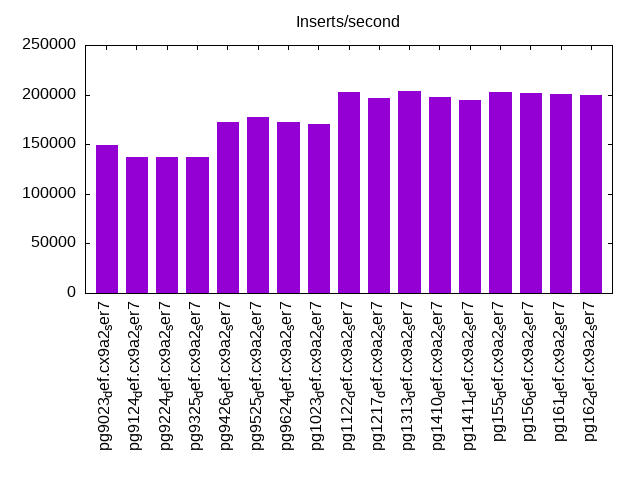
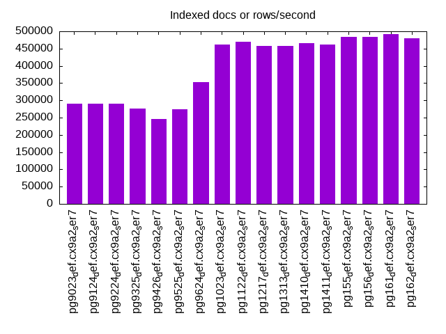
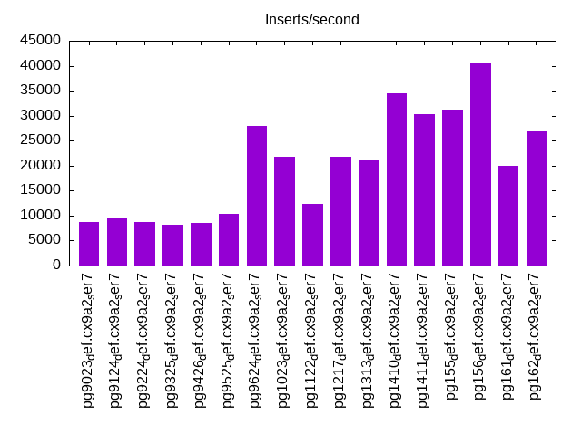
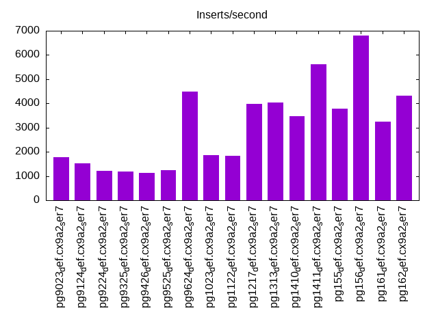
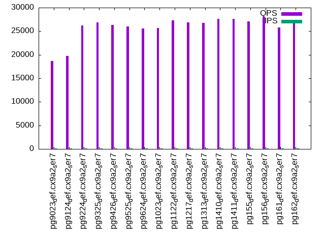
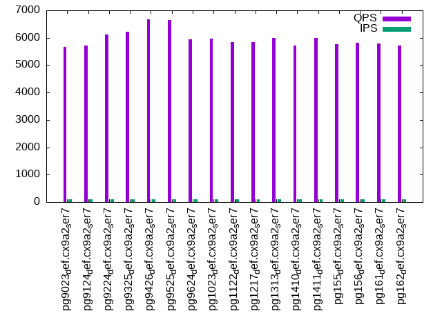
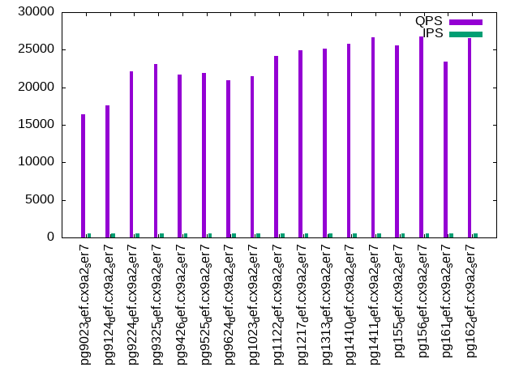
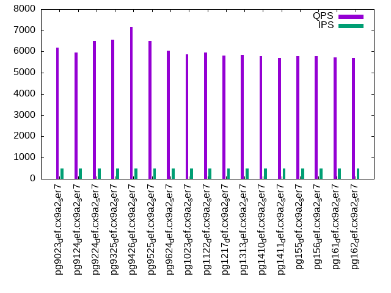
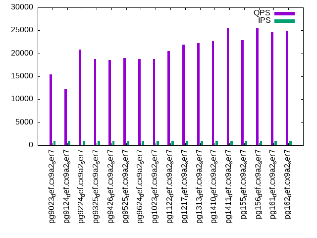
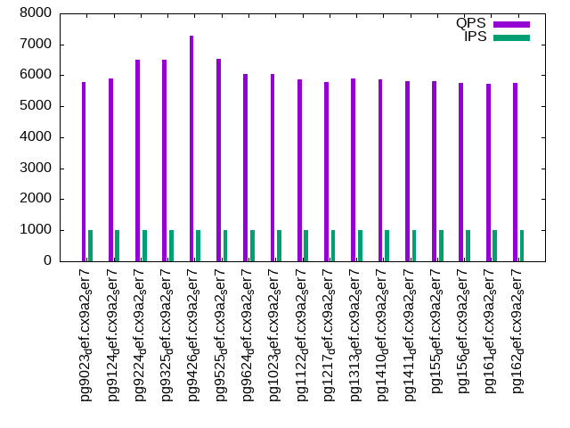

This is a report for the insert benchmark with 60M docs and 1 client(s). It is generated by scripts (bash, awk, sed) and Tufte might not be impressed. An overview of the insert benchmark is here and a short update is here. Below, by DBMS, I mean DBMS+version.config. An example is my8020.c10b40 where my means MySQL, 8020 is version 8.0.20 and c10b40 is the name for the configuration file.
The test server has 8 AMD cores, 32G RAM and an NVMe SSD. It is described here as the SER7. The benchmark was run with 1 client and there were 1 or 3 connections per client (1 for queries or inserts without rate limits, 1+1 for rate limited inserts+deletes). It uses 1 table. It loads 60M rows per table without secondary indexes, creates 3 secondary indexes per table, then inserts 40m+10m rows per table with a delete per insert to avoid growing the table. It then does 6 read+write tests for 1800s each that do queries as fast as possible with 100,100,500,500,1000,1000 inserts/s and the same for deletes/s per client concurrent with the queries. The database is cached in memory. Clients and the DBMS share one server. The per-database configs are in the per-database subdirectories here.
The tested DBMS are:
The numbers are inserts/s for l.i0, l.i1 and l.i2, indexed docs (or rows) /s for l.x and queries/s for qr100, qp100 thru qr1000, qp1000" The values are the average rate over the entire test for inserts (IPS) and queries (QPS). The range of values for IPS and QPS is split into 3 parts: bottom 25%, middle 50%, top 25%. Values in the bottom 25% have a red background, values in the top 25% have a green background and values in the middle have no color. A gray background is used for values that can be ignored because the DBMS did not sustain the target insert rate. Red backgrounds are not used when the minimum value is within 80% of the max value.
| dbms | l.i0 | l.x | l.i1 | l.i2 | qr100 | qp100 | qr500 | qp500 | qr1000 | qp1000 |
|---|---|---|---|---|---|---|---|---|---|---|
| pg9023_def.cx9a2_ser7 | 148883 | 291263 | 8673 | 1784 | 18699 | 5668 | 16393 | 6194 | 15437 | 5787 |
| pg9124_def.cx9a2_ser7 | 136986 | 291263 | 9618 | 1530 | 19799 | 5719 | 17596 | 5950 | 12291 | 5898 |
| pg9224_def.cx9a2_ser7 | 136674 | 289856 | 8656 | 1218 | 26240 | 6110 | 22111 | 6513 | 20783 | 6492 |
| pg9325_def.cx9a2_ser7 | 136674 | 275230 | 8079 | 1184 | 26850 | 6221 | 23114 | 6560 | 18728 | 6501 |
| pg9426_def.cx9a2_ser7 | 171920 | 245902 | 8518 | 1133 | 26293 | 6682 | 21648 | 7159 | 18532 | 7290 |
| pg9525_def.cx9a2_ser7 | 177515 | 273973 | 10428 | 1250 | 25977 | 6642 | 21912 | 6508 | 19019 | 6532 |
| pg9624_def.cx9a2_ser7 | 172414 | 352942 | 27933 | 4486 | 25603 | 5933 | 20950 | 6030 | 18762 | 6042 |
| pg1023_def.cx9a2_ser7 | 170454 | 461539 | 21739 | 1852 | 25635 | 5974 | 21433 | 5866 | 18767 | 6029 |
| pg1122_def.cx9a2_ser7 | 202703 | 468751 | 12330 | 1824 | 27273 | 5849 | 24200 | 5945 | 20454 | 5872 |
| pg1217_def.cx9a2_ser7 | 196078 | 458016 | 21858 | 3986 | 26886 | 5854 | 24908 | 5807 | 21912 | 5796 |
| pg1313_def.cx9a2_ser7 | 203390 | 458016 | 21075 | 4032 | 26794 | 5996 | 25175 | 5848 | 22183 | 5888 |
| pg1410_def.cx9a2_ser7 | 198020 | 465117 | 34423 | 3458 | 27584 | 5715 | 25829 | 5778 | 22705 | 5863 |
| pg1411_def.cx9a2_ser7 | 194805 | 461539 | 30257 | 5631 | 27627 | 5984 | 26645 | 5693 | 25457 | 5808 |
| pg155_def.cx9a2_ser7 | 202703 | 483872 | 31201 | 3776 | 27132 | 5767 | 25592 | 5776 | 22925 | 5800 |
| pg156_def.cx9a2_ser7 | 201342 | 483872 | 40650 | 6789 | 28062 | 5827 | 26762 | 5785 | 25499 | 5764 |
| pg161_def.cx9a2_ser7 | 200669 | 491804 | 20020 | 3257 | 25762 | 5803 | 23387 | 5740 | 24720 | 5734 |
| pg162_def.cx9a2_ser7 | 199336 | 480001 | 27082 | 4310 | 26974 | 5724 | 26579 | 5699 | 24944 | 5746 |
This table has relative throughput, throughput for the DBMS relative to the DBMS in the first line, using the absolute throughput from the previous table. Values less than 0.95 have a yellow background. Values greater than 1.05 have a blue background.
| dbms | l.i0 | l.x | l.i1 | l.i2 | qr100 | qp100 | qr500 | qp500 | qr1000 | qp1000 |
|---|---|---|---|---|---|---|---|---|---|---|
| pg9023_def.cx9a2_ser7 | 1.00 | 1.00 | 1.00 | 1.00 | 1.00 | 1.00 | 1.00 | 1.00 | 1.00 | 1.00 |
| pg9124_def.cx9a2_ser7 | 0.92 | 1.00 | 1.11 | 0.86 | 1.06 | 1.01 | 1.07 | 0.96 | 0.80 | 1.02 |
| pg9224_def.cx9a2_ser7 | 0.92 | 1.00 | 1.00 | 0.68 | 1.40 | 1.08 | 1.35 | 1.05 | 1.35 | 1.12 |
| pg9325_def.cx9a2_ser7 | 0.92 | 0.94 | 0.93 | 0.66 | 1.44 | 1.10 | 1.41 | 1.06 | 1.21 | 1.12 |
| pg9426_def.cx9a2_ser7 | 1.15 | 0.84 | 0.98 | 0.64 | 1.41 | 1.18 | 1.32 | 1.16 | 1.20 | 1.26 |
| pg9525_def.cx9a2_ser7 | 1.19 | 0.94 | 1.20 | 0.70 | 1.39 | 1.17 | 1.34 | 1.05 | 1.23 | 1.13 |
| pg9624_def.cx9a2_ser7 | 1.16 | 1.21 | 3.22 | 2.51 | 1.37 | 1.05 | 1.28 | 0.97 | 1.22 | 1.04 |
| pg1023_def.cx9a2_ser7 | 1.14 | 1.58 | 2.51 | 1.04 | 1.37 | 1.05 | 1.31 | 0.95 | 1.22 | 1.04 |
| pg1122_def.cx9a2_ser7 | 1.36 | 1.61 | 1.42 | 1.02 | 1.46 | 1.03 | 1.48 | 0.96 | 1.32 | 1.01 |
| pg1217_def.cx9a2_ser7 | 1.32 | 1.57 | 2.52 | 2.23 | 1.44 | 1.03 | 1.52 | 0.94 | 1.42 | 1.00 |
| pg1313_def.cx9a2_ser7 | 1.37 | 1.57 | 2.43 | 2.26 | 1.43 | 1.06 | 1.54 | 0.94 | 1.44 | 1.02 |
| pg1410_def.cx9a2_ser7 | 1.33 | 1.60 | 3.97 | 1.94 | 1.48 | 1.01 | 1.58 | 0.93 | 1.47 | 1.01 |
| pg1411_def.cx9a2_ser7 | 1.31 | 1.58 | 3.49 | 3.16 | 1.48 | 1.06 | 1.63 | 0.92 | 1.65 | 1.00 |
| pg155_def.cx9a2_ser7 | 1.36 | 1.66 | 3.60 | 2.12 | 1.45 | 1.02 | 1.56 | 0.93 | 1.49 | 1.00 |
| pg156_def.cx9a2_ser7 | 1.35 | 1.66 | 4.69 | 3.81 | 1.50 | 1.03 | 1.63 | 0.93 | 1.65 | 1.00 |
| pg161_def.cx9a2_ser7 | 1.35 | 1.69 | 2.31 | 1.83 | 1.38 | 1.02 | 1.43 | 0.93 | 1.60 | 0.99 |
| pg162_def.cx9a2_ser7 | 1.34 | 1.65 | 3.12 | 2.42 | 1.44 | 1.01 | 1.62 | 0.92 | 1.62 | 0.99 |
This lists the average rate of inserts/s for the tests that do inserts concurrent with queries. For such tests the query rate is listed in the table above. The read+write tests are setup so that the insert rate should match the target rate every second. Cells that are not at least 95% of the target have a red background to indicate a failure to satisfy the target.
| dbms | qr100.L1 | qp100.L2 | qr500.L3 | qp500.L4 | qr1000.L5 | qp1000.L6 |
|---|---|---|---|---|---|---|
| pg9023_def.cx9a2_ser7 | 100 | 100 | 499 | 499 | 998 | 998 |
| pg9124_def.cx9a2_ser7 | 100 | 100 | 499 | 499 | 998 | 998 |
| pg9224_def.cx9a2_ser7 | 100 | 100 | 499 | 499 | 998 | 998 |
| pg9325_def.cx9a2_ser7 | 100 | 100 | 499 | 499 | 998 | 999 |
| pg9426_def.cx9a2_ser7 | 100 | 100 | 499 | 499 | 998 | 999 |
| pg9525_def.cx9a2_ser7 | 100 | 100 | 499 | 499 | 998 | 998 |
| pg9624_def.cx9a2_ser7 | 100 | 100 | 499 | 499 | 998 | 998 |
| pg1023_def.cx9a2_ser7 | 100 | 100 | 499 | 499 | 998 | 998 |
| pg1122_def.cx9a2_ser7 | 100 | 100 | 499 | 499 | 998 | 998 |
| pg1217_def.cx9a2_ser7 | 100 | 100 | 499 | 499 | 998 | 998 |
| pg1313_def.cx9a2_ser7 | 100 | 100 | 499 | 499 | 998 | 998 |
| pg1410_def.cx9a2_ser7 | 100 | 100 | 499 | 499 | 998 | 998 |
| pg1411_def.cx9a2_ser7 | 100 | 100 | 499 | 499 | 998 | 998 |
| pg155_def.cx9a2_ser7 | 100 | 100 | 499 | 499 | 998 | 998 |
| pg156_def.cx9a2_ser7 | 100 | 100 | 499 | 499 | 998 | 998 |
| pg161_def.cx9a2_ser7 | 100 | 100 | 499 | 499 | 998 | 998 |
| pg162_def.cx9a2_ser7 | 100 | 100 | 499 | 499 | 998 | 998 |
| target | 100 | 100 | 500 | 500 | 1000 | 1000 |
l.i0: load without secondary indexes. Graphs for performance per 1-second interval are here.
Average throughput:
Insert response time histogram: each cell has the percentage of responses that take <= the time in the header and max is the max response time in seconds. For the max column values in the top 25% of the range have a red background and in the bottom 25% of the range have a green background. The red background is not used when the min value is within 80% of the max value.
| dbms | 256us | 1ms | 4ms | 16ms | 64ms | 256ms | 1s | 4s | 16s | gt | max |
|---|---|---|---|---|---|---|---|---|---|---|---|
| pg9023_def.cx9a2_ser7 | 99.472 | 0.432 | 0.096 | 0.001 | 0.029 | ||||||
| pg9124_def.cx9a2_ser7 | 99.153 | 0.756 | 0.091 | nonzero | 0.057 | ||||||
| pg9224_def.cx9a2_ser7 | 99.237 | 0.705 | 0.058 | nonzero | 0.040 | ||||||
| pg9325_def.cx9a2_ser7 | 99.231 | 0.654 | 0.075 | 0.040 | nonzero | 0.125 | |||||
| pg9426_def.cx9a2_ser7 | 99.743 | 0.175 | 0.082 | 0.001 | nonzero | 0.069 | |||||
| pg9525_def.cx9a2_ser7 | 99.956 | 0.044 | 0.002 | ||||||||
| pg9624_def.cx9a2_ser7 | 99.946 | 0.054 | 0.004 | ||||||||
| pg1023_def.cx9a2_ser7 | 99.944 | 0.056 | 0.002 | ||||||||
| pg1122_def.cx9a2_ser7 | 99.972 | 0.028 | 0.002 | ||||||||
| pg1217_def.cx9a2_ser7 | 99.964 | 0.036 | 0.002 | ||||||||
| pg1313_def.cx9a2_ser7 | 99.975 | 0.025 | 0.003 | ||||||||
| pg1410_def.cx9a2_ser7 | 99.974 | 0.026 | 0.002 | ||||||||
| pg1411_def.cx9a2_ser7 | 99.968 | 0.032 | 0.002 | ||||||||
| pg155_def.cx9a2_ser7 | 99.975 | 0.025 | 0.002 | ||||||||
| pg156_def.cx9a2_ser7 | 99.975 | 0.025 | 0.002 | ||||||||
| pg161_def.cx9a2_ser7 | 99.973 | 0.027 | 0.002 | ||||||||
| pg162_def.cx9a2_ser7 | 99.974 | 0.026 | 0.002 |
Performance metrics for the DBMS listed above. Some are normalized by throughput, others are not. Legend for results is here.
ips qps rps rmbps wps wmbps rpq rkbpq wpi wkbpi csps cpups cspq cpupq dbgb1 dbgb2 rss maxop p50 p99 tag 148883 0 0 0.0 639.8 59.6 0.000 0.000 0.004 0.410 15553 10.0 0.104 5 5.7 5.9 0.5 0.029 148452 124464 pg9023_def.cx9a2_ser7 136986 0 0 0.0 562.1 54.6 0.000 0.000 0.004 0.409 14208 9.3 0.104 5 5.7 5.9 0.4 0.057 136879 129454 pg9124_def.cx9a2_ser7 136674 0 0 0.0 1690.7 54.6 0.000 0.000 0.012 0.409 17584 9.3 0.129 5 5.7 5.9 2.8 0.040 136066 126468 pg9224_def.cx9a2_ser7 136674 0 0 0.0 1164.2 59.6 0.000 0.000 0.009 0.446 16277 9.7 0.119 6 5.7 6.0 0.4 0.125 137850 101888 pg9325_def.cx9a2_ser7 171920 0 0 0.0 1592.1 75.4 0.000 0.000 0.009 0.449 20459 11.0 0.119 5 5.7 6.0 5.0 0.069 171906 155427 pg9426_def.cx9a2_ser7 177515 0 0 0.0 455.8 75.1 0.000 0.000 0.003 0.433 20777 11.0 0.117 5 5.7 15.5 1.5 0.002 176102 170206 pg9525_def.cx9a2_ser7 172414 0 0 0.0 200.2 74.1 0.000 0.000 0.001 0.440 21815 10.9 0.127 5 5.7 15.5 5.5 0.004 171735 157324 pg9624_def.cx9a2_ser7 170454 0 0 0.0 199.3 73.2 0.000 0.000 0.001 0.440 21526 10.7 0.126 5 5.7 15.5 5.5 0.002 169919 154531 pg1023_def.cx9a2_ser7 202703 0 0 0.0 237.0 87.1 0.000 0.000 0.001 0.440 25539 11.6 0.126 5 5.7 15.5 0.5 0.002 202383 195979 pg1122_def.cx9a2_ser7 196078 0 0 0.0 223.8 82.3 0.000 0.000 0.001 0.430 24722 11.5 0.126 5 5.7 15.5 0.5 0.002 194517 175111 pg1217_def.cx9a2_ser7 203390 0 0 0.0 233.8 86.0 0.000 0.000 0.001 0.433 25609 12.1 0.126 5 5.7 15.6 4.7 0.003 202377 192693 pg1313_def.cx9a2_ser7 198020 0 0 0.0 226.7 83.6 0.000 0.000 0.001 0.433 25923 11.3 0.131 5 5.7 15.6 0.5 0.002 196621 183227 pg1410_def.cx9a2_ser7 194805 0 0 0.0 219.8 82.3 0.000 0.000 0.001 0.433 24925 11.3 0.128 5 5.7 15.6 0.5 0.002 193981 182397 pg1411_def.cx9a2_ser7 202703 0 0 0.0 231.9 85.5 0.000 0.000 0.001 0.432 26440 11.3 0.130 4 5.7 15.6 0.5 0.002 202550 188801 pg155_def.cx9a2_ser7 201342 0 0 0.0 229.5 84.8 0.000 0.000 0.001 0.431 26028 11.3 0.129 4 5.7 15.6 0.5 0.002 199885 191382 pg156_def.cx9a2_ser7 200669 0 0 0.0 229.9 84.7 0.000 0.000 0.001 0.432 26117 11.2 0.130 4 5.7 15.6 0.5 0.002 199875 186095 pg161_def.cx9a2_ser7 199336 0 0 0.0 228.2 84.1 0.000 0.000 0.001 0.432 25982 11.4 0.130 5 5.7 15.6 5.8 0.002 198569 186625 pg162_def.cx9a2_ser7
l.x: create secondary indexes.
Average throughput:
Performance metrics for the DBMS listed above. Some are normalized by throughput, others are not. Legend for results is here.
ips qps rps rmbps wps wmbps rpq rkbpq wpi wkbpi csps cpups cspq cpupq dbgb1 dbgb2 rss maxop p50 p99 tag 291263 0 0 0.0 626.9 104.8 0.000 0.000 0.002 0.369 461 6.1 0.002 2 11.5 11.7 5.3 0.002 NA NA pg9023_def.cx9a2_ser7 291263 0 0 0.0 599.5 109.7 0.000 0.000 0.002 0.386 398 6.1 0.001 2 11.5 11.7 5.3 0.002 NA NA pg9124_def.cx9a2_ser7 289856 0 0 0.0 595.4 105.6 0.000 0.000 0.002 0.373 361 6.1 0.001 2 11.5 11.7 5.3 0.002 NA NA pg9224_def.cx9a2_ser7 275230 0 0 0.0 598.1 111.0 0.000 0.000 0.002 0.413 322 6.0 0.001 2 11.5 11.7 5.9 0.002 NA NA pg9325_def.cx9a2_ser7 245902 0 0 0.0 524.9 81.0 0.000 0.000 0.002 0.337 499 6.3 0.002 2 11.5 11.7 6.0 0.002 NA NA pg9426_def.cx9a2_ser7 273973 0 0 0.0 205.5 93.9 0.000 0.000 0.001 0.351 641 5.8 0.002 2 11.5 26.6 6.0 0.002 NA NA pg9525_def.cx9a2_ser7 352942 0 0 0.0 282.9 130.1 0.000 0.000 0.001 0.377 876 5.8 0.002 1 11.5 26.6 6.0 0.002 NA NA pg9624_def.cx9a2_ser7 461539 0 0 0.0 360.0 166.9 0.000 0.000 0.001 0.370 846 5.6 0.002 1 11.5 26.6 6.0 0.002 NA NA pg1023_def.cx9a2_ser7 468751 0 0 0.0 335.4 155.3 0.000 0.000 0.001 0.339 755 5.6 0.002 1 11.5 26.6 6.0 0.002 NA NA pg1122_def.cx9a2_ser7 458016 0 0 0.0 330.7 152.8 0.000 0.000 0.001 0.342 807 5.7 0.002 1 11.5 26.6 6.0 0.002 NA NA pg1217_def.cx9a2_ser7 458016 0 0 0.0 346.1 160.1 0.000 0.000 0.001 0.358 814 5.9 0.002 1 11.5 26.6 6.0 0.002 NA NA pg1313_def.cx9a2_ser7 465117 0 0 0.0 327.8 151.6 0.000 0.000 0.001 0.334 812 5.8 0.002 1 11.5 26.6 6.0 0.002 NA NA pg1410_def.cx9a2_ser7 461539 0 0 0.0 334.3 156.8 0.000 0.000 0.001 0.348 874 5.6 0.002 1 11.5 26.6 6.0 0.002 NA NA pg1411_def.cx9a2_ser7 483872 0 0 0.0 345.5 160.2 0.000 0.000 0.001 0.339 855 5.9 0.002 1 11.5 26.6 6.0 0.002 NA NA pg155_def.cx9a2_ser7 483872 0 0 0.0 375.4 177.0 0.000 0.000 0.001 0.375 819 5.6 0.002 1 11.5 26.6 6.0 0.002 NA NA pg156_def.cx9a2_ser7 491804 0 0 0.0 364.2 168.3 0.000 0.000 0.001 0.350 782 5.9 0.002 1 11.5 26.6 6.0 0.002 NA NA pg161_def.cx9a2_ser7 480001 0 0 0.0 377.6 175.9 0.000 0.000 0.001 0.375 875 5.6 0.002 1 11.5 26.6 6.0 0.002 NA NA pg162_def.cx9a2_ser7
l.i1: continue load after secondary indexes created with 50 inserts per transaction. Graphs for performance per 1-second interval are here.
Average throughput:
Insert response time histogram: each cell has the percentage of responses that take <= the time in the header and max is the max response time in seconds. For the max column values in the top 25% of the range have a red background and in the bottom 25% of the range have a green background. The red background is not used when the min value is within 80% of the max value.
| dbms | 256us | 1ms | 4ms | 16ms | 64ms | 256ms | 1s | 4s | 16s | gt | max |
|---|---|---|---|---|---|---|---|---|---|---|---|
| pg9023_def.cx9a2_ser7 | 79.224 | 19.884 | 0.857 | 0.036 | 0.106 | ||||||
| pg9124_def.cx9a2_ser7 | 82.453 | 16.723 | 0.776 | 0.048 | 0.125 | ||||||
| pg9224_def.cx9a2_ser7 | 71.234 | 27.229 | 1.300 | 0.237 | 0.001 | 0.636 | |||||
| pg9325_def.cx9a2_ser7 | 1.415 | 80.029 | 17.017 | 1.360 | 0.178 | 0.001 | 0.370 | ||||
| pg9426_def.cx9a2_ser7 | 0.122 | 84.555 | 14.455 | 0.792 | 0.075 | nonzero | 0.287 | ||||
| pg9525_def.cx9a2_ser7 | 75.666 | 24.245 | 0.045 | 0.042 | 0.002 | nonzero | 0.372 | ||||
| pg9624_def.cx9a2_ser7 | 83.125 | 16.784 | 0.057 | 0.034 | nonzero | 0.069 | |||||
| pg1023_def.cx9a2_ser7 | 80.951 | 18.998 | 0.038 | 0.008 | 0.005 | 0.134 | |||||
| pg1122_def.cx9a2_ser7 | 79.341 | 20.629 | 0.026 | 0.004 | 0.043 | ||||||
| pg1217_def.cx9a2_ser7 | 79.873 | 20.100 | 0.021 | 0.005 | 0.050 | ||||||
| pg1313_def.cx9a2_ser7 | 78.367 | 21.599 | 0.026 | 0.009 | nonzero | 0.068 | |||||
| pg1410_def.cx9a2_ser7 | 83.287 | 16.692 | 0.017 | 0.003 | 0.042 | ||||||
| pg1411_def.cx9a2_ser7 | 79.011 | 20.957 | 0.011 | 0.021 | nonzero | 0.068 | |||||
| pg155_def.cx9a2_ser7 | 82.518 | 17.444 | 0.025 | 0.013 | 0.052 | ||||||
| pg156_def.cx9a2_ser7 | 91.653 | 8.334 | 0.005 | 0.008 | 0.057 | ||||||
| pg161_def.cx9a2_ser7 | 77.653 | 22.342 | 0.005 | nonzero | 0.022 | ||||||
| pg162_def.cx9a2_ser7 | 84.959 | 15.018 | 0.005 | 0.018 | 0.058 |
Delete response time histogram: each cell has the percentage of responses that take <= the time in the header and max is the max response time in seconds. For the max column values in the top 25% of the range have a red background and in the bottom 25% of the range have a green background. The red background is not used when the min value is within 80% of the max value.
| dbms | 256us | 1ms | 4ms | 16ms | 64ms | 256ms | 1s | 4s | 16s | gt | max |
|---|---|---|---|---|---|---|---|---|---|---|---|
| pg9023_def.cx9a2_ser7 | 5.272 | 66.902 | 1.303 | 21.952 | 4.563 | 0.008 | 0.127 | ||||
| pg9124_def.cx9a2_ser7 | 4.361 | 68.838 | 1.197 | 25.397 | 0.195 | 0.012 | 0.124 | ||||
| pg9224_def.cx9a2_ser7 | 5.975 | 68.446 | 1.109 | 23.891 | 0.524 | 0.054 | nonzero | 0.633 | |||
| pg9325_def.cx9a2_ser7 | 19.242 | 63.227 | 1.208 | 1.506 | 14.774 | 0.041 | 0.001 | nonzero | 1.162 | ||
| pg9426_def.cx9a2_ser7 | 23.544 | 56.386 | 5.259 | 0.682 | 14.091 | 0.036 | nonzero | 0.002 | 1.794 | ||
| pg9525_def.cx9a2_ser7 | 70.562 | 10.997 | 1.034 | 1.443 | 15.962 | 0.002 | 0.001 | 0.483 | |||
| pg9624_def.cx9a2_ser7 | 74.323 | 10.219 | 9.597 | 3.892 | 1.968 | nonzero | 0.001 | 0.612 | |||
| pg1023_def.cx9a2_ser7 | 71.864 | 12.315 | 8.305 | 3.660 | 3.821 | 0.034 | 0.001 | 0.390 | |||
| pg1122_def.cx9a2_ser7 | 76.841 | 4.417 | 0.953 | 1.604 | 16.186 | nonzero | 0.066 | ||||
| pg1217_def.cx9a2_ser7 | 77.044 | 5.030 | 0.819 | 17.103 | 0.003 | 0.048 | |||||
| pg1313_def.cx9a2_ser7 | 74.727 | 6.315 | 0.852 | 18.097 | 0.008 | nonzero | 0.066 | ||||
| pg1410_def.cx9a2_ser7 | 75.429 | 10.093 | 5.499 | 8.968 | 0.011 | 0.044 | |||||
| pg1411_def.cx9a2_ser7 | 75.611 | 7.185 | 3.383 | 13.808 | 0.013 | nonzero | 0.065 | ||||
| pg155_def.cx9a2_ser7 | 75.930 | 8.377 | 3.823 | 11.860 | 0.010 | 0.057 | |||||
| pg156_def.cx9a2_ser7 | 77.709 | 11.476 | 7.996 | 2.801 | 0.018 | nonzero | 0.066 | ||||
| pg161_def.cx9a2_ser7 | 72.575 | 9.024 | 0.827 | 17.574 | nonzero | 0.021 | |||||
| pg162_def.cx9a2_ser7 | 74.452 | 11.184 | 5.784 | 8.473 | 0.107 | nonzero | 0.090 |
Performance metrics for the DBMS listed above. Some are normalized by throughput, others are not. Legend for results is here.
ips qps rps rmbps wps wmbps rpq rkbpq wpi wkbpi csps cpups cspq cpupq dbgb1 dbgb2 rss maxop p50 p99 tag 8673 0 0 0.0 17205.7 319.1 0.000 0.000 1.984 37.680 5962 11.0 0.687 101 14.5 14.7 4.6 0.106 6598 1848 pg9023_def.cx9a2_ser7 9618 0 0 0.0 19165.6 353.5 0.000 0.000 1.993 37.636 6617 11.3 0.688 94 14.5 14.7 5.6 0.125 11595 3395 pg9124_def.cx9a2_ser7 8656 0 0 0.0 16803.3 342.4 0.000 0.000 1.941 40.508 8136 11.6 0.940 107 14.5 15.1 4.0 0.636 7591 3246 pg9224_def.cx9a2_ser7 8079 0 4 0.5 9490.7 254.8 0.001 0.062 1.175 32.290 8460 10.6 1.047 105 15.0 22.6 10.7 0.370 2297 1698 pg9325_def.cx9a2_ser7 8518 0 4 0.5 8609.4 241.8 0.001 0.058 1.011 29.074 7623 10.6 0.895 100 14.8 21.3 12.0 0.287 1998 1648 pg9426_def.cx9a2_ser7 10428 0 5 0.6 495.9 25.8 0.001 0.059 0.048 2.532 5487 8.1 0.526 62 15.1 55.1 14.1 0.372 2148 1798 pg9525_def.cx9a2_ser7 27933 0 14 1.6 229.4 69.9 0.000 0.060 0.008 2.562 14536 11.2 0.520 32 14.8 54.9 12.2 0.069 16082 1548 pg9624_def.cx9a2_ser7 21739 0 11 1.3 180.0 54.5 0.000 0.060 0.008 2.569 11282 10.2 0.519 38 15.0 55.0 0.1 0.134 3546 749 pg1023_def.cx9a2_ser7 12330 0 0 0.0 78.7 22.2 0.000 0.000 0.006 1.842 6454 8.4 0.523 55 15.1 52.0 10.4 0.043 2647 2198 pg1122_def.cx9a2_ser7 21858 0 0 0.0 124.7 37.1 0.000 0.000 0.006 1.737 11193 10.2 0.512 37 14.9 54.9 13.4 0.050 5694 4595 pg1217_def.cx9a2_ser7 21075 0 0 0.0 119.5 35.6 0.000 0.000 0.006 1.730 10818 10.0 0.513 38 14.9 55.0 10.5 0.068 5744 3948 pg1313_def.cx9a2_ser7 34423 0 0 0.0 190.5 57.9 0.000 0.000 0.006 1.721 17565 11.0 0.510 26 14.4 54.5 10.4 0.042 35723 3696 pg1410_def.cx9a2_ser7 30257 0 0 0.0 166.1 50.7 0.000 0.000 0.005 1.715 15360 10.6 0.508 28 14.5 54.6 12.9 0.068 11138 6243 pg1411_def.cx9a2_ser7 31201 0 0 0.0 173.8 52.6 0.000 0.000 0.006 1.726 15994 10.7 0.513 27 14.4 54.5 4.7 0.052 10538 3396 pg155_def.cx9a2_ser7 40650 0 0 0.0 223.3 67.6 0.000 0.000 0.005 1.704 20704 11.4 0.509 22 14.4 54.4 6.4 0.057 54739 3396 pg156_def.cx9a2_ser7 20020 0 0 0.0 114.6 33.6 0.000 0.000 0.006 1.718 10388 9.5 0.519 38 14.4 54.5 13.1 0.022 5194 3895 pg161_def.cx9a2_ser7 27082 0 0 0.0 150.4 45.2 0.000 0.000 0.006 1.708 13808 10.0 0.510 30 14.4 54.4 10.5 0.058 7193 3146 pg162_def.cx9a2_ser7
l.i2: continue load after secondary indexes created with 5 inserts per transaction. Graphs for performance per 1-second interval are here.
Average throughput:
Insert response time histogram: each cell has the percentage of responses that take <= the time in the header and max is the max response time in seconds. For the max column values in the top 25% of the range have a red background and in the bottom 25% of the range have a green background. The red background is not used when the min value is within 80% of the max value.
| dbms | 256us | 1ms | 4ms | 16ms | 64ms | 256ms | 1s | 4s | 16s | gt | max |
|---|---|---|---|---|---|---|---|---|---|---|---|
| pg9023_def.cx9a2_ser7 | 0.806 | 95.175 | 3.842 | 0.114 | 0.060 | 0.003 | 0.126 | ||||
| pg9124_def.cx9a2_ser7 | 0.268 | 93.977 | 5.565 | 0.164 | 0.024 | 0.001 | 0.102 | ||||
| pg9224_def.cx9a2_ser7 | 0.558 | 92.252 | 7.002 | 0.102 | 0.074 | 0.011 | 0.215 | ||||
| pg9325_def.cx9a2_ser7 | 9.456 | 85.463 | 4.892 | 0.084 | 0.097 | 0.007 | 0.234 | ||||
| pg9426_def.cx9a2_ser7 | 6.145 | 90.111 | 3.547 | 0.143 | 0.048 | 0.006 | 0.204 | ||||
| pg9525_def.cx9a2_ser7 | 81.745 | 18.252 | 0.002 | nonzero | nonzero | 0.019 | |||||
| pg9624_def.cx9a2_ser7 | 78.330 | 21.669 | 0.001 | nonzero | 0.008 | ||||||
| pg1023_def.cx9a2_ser7 | 80.990 | 19.010 | 0.001 | nonzero | nonzero | 0.025 | |||||
| pg1122_def.cx9a2_ser7 | 82.409 | 17.591 | nonzero | 0.002 | |||||||
| pg1217_def.cx9a2_ser7 | 82.970 | 17.029 | 0.001 | 0.004 | |||||||
| pg1313_def.cx9a2_ser7 | 79.084 | 20.916 | 0.001 | 0.002 | |||||||
| pg1410_def.cx9a2_ser7 | 75.560 | 24.440 | nonzero | 0.003 | |||||||
| pg1411_def.cx9a2_ser7 | 80.305 | 19.695 | nonzero | 0.002 | |||||||
| pg155_def.cx9a2_ser7 | 76.693 | 23.307 | 0.001 | 0.003 | |||||||
| pg156_def.cx9a2_ser7 | 82.063 | 17.937 | nonzero | nonzero | 0.006 | ||||||
| pg161_def.cx9a2_ser7 | 81.763 | 18.236 | 0.001 | nonzero | 0.008 | ||||||
| pg162_def.cx9a2_ser7 | 83.270 | 16.730 | nonzero | nonzero | 0.007 |
Delete response time histogram: each cell has the percentage of responses that take <= the time in the header and max is the max response time in seconds. For the max column values in the top 25% of the range have a red background and in the bottom 25% of the range have a green background. The red background is not used when the min value is within 80% of the max value.
| dbms | 256us | 1ms | 4ms | 16ms | 64ms | 256ms | 1s | 4s | 16s | gt | max |
|---|---|---|---|---|---|---|---|---|---|---|---|
| pg9023_def.cx9a2_ser7 | 66.917 | 0.535 | 0.052 | 32.451 | 0.043 | 0.001 | 0.125 | ||||
| pg9124_def.cx9a2_ser7 | 64.462 | 0.506 | 0.014 | 35.000 | 0.017 | nonzero | 0.090 | ||||
| pg9224_def.cx9a2_ser7 | 62.147 | 0.764 | 0.002 | 37.045 | 0.036 | 0.006 | 0.215 | ||||
| pg9325_def.cx9a2_ser7 | 75.854 | 0.783 | 0.004 | 10.691 | 12.664 | 0.004 | nonzero | 0.510 | |||
| pg9426_def.cx9a2_ser7 | 80.666 | 0.684 | 0.012 | 0.052 | 18.581 | 0.005 | nonzero | 0.888 | |||
| pg9525_def.cx9a2_ser7 | 81.849 | 0.040 | nonzero | nonzero | 18.111 | nonzero | 0.204 | ||||
| pg9624_def.cx9a2_ser7 | 76.526 | 3.892 | 14.487 | 3.587 | 1.507 | nonzero | nonzero | 0.280 | |||
| pg1023_def.cx9a2_ser7 | 81.113 | 0.029 | nonzero | 15.800 | 3.057 | nonzero | 0.096 | ||||
| pg1122_def.cx9a2_ser7 | 82.495 | 0.033 | 0.002 | 12.238 | 5.231 | 0.021 | |||||
| pg1217_def.cx9a2_ser7 | 83.084 | 0.037 | 0.005 | 16.875 | nonzero | 0.019 | |||||
| pg1313_def.cx9a2_ser7 | 79.191 | 0.034 | 2.395 | 18.380 | 0.013 | ||||||
| pg1410_def.cx9a2_ser7 | 75.659 | 0.023 | 0.525 | 23.793 | 0.013 | ||||||
| pg1411_def.cx9a2_ser7 | 80.361 | 0.027 | 11.042 | 8.570 | 0.008 | ||||||
| pg155_def.cx9a2_ser7 | 76.762 | 0.023 | 6.548 | 16.667 | nonzero | 0.017 | |||||
| pg156_def.cx9a2_ser7 | 82.021 | 0.039 | 12.720 | 5.221 | 0.007 | ||||||
| pg161_def.cx9a2_ser7 | 81.849 | 0.030 | 0.007 | 18.114 | 0.014 | ||||||
| pg162_def.cx9a2_ser7 | 83.340 | 0.039 | 0.092 | 16.529 | 0.010 |
Performance metrics for the DBMS listed above. Some are normalized by throughput, others are not. Legend for results is here.
ips qps rps rmbps wps wmbps rpq rkbpq wpi wkbpi csps cpups cspq cpupq dbgb1 dbgb2 rss maxop p50 p99 tag 1784 0 0 0.0 3598.0 62.4 0.000 0.000 2.017 35.822 7397 7.8 4.146 350 15.0 15.3 5.9 0.126 614 459 pg9023_def.cx9a2_ser7 1530 0 0 0.0 3099.0 53.0 0.000 0.000 2.025 35.490 6344 7.5 4.145 392 14.9 15.2 5.8 0.102 559 405 pg9124_def.cx9a2_ser7 1218 0 0 0.0 2604.4 46.1 0.000 0.000 2.138 38.705 6056 7.6 4.970 499 15.0 15.3 6.0 0.215 469 344 pg9224_def.cx9a2_ser7 1184 0 0 0.0 2277.1 45.5 0.000 0.004 1.923 39.302 5852 7.2 4.941 486 15.5 15.8 9.0 0.234 300 215 pg9325_def.cx9a2_ser7 1133 0 0 0.0 2206.6 41.1 0.000 0.010 1.947 37.119 5364 6.9 4.732 487 15.4 15.8 12.3 0.204 225 180 pg9426_def.cx9a2_ser7 1250 0 0 0.0 311.2 5.5 0.000 0.001 0.249 4.502 5198 6.1 4.158 390 15.6 55.6 12.6 0.019 235 205 pg9525_def.cx9a2_ser7 4486 0 0 0.0 42.4 9.7 0.000 0.000 0.009 2.213 20803 8.5 4.637 152 15.3 55.4 14.8 0.008 1174 170 pg9624_def.cx9a2_ser7 1852 0 0 0.0 60.0 6.5 0.000 0.000 0.032 3.607 8707 7.1 4.701 307 15.4 55.4 12.8 0.025 365 245 pg1023_def.cx9a2_ser7 1824 0 0 0.0 71.9 6.5 0.000 0.001 0.039 3.627 8617 7.0 4.724 307 15.6 52.5 12.3 0.002 330 275 pg1122_def.cx9a2_ser7 3986 0 0 0.0 47.9 10.8 0.000 0.000 0.012 2.768 18272 8.7 4.585 175 15.3 55.3 10.2 0.004 759 604 pg1217_def.cx9a2_ser7 4032 0 0 0.0 47.8 10.7 0.000 0.000 0.012 2.719 18705 8.7 4.639 173 15.3 55.3 4.0 0.002 939 649 pg1313_def.cx9a2_ser7 3458 0 0 0.0 43.6 9.4 0.000 0.000 0.013 2.793 15905 8.0 4.600 185 14.8 54.9 12.0 0.003 919 704 pg1410_def.cx9a2_ser7 5631 0 0 0.0 46.2 10.6 0.000 0.000 0.008 1.924 25744 8.7 4.572 124 14.9 55.0 14.0 0.002 1254 824 pg1411_def.cx9a2_ser7 3776 0 0 0.0 45.4 10.0 0.000 0.000 0.012 2.703 17128 8.0 4.536 169 14.9 54.9 9.9 0.003 939 569 pg155_def.cx9a2_ser7 6789 0 0 0.0 50.6 11.9 0.000 0.000 0.007 1.790 30538 9.1 4.498 107 14.8 54.9 11.8 0.006 1409 954 pg156_def.cx9a2_ser7 3257 0 0 0.0 42.9 9.2 0.000 0.000 0.013 2.902 14899 7.7 4.574 189 14.9 54.9 0.3 0.008 624 474 pg161_def.cx9a2_ser7 4310 0 0 0.0 49.1 10.9 0.000 0.000 0.011 2.594 19717 8.0 4.574 148 14.9 54.9 0.3 0.007 789 569 pg162_def.cx9a2_ser7
qr100.L1: range queries with 100 insert/s per client. Graphs for performance per 1-second interval are here.
Average throughput:
Query response time histogram: each cell has the percentage of responses that take <= the time in the header and max is the max response time in seconds. For max values in the top 25% of the range have a red background and in the bottom 25% of the range have a green background. The red background is not used when the min value is within 80% of the max value.
| dbms | 256us | 1ms | 4ms | 16ms | 64ms | 256ms | 1s | 4s | 16s | gt | max |
|---|---|---|---|---|---|---|---|---|---|---|---|
| pg9023_def.cx9a2_ser7 | 99.990 | 0.010 | nonzero | 0.004 | |||||||
| pg9124_def.cx9a2_ser7 | 99.991 | 0.009 | nonzero | 0.002 | |||||||
| pg9224_def.cx9a2_ser7 | 99.995 | 0.005 | nonzero | 0.001 | |||||||
| pg9325_def.cx9a2_ser7 | 99.995 | 0.005 | nonzero | nonzero | 0.005 | ||||||
| pg9426_def.cx9a2_ser7 | 99.995 | 0.005 | nonzero | 0.001 | |||||||
| pg9525_def.cx9a2_ser7 | 99.994 | 0.006 | nonzero | nonzero | 0.004 | ||||||
| pg9624_def.cx9a2_ser7 | 99.994 | 0.006 | nonzero | 0.002 | |||||||
| pg1023_def.cx9a2_ser7 | 99.995 | 0.005 | nonzero | 0.001 | |||||||
| pg1122_def.cx9a2_ser7 | 99.995 | 0.005 | 0.001 | ||||||||
| pg1217_def.cx9a2_ser7 | 99.994 | 0.006 | nonzero | 0.004 | |||||||
| pg1313_def.cx9a2_ser7 | 99.994 | 0.006 | 0.001 | ||||||||
| pg1410_def.cx9a2_ser7 | 99.994 | 0.006 | nonzero | 0.004 | |||||||
| pg1411_def.cx9a2_ser7 | 99.995 | 0.005 | nonzero | 0.004 | |||||||
| pg155_def.cx9a2_ser7 | 99.995 | 0.005 | nonzero | 0.001 | |||||||
| pg156_def.cx9a2_ser7 | 99.994 | 0.006 | 0.001 | ||||||||
| pg161_def.cx9a2_ser7 | 99.993 | 0.007 | nonzero | nonzero | 0.006 | ||||||
| pg162_def.cx9a2_ser7 | 99.994 | 0.006 | 0.001 |
Insert response time histogram: each cell has the percentage of responses that take <= the time in the header and max is the max response time in seconds. For max values in the top 25% of the range have a red background and in the bottom 25% of the range have a green background. The red background is not used when the min value is within 80% of the max value.
| dbms | 256us | 1ms | 4ms | 16ms | 64ms | 256ms | 1s | 4s | 16s | gt | max |
|---|---|---|---|---|---|---|---|---|---|---|---|
| pg9023_def.cx9a2_ser7 | 5.278 | 94.500 | 0.222 | 0.020 | |||||||
| pg9124_def.cx9a2_ser7 | 15.694 | 84.222 | 0.083 | 0.021 | |||||||
| pg9224_def.cx9a2_ser7 | 13.861 | 86.139 | 0.011 | ||||||||
| pg9325_def.cx9a2_ser7 | 19.139 | 80.861 | 0.010 | ||||||||
| pg9426_def.cx9a2_ser7 | 11.139 | 88.833 | 0.028 | 0.018 | |||||||
| pg9525_def.cx9a2_ser7 | 0.056 | 99.639 | 0.306 | 0.006 | |||||||
| pg9624_def.cx9a2_ser7 | 99.778 | 0.222 | 0.006 | ||||||||
| pg1023_def.cx9a2_ser7 | 99.694 | 0.306 | 0.006 | ||||||||
| pg1122_def.cx9a2_ser7 | 0.194 | 99.472 | 0.333 | 0.006 | |||||||
| pg1217_def.cx9a2_ser7 | 0.028 | 99.806 | 0.167 | 0.007 | |||||||
| pg1313_def.cx9a2_ser7 | 0.056 | 99.889 | 0.056 | 0.006 | |||||||
| pg1410_def.cx9a2_ser7 | 0.250 | 99.694 | 0.056 | 0.006 | |||||||
| pg1411_def.cx9a2_ser7 | 0.111 | 99.639 | 0.250 | 0.006 | |||||||
| pg155_def.cx9a2_ser7 | 1.361 | 98.389 | 0.250 | 0.006 | |||||||
| pg156_def.cx9a2_ser7 | 0.083 | 99.722 | 0.194 | 0.006 | |||||||
| pg161_def.cx9a2_ser7 | 0.111 | 99.694 | 0.194 | 0.007 | |||||||
| pg162_def.cx9a2_ser7 | 0.417 | 99.306 | 0.278 | 0.006 |
Delete response time histogram: each cell has the percentage of responses that take <= the time in the header and max is the max response time in seconds. For max values in the top 25% of the range have a red background and in the bottom 25% of the range have a green background. The red background is not used when the min value is within 80% of the max value.
| dbms | 256us | 1ms | 4ms | 16ms | 64ms | 256ms | 1s | 4s | 16s | gt | max |
|---|---|---|---|---|---|---|---|---|---|---|---|
| pg9023_def.cx9a2_ser7 | 0.222 | 23.361 | 76.389 | 0.028 | 0.004 | ||||||
| pg9124_def.cx9a2_ser7 | 0.028 | 20.694 | 75.417 | 3.861 | 0.005 | ||||||
| pg9224_def.cx9a2_ser7 | 0.028 | 19.361 | 77.778 | 2.833 | 0.005 | ||||||
| pg9325_def.cx9a2_ser7 | 0.111 | 18.917 | 80.944 | 0.028 | 0.004 | ||||||
| pg9426_def.cx9a2_ser7 | 18.833 | 81.000 | 0.167 | 0.005 | |||||||
| pg9525_def.cx9a2_ser7 | 0.139 | 19.472 | 79.861 | 0.528 | 0.004 | ||||||
| pg9624_def.cx9a2_ser7 | 0.167 | 18.139 | 80.694 | 1.000 | 0.005 | ||||||
| pg1023_def.cx9a2_ser7 | 0.167 | 21.833 | 77.056 | 0.944 | 0.005 | ||||||
| pg1122_def.cx9a2_ser7 | 0.056 | 22.194 | 67.778 | 9.972 | 0.006 | ||||||
| pg1217_def.cx9a2_ser7 | 52.528 | 47.472 | 0.002 | ||||||||
| pg1313_def.cx9a2_ser7 | 0.417 | 48.083 | 51.500 | 0.002 | |||||||
| pg1410_def.cx9a2_ser7 | 0.611 | 54.056 | 45.333 | 0.002 | |||||||
| pg1411_def.cx9a2_ser7 | 0.333 | 45.222 | 54.444 | 0.002 | |||||||
| pg155_def.cx9a2_ser7 | 0.722 | 52.944 | 46.333 | 0.002 | |||||||
| pg156_def.cx9a2_ser7 | 0.056 | 54.583 | 45.361 | 0.002 | |||||||
| pg161_def.cx9a2_ser7 | 100.000 | 0.013 | |||||||||
| pg162_def.cx9a2_ser7 | 0.056 | 50.444 | 49.500 | 0.002 |
Performance metrics for the DBMS listed above. Some are normalized by throughput, others are not. Legend for results is here.
ips qps rps rmbps wps wmbps rpq rkbpq wpi wkbpi csps cpups cspq cpupq dbgb1 dbgb2 rss maxop p50 p99 tag 100 18699 0 0.0 206.0 3.0 0.000 0.000 2.064 30.621 71547 5.0 3.826 21 15.0 15.1 1.1 0.004 18203 17996 pg9023_def.cx9a2_ser7 100 19799 0 0.0 206.4 3.0 0.000 0.000 2.068 30.669 75746 4.8 3.826 19 14.9 15.1 2.5 0.002 19032 18501 pg9124_def.cx9a2_ser7 100 26240 0 0.0 208.3 3.0 0.000 0.000 2.089 30.673 100341 4.6 3.824 14 15.0 15.1 0.4 0.001 26386 21640 pg9224_def.cx9a2_ser7 100 26850 0 0.0 215.4 3.6 0.000 0.000 2.161 36.721 102683 4.7 3.824 14 15.5 15.6 0.7 0.005 26819 25253 pg9325_def.cx9a2_ser7 100 26293 0 0.0 211.0 3.4 0.000 0.000 2.114 35.395 100505 4.8 3.822 15 15.4 15.6 1.8 0.001 26293 25637 pg9426_def.cx9a2_ser7 100 25977 0 0.0 13.9 1.0 0.000 0.000 0.139 10.014 99290 4.7 3.822 14 15.6 52.3 1.2 0.004 26184 20371 pg9525_def.cx9a2_ser7 100 25603 0 0.0 10.8 1.0 0.000 0.000 0.108 10.160 97915 4.7 3.824 15 15.3 55.4 2.5 0.002 25716 19131 pg9624_def.cx9a2_ser7 100 25635 0 0.0 10.8 1.0 0.000 0.000 0.108 10.068 97978 4.8 3.822 15 15.4 55.0 1.2 0.001 25756 19020 pg1023_def.cx9a2_ser7 100 27273 0 0.0 11.2 1.0 0.000 0.000 0.112 10.023 104234 4.4 3.822 13 15.6 48.2 1.1 0.001 27522 20473 pg1122_def.cx9a2_ser7 100 26886 0 0.0 11.3 1.0 0.000 0.000 0.113 10.027 102750 4.2 3.822 12 15.3 53.5 2.5 0.004 27018 19470 pg1217_def.cx9a2_ser7 100 26794 0 0.0 11.2 1.0 0.000 0.000 0.112 9.983 102403 4.5 3.822 13 15.3 53.5 2.5 0.001 27093 19787 pg1313_def.cx9a2_ser7 100 27584 0 0.0 11.9 1.0 0.000 0.000 0.119 10.321 105375 4.0 3.820 12 14.8 53.1 2.5 0.004 27749 22422 pg1410_def.cx9a2_ser7 100 27627 0 0.0 11.7 1.0 0.000 0.000 0.117 10.165 105596 4.4 3.822 13 14.9 55.0 0.7 0.004 27666 23046 pg1411_def.cx9a2_ser7 100 27132 0 0.0 11.8 1.0 0.000 0.000 0.119 10.225 103579 4.5 3.818 13 14.9 53.2 1.1 0.001 27140 22002 pg155_def.cx9a2_ser7 100 28062 0 0.0 11.6 1.0 0.000 0.000 0.116 10.241 107165 4.1 3.819 12 14.8 54.9 1.1 0.001 28246 21595 pg156_def.cx9a2_ser7 100 25762 0 0.0 12.1 1.0 0.000 0.000 0.121 10.764 98408 4.8 3.820 15 14.9 53.2 5.3 0.006 25940 19340 pg161_def.cx9a2_ser7 100 26974 0 0.0 11.6 1.0 0.000 0.000 0.116 10.323 103025 4.1 3.819 12 14.9 53.0 5.6 0.001 27147 19740 pg162_def.cx9a2_ser7
qp100.L2: point queries with 100 insert/s per client. Graphs for performance per 1-second interval are here.
Average throughput:
Query response time histogram: each cell has the percentage of responses that take <= the time in the header and max is the max response time in seconds. For max values in the top 25% of the range have a red background and in the bottom 25% of the range have a green background. The red background is not used when the min value is within 80% of the max value.
| dbms | 256us | 1ms | 4ms | 16ms | 64ms | 256ms | 1s | 4s | 16s | gt | max |
|---|---|---|---|---|---|---|---|---|---|---|---|
| pg9023_def.cx9a2_ser7 | 98.560 | 1.440 | nonzero | 0.003 | |||||||
| pg9124_def.cx9a2_ser7 | 98.429 | 1.571 | nonzero | 0.003 | |||||||
| pg9224_def.cx9a2_ser7 | 99.786 | 0.213 | nonzero | 0.003 | |||||||
| pg9325_def.cx9a2_ser7 | 99.614 | 0.386 | nonzero | 0.001 | |||||||
| pg9426_def.cx9a2_ser7 | 99.787 | 0.213 | nonzero | 0.001 | |||||||
| pg9525_def.cx9a2_ser7 | 99.800 | 0.200 | nonzero | 0.001 | |||||||
| pg9624_def.cx9a2_ser7 | 99.689 | 0.311 | nonzero | 0.002 | |||||||
| pg1023_def.cx9a2_ser7 | 99.654 | 0.346 | nonzero | 0.001 | |||||||
| pg1122_def.cx9a2_ser7 | 99.665 | 0.335 | nonzero | 0.001 | |||||||
| pg1217_def.cx9a2_ser7 | 99.627 | 0.373 | nonzero | 0.001 | |||||||
| pg1313_def.cx9a2_ser7 | 99.632 | 0.368 | nonzero | 0.001 | |||||||
| pg1410_def.cx9a2_ser7 | 99.657 | 0.343 | nonzero | nonzero | 0.010 | ||||||
| pg1411_def.cx9a2_ser7 | 99.652 | 0.347 | nonzero | 0.002 | |||||||
| pg155_def.cx9a2_ser7 | 99.666 | 0.334 | nonzero | 0.002 | |||||||
| pg156_def.cx9a2_ser7 | 99.647 | 0.353 | nonzero | 0.001 | |||||||
| pg161_def.cx9a2_ser7 | 99.671 | 0.329 | nonzero | 0.002 | |||||||
| pg162_def.cx9a2_ser7 | 99.710 | 0.290 | nonzero | 0.001 |
Insert response time histogram: each cell has the percentage of responses that take <= the time in the header and max is the max response time in seconds. For max values in the top 25% of the range have a red background and in the bottom 25% of the range have a green background. The red background is not used when the min value is within 80% of the max value.
| dbms | 256us | 1ms | 4ms | 16ms | 64ms | 256ms | 1s | 4s | 16s | gt | max |
|---|---|---|---|---|---|---|---|---|---|---|---|
| pg9023_def.cx9a2_ser7 | 35.333 | 64.639 | 0.028 | 0.017 | |||||||
| pg9124_def.cx9a2_ser7 | 34.222 | 65.778 | 0.015 | ||||||||
| pg9224_def.cx9a2_ser7 | 30.944 | 69.056 | 0.011 | ||||||||
| pg9325_def.cx9a2_ser7 | 32.667 | 67.333 | 0.012 | ||||||||
| pg9426_def.cx9a2_ser7 | 34.583 | 65.417 | 0.011 | ||||||||
| pg9525_def.cx9a2_ser7 | 99.639 | 0.361 | 0.007 | ||||||||
| pg9624_def.cx9a2_ser7 | 99.833 | 0.167 | 0.006 | ||||||||
| pg1023_def.cx9a2_ser7 | 99.917 | 0.083 | 0.006 | ||||||||
| pg1122_def.cx9a2_ser7 | 0.306 | 99.389 | 0.306 | 0.006 | |||||||
| pg1217_def.cx9a2_ser7 | 99.861 | 0.139 | 0.006 | ||||||||
| pg1313_def.cx9a2_ser7 | 99.694 | 0.306 | 0.006 | ||||||||
| pg1410_def.cx9a2_ser7 | 99.833 | 0.167 | 0.006 | ||||||||
| pg1411_def.cx9a2_ser7 | 99.611 | 0.389 | 0.006 | ||||||||
| pg155_def.cx9a2_ser7 | 99.750 | 0.250 | 0.006 | ||||||||
| pg156_def.cx9a2_ser7 | 99.694 | 0.306 | 0.006 | ||||||||
| pg161_def.cx9a2_ser7 | 0.028 | 99.750 | 0.222 | 0.006 | |||||||
| pg162_def.cx9a2_ser7 | 0.083 | 99.667 | 0.250 | 0.006 |
Delete response time histogram: each cell has the percentage of responses that take <= the time in the header and max is the max response time in seconds. For max values in the top 25% of the range have a red background and in the bottom 25% of the range have a green background. The red background is not used when the min value is within 80% of the max value.
| dbms | 256us | 1ms | 4ms | 16ms | 64ms | 256ms | 1s | 4s | 16s | gt | max |
|---|---|---|---|---|---|---|---|---|---|---|---|
| pg9023_def.cx9a2_ser7 | 39.500 | 60.500 | 0.011 | ||||||||
| pg9124_def.cx9a2_ser7 | 56.000 | 44.000 | 0.010 | ||||||||
| pg9224_def.cx9a2_ser7 | 25.444 | 74.556 | 0.011 | ||||||||
| pg9325_def.cx9a2_ser7 | 39.306 | 60.694 | 0.012 | ||||||||
| pg9426_def.cx9a2_ser7 | 32.222 | 67.778 | 0.013 | ||||||||
| pg9525_def.cx9a2_ser7 | 31.417 | 68.583 | 0.010 | ||||||||
| pg9624_def.cx9a2_ser7 | 31.833 | 68.167 | 0.011 | ||||||||
| pg1023_def.cx9a2_ser7 | 35.611 | 64.389 | 0.011 | ||||||||
| pg1122_def.cx9a2_ser7 | 34.139 | 65.861 | 0.011 | ||||||||
| pg1217_def.cx9a2_ser7 | 6.694 | 93.278 | 0.028 | 0.004 | |||||||
| pg1313_def.cx9a2_ser7 | 5.694 | 94.028 | 0.278 | 0.004 | |||||||
| pg1410_def.cx9a2_ser7 | 7.917 | 91.333 | 0.750 | 0.005 | |||||||
| pg1411_def.cx9a2_ser7 | 0.278 | 54.917 | 44.806 | 0.003 | |||||||
| pg155_def.cx9a2_ser7 | 3.889 | 94.083 | 2.028 | 0.005 | |||||||
| pg156_def.cx9a2_ser7 | 0.500 | 54.194 | 45.306 | 0.002 | |||||||
| pg161_def.cx9a2_ser7 | 99.972 | 0.028 | 0.016 | ||||||||
| pg162_def.cx9a2_ser7 | 0.667 | 60.833 | 38.500 | 0.003 |
Performance metrics for the DBMS listed above. Some are normalized by throughput, others are not. Legend for results is here.
ips qps rps rmbps wps wmbps rpq rkbpq wpi wkbpi csps cpups cspq cpupq dbgb1 dbgb2 rss maxop p50 p99 tag 100 5668 0 0.0 215.9 3.4 0.000 0.000 2.163 34.776 23468 7.3 4.140 103 15.0 15.1 6.1 0.003 5371 5275 pg9023_def.cx9a2_ser7 100 5719 0 0.0 220.2 3.4 0.000 0.000 2.209 35.192 23677 6.2 4.140 87 14.9 15.1 5.6 0.003 5482 5258 pg9124_def.cx9a2_ser7 100 6110 0 0.0 217.7 3.4 0.000 0.000 2.181 34.843 25131 6.5 4.113 85 15.0 15.1 6.2 0.003 5690 4363 pg9224_def.cx9a2_ser7 100 6221 0 0.0 357.7 4.3 0.000 0.000 3.584 43.655 26049 6.6 4.187 85 15.5 15.6 2.5 0.001 5838 4299 pg9325_def.cx9a2_ser7 100 6682 0 0.0 359.5 4.2 0.000 0.000 3.602 43.391 27901 6.5 4.176 78 15.4 15.6 0.7 0.001 6169 5226 pg9426_def.cx9a2_ser7 100 6642 0 0.0 141.0 2.1 0.000 0.000 1.413 21.530 27268 6.4 4.106 77 15.6 49.1 0.8 0.001 6236 5078 pg9525_def.cx9a2_ser7 100 5933 0 0.0 93.5 2.1 0.000 0.000 0.937 21.888 24416 6.7 4.116 90 15.3 55.4 0.7 0.002 5610 4395 pg9624_def.cx9a2_ser7 100 5974 0 0.0 94.1 2.1 0.000 0.000 0.943 21.888 24585 6.8 4.115 91 15.4 51.5 7.4 0.001 5626 4283 pg1023_def.cx9a2_ser7 100 5849 0 0.0 95.4 2.1 0.000 0.000 0.956 21.091 24068 6.8 4.115 93 15.6 46.7 2.6 0.001 5464 4155 pg1122_def.cx9a2_ser7 100 5854 0 0.0 94.7 2.1 0.000 0.000 0.949 21.066 24105 6.7 4.118 92 15.3 52.1 2.5 0.001 5402 4203 pg1217_def.cx9a2_ser7 100 5996 0 0.0 94.9 2.1 0.000 0.000 0.951 21.073 24664 6.7 4.113 89 15.3 52.1 0.7 0.001 5562 5002 pg1313_def.cx9a2_ser7 100 5715 0 0.0 92.5 2.1 0.000 0.000 0.927 21.165 23553 6.7 4.121 94 14.9 51.7 0.7 0.010 5226 4155 pg1410_def.cx9a2_ser7 100 5984 0 0.0 11.9 1.0 0.000 0.000 0.120 10.260 24609 6.6 4.112 88 14.9 52.0 0.7 0.002 5498 4219 pg1411_def.cx9a2_ser7 100 5767 0 0.0 92.8 2.1 0.000 0.000 0.930 21.084 23496 6.5 4.075 90 14.9 51.7 2.0 0.002 5243 4140 pg155_def.cx9a2_ser7 100 5827 0 0.0 11.9 1.0 0.000 0.000 0.120 10.345 23715 6.4 4.070 88 14.8 51.8 0.7 0.001 5338 4811 pg156_def.cx9a2_ser7 100 5803 0 0.0 93.0 2.1 0.000 0.000 0.932 21.450 23616 6.7 4.070 92 14.9 51.6 2.0 0.002 5402 4107 pg161_def.cx9a2_ser7 100 5724 0 0.0 11.9 1.0 0.000 0.000 0.119 10.340 23272 6.6 4.066 92 14.9 50.0 0.7 0.001 5210 4092 pg162_def.cx9a2_ser7
qr500.L3: range queries with 500 insert/s per client. Graphs for performance per 1-second interval are here.
Average throughput:
Query response time histogram: each cell has the percentage of responses that take <= the time in the header and max is the max response time in seconds. For max values in the top 25% of the range have a red background and in the bottom 25% of the range have a green background. The red background is not used when the min value is within 80% of the max value.
| dbms | 256us | 1ms | 4ms | 16ms | 64ms | 256ms | 1s | 4s | 16s | gt | max |
|---|---|---|---|---|---|---|---|---|---|---|---|
| pg9023_def.cx9a2_ser7 | 99.983 | 0.017 | nonzero | 0.002 | |||||||
| pg9124_def.cx9a2_ser7 | 99.988 | 0.012 | nonzero | 0.001 | |||||||
| pg9224_def.cx9a2_ser7 | 99.993 | 0.007 | nonzero | 0.002 | |||||||
| pg9325_def.cx9a2_ser7 | 99.992 | 0.008 | nonzero | nonzero | 0.004 | ||||||
| pg9426_def.cx9a2_ser7 | 99.990 | 0.010 | nonzero | 0.003 | |||||||
| pg9525_def.cx9a2_ser7 | 99.991 | 0.009 | nonzero | nonzero | 0.005 | ||||||
| pg9624_def.cx9a2_ser7 | 99.990 | 0.010 | nonzero | nonzero | 0.009 | ||||||
| pg1023_def.cx9a2_ser7 | 99.992 | 0.008 | nonzero | nonzero | 0.004 | ||||||
| pg1122_def.cx9a2_ser7 | 99.993 | 0.007 | nonzero | 0.004 | |||||||
| pg1217_def.cx9a2_ser7 | 99.993 | 0.007 | nonzero | nonzero | 0.005 | ||||||
| pg1313_def.cx9a2_ser7 | 99.993 | 0.007 | nonzero | 0.003 | |||||||
| pg1410_def.cx9a2_ser7 | 99.994 | 0.006 | nonzero | 0.002 | |||||||
| pg1411_def.cx9a2_ser7 | 99.993 | 0.007 | 0.001 | ||||||||
| pg155_def.cx9a2_ser7 | 99.994 | 0.006 | nonzero | nonzero | 0.005 | ||||||
| pg156_def.cx9a2_ser7 | 99.993 | 0.007 | 0.001 | ||||||||
| pg161_def.cx9a2_ser7 | 99.992 | 0.008 | nonzero | 0.003 | |||||||
| pg162_def.cx9a2_ser7 | 99.993 | 0.007 | 0.001 |
Insert response time histogram: each cell has the percentage of responses that take <= the time in the header and max is the max response time in seconds. For max values in the top 25% of the range have a red background and in the bottom 25% of the range have a green background. The red background is not used when the min value is within 80% of the max value.
| dbms | 256us | 1ms | 4ms | 16ms | 64ms | 256ms | 1s | 4s | 16s | gt | max |
|---|---|---|---|---|---|---|---|---|---|---|---|
| pg9023_def.cx9a2_ser7 | 50.911 | 48.922 | 0.167 | 0.024 | |||||||
| pg9124_def.cx9a2_ser7 | 41.367 | 58.472 | 0.161 | 0.023 | |||||||
| pg9224_def.cx9a2_ser7 | 31.561 | 68.394 | 0.044 | 0.023 | |||||||
| pg9325_def.cx9a2_ser7 | 16.572 | 83.344 | 0.083 | 0.024 | |||||||
| pg9426_def.cx9a2_ser7 | 22.856 | 77.128 | 0.017 | 0.023 | |||||||
| pg9525_def.cx9a2_ser7 | 4.400 | 95.528 | 0.072 | 0.006 | |||||||
| pg9624_def.cx9a2_ser7 | 1.711 | 98.283 | 0.006 | 0.006 | |||||||
| pg1023_def.cx9a2_ser7 | 2.567 | 97.417 | 0.017 | 0.006 | |||||||
| pg1122_def.cx9a2_ser7 | 5.272 | 94.700 | 0.028 | 0.006 | |||||||
| pg1217_def.cx9a2_ser7 | 2.428 | 97.528 | 0.044 | 0.006 | |||||||
| pg1313_def.cx9a2_ser7 | 2.556 | 97.439 | 0.006 | 0.006 | |||||||
| pg1410_def.cx9a2_ser7 | 4.289 | 95.678 | 0.033 | 0.006 | |||||||
| pg1411_def.cx9a2_ser7 | 5.928 | 94.017 | 0.056 | 0.006 | |||||||
| pg155_def.cx9a2_ser7 | 5.078 | 94.911 | 0.011 | 0.006 | |||||||
| pg156_def.cx9a2_ser7 | 3.533 | 96.456 | 0.011 | 0.006 | |||||||
| pg161_def.cx9a2_ser7 | 2.933 | 97.061 | 0.006 | 0.006 | |||||||
| pg162_def.cx9a2_ser7 | 7.389 | 92.589 | 0.022 | 0.012 |
Delete response time histogram: each cell has the percentage of responses that take <= the time in the header and max is the max response time in seconds. For max values in the top 25% of the range have a red background and in the bottom 25% of the range have a green background. The red background is not used when the min value is within 80% of the max value.
| dbms | 256us | 1ms | 4ms | 16ms | 64ms | 256ms | 1s | 4s | 16s | gt | max |
|---|---|---|---|---|---|---|---|---|---|---|---|
| pg9023_def.cx9a2_ser7 | 25.806 | 45.739 | 2.861 | 25.589 | 0.006 | 0.018 | |||||
| pg9124_def.cx9a2_ser7 | 25.611 | 53.472 | 2.533 | 18.383 | 0.010 | ||||||
| pg9224_def.cx9a2_ser7 | 27.706 | 49.889 | 3.733 | 18.672 | 0.014 | ||||||
| pg9325_def.cx9a2_ser7 | 27.811 | 44.900 | 1.256 | 26.033 | 0.014 | ||||||
| pg9426_def.cx9a2_ser7 | 25.239 | 50.572 | 1.783 | 22.406 | 0.014 | ||||||
| pg9525_def.cx9a2_ser7 | 27.750 | 38.583 | 3.256 | 30.411 | 0.012 | ||||||
| pg9624_def.cx9a2_ser7 | 27.344 | 47.467 | 2.706 | 22.483 | 0.010 | ||||||
| pg1023_def.cx9a2_ser7 | 24.044 | 50.228 | 2.783 | 22.944 | 0.011 | ||||||
| pg1122_def.cx9a2_ser7 | 27.444 | 41.000 | 2.311 | 29.244 | 0.010 | ||||||
| pg1217_def.cx9a2_ser7 | 34.489 | 46.494 | 17.783 | 1.233 | 0.006 | ||||||
| pg1313_def.cx9a2_ser7 | 24.039 | 39.694 | 22.761 | 13.506 | 0.007 | ||||||
| pg1410_def.cx9a2_ser7 | 28.600 | 48.328 | 20.278 | 2.794 | 0.006 | ||||||
| pg1411_def.cx9a2_ser7 | 11.756 | 34.178 | 49.100 | 4.967 | 0.006 | ||||||
| pg155_def.cx9a2_ser7 | 22.089 | 46.572 | 16.939 | 14.400 | 0.006 | ||||||
| pg156_def.cx9a2_ser7 | 10.650 | 31.750 | 49.178 | 8.422 | 0.007 | ||||||
| pg161_def.cx9a2_ser7 | 20.761 | 48.811 | 30.422 | 0.006 | 0.017 | ||||||
| pg162_def.cx9a2_ser7 | 16.306 | 28.689 | 50.267 | 4.739 | 0.006 |
Performance metrics for the DBMS listed above. Some are normalized by throughput, others are not. Legend for results is here.
ips qps rps rmbps wps wmbps rpq rkbpq wpi wkbpi csps cpups cspq cpupq dbgb1 dbgb2 rss maxop p50 p99 tag 499 16393 0 0.0 1066.3 15.5 0.000 0.000 2.136 31.737 62919 5.8 3.838 28 15.0 15.2 4.6 0.002 17031 13768 pg9023_def.cx9a2_ser7 499 17596 0 0.0 1068.2 15.5 0.000 0.000 2.140 31.709 67526 5.7 3.837 26 15.0 15.1 4.8 0.001 17804 14364 pg9124_def.cx9a2_ser7 499 22111 0 0.0 1081.1 15.4 0.000 0.000 2.166 31.643 84778 5.2 3.834 19 15.0 15.2 4.8 0.002 23781 18427 pg9224_def.cx9a2_ser7 499 23114 0 0.0 1105.1 18.5 0.000 0.000 2.214 37.890 88770 5.2 3.841 18 15.5 15.6 2.0 0.004 24402 18283 pg9325_def.cx9a2_ser7 499 21648 0 0.0 1102.0 18.1 0.000 0.000 2.208 37.203 83132 5.3 3.840 20 15.4 15.6 6.0 0.003 20547 15759 pg9426_def.cx9a2_ser7 499 21912 0 0.0 139.8 3.4 0.000 0.000 0.280 6.880 83924 5.0 3.830 18 15.6 47.6 1.3 0.005 21976 18398 pg9525_def.cx9a2_ser7 499 20950 0 0.0 92.3 3.3 0.000 0.000 0.185 6.872 80350 5.1 3.835 19 15.3 53.9 4.6 0.009 19386 18044 pg9624_def.cx9a2_ser7 499 21433 0 0.0 93.1 3.4 0.000 0.000 0.187 6.892 82233 5.1 3.837 19 15.4 50.0 1.2 0.004 20264 17485 pg1023_def.cx9a2_ser7 499 24200 0 0.0 94.1 3.3 0.000 0.000 0.189 6.862 92779 5.0 3.834 17 15.6 45.2 2.0 0.004 25118 18940 pg1122_def.cx9a2_ser7 499 24908 0 0.0 93.5 3.3 0.000 0.000 0.187 6.869 95424 5.0 3.831 16 15.3 50.5 2.0 0.005 25156 18539 pg1217_def.cx9a2_ser7 499 25175 0 0.0 93.7 3.3 0.000 0.000 0.188 6.838 96447 5.0 3.831 16 15.3 50.5 1.4 0.003 25429 18731 pg1313_def.cx9a2_ser7 499 25829 0 0.0 91.9 3.4 0.000 0.000 0.184 6.976 98860 4.8 3.827 15 14.9 50.1 1.9 0.002 26068 18876 pg1410_def.cx9a2_ser7 499 26645 0 0.0 13.8 2.5 0.000 0.000 0.028 5.071 101916 4.6 3.825 14 14.9 49.0 2.0 0.001 26688 21608 pg1411_def.cx9a2_ser7 499 25592 0 0.0 92.2 3.4 0.000 0.000 0.185 6.961 97927 4.8 3.826 15 14.9 50.2 1.4 0.005 25796 19210 pg155_def.cx9a2_ser7 499 26762 0 0.0 13.6 2.5 0.000 0.000 0.027 5.065 102344 4.7 3.824 14 14.8 48.8 1.3 0.001 27126 19466 pg156_def.cx9a2_ser7 499 23387 0 0.0 92.7 3.4 0.000 0.000 0.186 7.065 89521 4.9 3.828 17 14.9 50.1 6.5 0.003 24806 18581 pg161_def.cx9a2_ser7 499 26579 0 0.0 13.7 2.5 0.000 0.000 0.028 5.084 101652 4.8 3.824 14 14.9 46.9 1.3 0.001 26679 20037 pg162_def.cx9a2_ser7
qp500.L4: point queries with 500 insert/s per client. Graphs for performance per 1-second interval are here.
Average throughput:
Query response time histogram: each cell has the percentage of responses that take <= the time in the header and max is the max response time in seconds. For max values in the top 25% of the range have a red background and in the bottom 25% of the range have a green background. The red background is not used when the min value is within 80% of the max value.
| dbms | 256us | 1ms | 4ms | 16ms | 64ms | 256ms | 1s | 4s | 16s | gt | max |
|---|---|---|---|---|---|---|---|---|---|---|---|
| pg9023_def.cx9a2_ser7 | 99.026 | 0.974 | nonzero | 0.001 | |||||||
| pg9124_def.cx9a2_ser7 | 98.892 | 1.108 | nonzero | 0.002 | |||||||
| pg9224_def.cx9a2_ser7 | 99.774 | 0.226 | nonzero | nonzero | 0.012 | ||||||
| pg9325_def.cx9a2_ser7 | 99.624 | 0.376 | nonzero | 0.002 | |||||||
| pg9426_def.cx9a2_ser7 | 99.720 | 0.280 | nonzero | 0.001 | |||||||
| pg9525_def.cx9a2_ser7 | 99.767 | 0.233 | nonzero | 0.001 | |||||||
| pg9624_def.cx9a2_ser7 | 99.677 | 0.323 | nonzero | 0.001 | |||||||
| pg1023_def.cx9a2_ser7 | 99.701 | 0.299 | nonzero | 0.001 | |||||||
| pg1122_def.cx9a2_ser7 | 99.623 | 0.377 | nonzero | 0.001 | |||||||
| pg1217_def.cx9a2_ser7 | 99.606 | 0.394 | nonzero | 0.002 | |||||||
| pg1313_def.cx9a2_ser7 | 99.625 | 0.375 | nonzero | 0.002 | |||||||
| pg1410_def.cx9a2_ser7 | 99.686 | 0.314 | nonzero | 0.001 | |||||||
| pg1411_def.cx9a2_ser7 | 99.705 | 0.295 | nonzero | 0.001 | |||||||
| pg155_def.cx9a2_ser7 | 99.688 | 0.312 | nonzero | 0.001 | |||||||
| pg156_def.cx9a2_ser7 | 99.667 | 0.332 | nonzero | 0.002 | |||||||
| pg161_def.cx9a2_ser7 | 99.659 | 0.341 | nonzero | 0.001 | |||||||
| pg162_def.cx9a2_ser7 | 99.706 | 0.294 | nonzero | 0.001 |
Insert response time histogram: each cell has the percentage of responses that take <= the time in the header and max is the max response time in seconds. For max values in the top 25% of the range have a red background and in the bottom 25% of the range have a green background. The red background is not used when the min value is within 80% of the max value.
| dbms | 256us | 1ms | 4ms | 16ms | 64ms | 256ms | 1s | 4s | 16s | gt | max |
|---|---|---|---|---|---|---|---|---|---|---|---|
| pg9023_def.cx9a2_ser7 | 59.550 | 40.278 | 0.172 | 0.050 | |||||||
| pg9124_def.cx9a2_ser7 | 62.461 | 37.433 | 0.106 | 0.029 | |||||||
| pg9224_def.cx9a2_ser7 | 38.689 | 61.200 | 0.111 | 0.023 | |||||||
| pg9325_def.cx9a2_ser7 | 48.472 | 51.522 | 0.006 | 0.016 | |||||||
| pg9426_def.cx9a2_ser7 | 50.794 | 49.200 | 0.006 | 0.020 | |||||||
| pg9525_def.cx9a2_ser7 | 13.644 | 86.344 | 0.011 | 0.007 | |||||||
| pg9624_def.cx9a2_ser7 | 11.511 | 88.478 | 0.011 | 0.006 | |||||||
| pg1023_def.cx9a2_ser7 | 14.422 | 85.561 | 0.017 | 0.006 | |||||||
| pg1122_def.cx9a2_ser7 | 19.817 | 80.172 | 0.011 | 0.006 | |||||||
| pg1217_def.cx9a2_ser7 | 16.939 | 83.022 | 0.039 | 0.006 | |||||||
| pg1313_def.cx9a2_ser7 | 18.078 | 81.911 | 0.011 | 0.006 | |||||||
| pg1410_def.cx9a2_ser7 | 13.683 | 86.239 | 0.078 | 0.006 | |||||||
| pg1411_def.cx9a2_ser7 | 12.344 | 87.644 | 0.011 | 0.006 | |||||||
| pg155_def.cx9a2_ser7 | 17.089 | 82.856 | 0.056 | 0.006 | |||||||
| pg156_def.cx9a2_ser7 | 12.733 | 87.256 | 0.011 | 0.006 | |||||||
| pg161_def.cx9a2_ser7 | 13.972 | 86.006 | 0.017 | 0.006 | 0.017 | ||||||
| pg162_def.cx9a2_ser7 | 11.144 | 88.844 | 0.011 | 0.006 |
Delete response time histogram: each cell has the percentage of responses that take <= the time in the header and max is the max response time in seconds. For max values in the top 25% of the range have a red background and in the bottom 25% of the range have a green background. The red background is not used when the min value is within 80% of the max value.
| dbms | 256us | 1ms | 4ms | 16ms | 64ms | 256ms | 1s | 4s | 16s | gt | max |
|---|---|---|---|---|---|---|---|---|---|---|---|
| pg9023_def.cx9a2_ser7 | 29.978 | 39.039 | 23.183 | 7.794 | 0.006 | 0.025 | |||||
| pg9124_def.cx9a2_ser7 | 31.439 | 36.944 | 21.989 | 9.622 | 0.006 | 0.026 | |||||
| pg9224_def.cx9a2_ser7 | 25.739 | 42.006 | 23.600 | 8.622 | 0.033 | 0.018 | |||||
| pg9325_def.cx9a2_ser7 | 51.639 | 48.328 | 0.022 | 0.011 | 0.005 | ||||||
| pg9426_def.cx9a2_ser7 | 55.433 | 44.550 | 0.011 | 0.006 | 0.005 | ||||||
| pg9525_def.cx9a2_ser7 | 50.983 | 49.011 | 0.006 | 0.001 | |||||||
| pg9624_def.cx9a2_ser7 | 49.022 | 50.972 | 0.006 | 0.001 | |||||||
| pg1023_def.cx9a2_ser7 | 48.639 | 51.356 | 0.006 | 0.001 | |||||||
| pg1122_def.cx9a2_ser7 | 47.578 | 52.417 | 0.006 | 0.001 | |||||||
| pg1217_def.cx9a2_ser7 | 48.522 | 51.472 | 0.006 | 0.002 | |||||||
| pg1313_def.cx9a2_ser7 | 49.300 | 50.694 | 0.006 | 0.002 | |||||||
| pg1410_def.cx9a2_ser7 | 50.561 | 49.433 | 0.006 | 0.002 | |||||||
| pg1411_def.cx9a2_ser7 | 21.883 | 35.639 | 40.100 | 2.378 | 0.006 | ||||||
| pg155_def.cx9a2_ser7 | 49.656 | 50.339 | 0.006 | 0.002 | |||||||
| pg156_def.cx9a2_ser7 | 11.694 | 27.278 | 46.311 | 14.717 | 0.008 | ||||||
| pg161_def.cx9a2_ser7 | 45.689 | 54.294 | 0.006 | 0.011 | 0.015 | ||||||
| pg162_def.cx9a2_ser7 | 11.439 | 25.850 | 48.244 | 14.467 | 0.009 |
Performance metrics for the DBMS listed above. Some are normalized by throughput, others are not. Legend for results is here.
ips qps rps rmbps wps wmbps rpq rkbpq wpi wkbpi csps cpups cspq cpupq dbgb1 dbgb2 rss maxop p50 p99 tag 499 6194 0 0.0 1308.2 23.1 0.000 0.000 2.623 47.431 25726 8.0 4.153 103 15.0 15.2 6.4 0.001 5961 5101 pg9023_def.cx9a2_ser7 499 5950 0 0.0 1305.2 23.1 0.000 0.000 2.615 47.295 24728 6.8 4.156 91 15.0 15.2 2.4 0.002 5674 4970 pg9124_def.cx9a2_ser7 499 6513 0 0.0 1328.0 23.3 0.000 0.000 2.661 47.778 26969 7.1 4.141 87 15.0 15.3 1.9 0.012 6090 5178 pg9224_def.cx9a2_ser7 499 6560 0 0.0 2118.1 26.7 0.000 0.000 4.244 54.809 28905 7.3 4.406 89 15.5 15.7 2.0 0.002 6249 5034 pg9325_def.cx9a2_ser7 499 7159 0 0.0 2129.4 26.7 0.000 0.000 4.264 54.801 31313 7.1 4.374 79 15.4 15.6 7.3 0.001 6857 5594 pg9426_def.cx9a2_ser7 499 6508 0 0.0 271.4 4.7 0.000 0.000 0.544 9.706 26911 6.6 4.135 81 15.6 46.1 2.1 0.001 6089 5066 pg9525_def.cx9a2_ser7 499 6030 0 0.0 68.7 4.7 0.000 0.000 0.138 9.663 24959 6.9 4.139 92 15.4 52.3 2.0 0.001 5690 4141 pg9624_def.cx9a2_ser7 499 5866 0 0.0 70.2 4.8 0.000 0.000 0.141 9.765 24312 6.9 4.144 94 15.4 48.5 7.4 0.001 5610 4059 pg1023_def.cx9a2_ser7 499 5945 0 0.0 72.5 4.7 0.000 0.000 0.145 9.574 24629 6.9 4.143 93 15.6 41.8 5.4 0.001 5562 4108 pg1122_def.cx9a2_ser7 499 5807 0 0.0 71.4 4.6 0.000 0.000 0.143 9.524 24075 6.9 4.146 95 15.3 47.1 2.0 0.002 5386 4123 pg1217_def.cx9a2_ser7 499 5848 0 0.0 71.1 4.7 0.000 0.000 0.142 9.541 24241 6.9 4.145 94 15.3 47.1 6.7 0.002 5402 4139 pg1313_def.cx9a2_ser7 499 5778 0 0.0 68.5 4.6 0.000 0.000 0.137 9.520 23971 6.9 4.149 96 15.0 46.7 1.9 0.001 5386 4953 pg1410_def.cx9a2_ser7 499 5693 0 0.0 13.4 2.5 0.000 0.000 0.027 5.062 23552 6.7 4.137 94 15.0 42.4 4.9 0.001 5259 4156 pg1411_def.cx9a2_ser7 499 5776 0 0.0 69.1 4.6 0.000 0.000 0.138 9.535 23696 6.7 4.103 93 15.0 46.8 5.6 0.001 5306 4156 pg155_def.cx9a2_ser7 499 5785 0 0.0 13.2 2.5 0.000 0.000 0.026 5.074 23678 6.8 4.093 94 14.8 42.1 4.5 0.002 5289 4139 pg156_def.cx9a2_ser7 499 5740 0 0.0 70.0 4.9 0.000 0.000 0.140 10.039 23512 6.8 4.096 95 15.0 46.6 12.1 0.001 5229 4779 pg161_def.cx9a2_ser7 499 5699 0 0.0 13.2 2.5 0.000 0.000 0.026 5.064 23306 6.9 4.090 97 14.9 40.3 1.9 0.001 5194 4060 pg162_def.cx9a2_ser7
qr1000.L5: range queries with 1000 insert/s per client. Graphs for performance per 1-second interval are here.
Average throughput:
Query response time histogram: each cell has the percentage of responses that take <= the time in the header and max is the max response time in seconds. For max values in the top 25% of the range have a red background and in the bottom 25% of the range have a green background. The red background is not used when the min value is within 80% of the max value.
| dbms | 256us | 1ms | 4ms | 16ms | 64ms | 256ms | 1s | 4s | 16s | gt | max |
|---|---|---|---|---|---|---|---|---|---|---|---|
| pg9023_def.cx9a2_ser7 | 99.971 | 0.029 | nonzero | nonzero | nonzero | 0.036 | |||||
| pg9124_def.cx9a2_ser7 | 99.394 | 0.606 | nonzero | nonzero | nonzero | 0.024 | |||||
| pg9224_def.cx9a2_ser7 | 99.989 | 0.011 | nonzero | nonzero | nonzero | 0.018 | |||||
| pg9325_def.cx9a2_ser7 | 99.948 | 0.052 | nonzero | nonzero | nonzero | 0.039 | |||||
| pg9426_def.cx9a2_ser7 | 99.950 | 0.049 | nonzero | nonzero | 0.015 | ||||||
| pg9525_def.cx9a2_ser7 | 99.945 | 0.055 | nonzero | nonzero | nonzero | 0.025 | |||||
| pg9624_def.cx9a2_ser7 | 99.939 | 0.061 | nonzero | nonzero | 0.018 | ||||||
| pg1023_def.cx9a2_ser7 | 99.932 | 0.068 | nonzero | nonzero | 0.014 | ||||||
| pg1122_def.cx9a2_ser7 | 99.954 | 0.046 | nonzero | nonzero | 0.019 | ||||||
| pg1217_def.cx9a2_ser7 | 99.989 | 0.011 | nonzero | nonzero | nonzero | 0.019 | |||||
| pg1313_def.cx9a2_ser7 | 99.989 | 0.011 | nonzero | nonzero | 0.015 | ||||||
| pg1410_def.cx9a2_ser7 | 99.991 | 0.008 | nonzero | nonzero | nonzero | 0.025 | |||||
| pg1411_def.cx9a2_ser7 | 99.992 | 0.008 | 0.001 | ||||||||
| pg155_def.cx9a2_ser7 | 99.990 | 0.010 | nonzero | nonzero | 0.018 | ||||||
| pg156_def.cx9a2_ser7 | 99.991 | 0.009 | nonzero | 0.004 | |||||||
| pg161_def.cx9a2_ser7 | 99.993 | 0.007 | nonzero | nonzero | 0.005 | ||||||
| pg162_def.cx9a2_ser7 | 99.992 | 0.008 | nonzero | 0.001 |
Insert response time histogram: each cell has the percentage of responses that take <= the time in the header and max is the max response time in seconds. For max values in the top 25% of the range have a red background and in the bottom 25% of the range have a green background. The red background is not used when the min value is within 80% of the max value.
| dbms | 256us | 1ms | 4ms | 16ms | 64ms | 256ms | 1s | 4s | 16s | gt | max |
|---|---|---|---|---|---|---|---|---|---|---|---|
| pg9023_def.cx9a2_ser7 | 70.369 | 29.319 | 0.311 | 0.048 | |||||||
| pg9124_def.cx9a2_ser7 | 68.692 | 31.050 | 0.258 | 0.029 | |||||||
| pg9224_def.cx9a2_ser7 | 52.969 | 46.925 | 0.106 | 0.037 | |||||||
| pg9325_def.cx9a2_ser7 | 52.633 | 47.300 | 0.067 | 0.037 | |||||||
| pg9426_def.cx9a2_ser7 | 71.669 | 28.278 | 0.053 | 0.026 | |||||||
| pg9525_def.cx9a2_ser7 | 4.228 | 95.761 | 0.006 | 0.006 | 0.049 | ||||||
| pg9624_def.cx9a2_ser7 | 4.886 | 95.111 | 0.003 | 0.006 | |||||||
| pg1023_def.cx9a2_ser7 | 3.039 | 96.956 | 0.006 | 0.006 | |||||||
| pg1122_def.cx9a2_ser7 | 3.969 | 96.022 | 0.008 | 0.006 | |||||||
| pg1217_def.cx9a2_ser7 | 4.717 | 95.278 | 0.006 | 0.006 | |||||||
| pg1313_def.cx9a2_ser7 | 6.886 | 93.108 | 0.006 | 0.006 | |||||||
| pg1410_def.cx9a2_ser7 | 6.008 | 93.978 | 0.014 | 0.009 | |||||||
| pg1411_def.cx9a2_ser7 | 5.061 | 94.914 | 0.025 | 0.005 | |||||||
| pg155_def.cx9a2_ser7 | 4.719 | 95.272 | 0.008 | 0.011 | |||||||
| pg156_def.cx9a2_ser7 | 9.258 | 90.714 | 0.028 | 0.006 | |||||||
| pg161_def.cx9a2_ser7 | 3.086 | 96.886 | 0.028 | 0.008 | |||||||
| pg162_def.cx9a2_ser7 | 4.131 | 95.844 | 0.025 | 0.006 |
Delete response time histogram: each cell has the percentage of responses that take <= the time in the header and max is the max response time in seconds. For max values in the top 25% of the range have a red background and in the bottom 25% of the range have a green background. The red background is not used when the min value is within 80% of the max value.
| dbms | 256us | 1ms | 4ms | 16ms | 64ms | 256ms | 1s | 4s | 16s | gt | max |
|---|---|---|---|---|---|---|---|---|---|---|---|
| pg9023_def.cx9a2_ser7 | 25.522 | 50.528 | 16.831 | 7.089 | 0.031 | 0.038 | |||||
| pg9124_def.cx9a2_ser7 | 3.428 | 68.314 | 12.372 | 15.875 | 0.011 | 0.024 | |||||
| pg9224_def.cx9a2_ser7 | 14.828 | 51.175 | 15.911 | 18.083 | 0.003 | 0.023 | |||||
| pg9325_def.cx9a2_ser7 | 14.553 | 56.056 | 18.403 | 10.981 | 0.008 | 0.021 | |||||
| pg9426_def.cx9a2_ser7 | 16.469 | 50.847 | 18.883 | 13.786 | 0.014 | 0.022 | |||||
| pg9525_def.cx9a2_ser7 | 22.925 | 45.753 | 18.961 | 12.353 | 0.008 | 0.029 | |||||
| pg9624_def.cx9a2_ser7 | 24.833 | 45.744 | 20.361 | 9.061 | 0.008 | ||||||
| pg1023_def.cx9a2_ser7 | 19.353 | 45.097 | 20.178 | 15.372 | 0.009 | ||||||
| pg1122_def.cx9a2_ser7 | 23.717 | 39.036 | 19.736 | 17.511 | 0.008 | ||||||
| pg1217_def.cx9a2_ser7 | 25.008 | 50.061 | 24.233 | 0.697 | 0.005 | ||||||
| pg1313_def.cx9a2_ser7 | 20.311 | 50.261 | 26.944 | 2.483 | 0.007 | ||||||
| pg1410_def.cx9a2_ser7 | 24.239 | 47.986 | 24.461 | 3.314 | 0.005 | ||||||
| pg1411_def.cx9a2_ser7 | 26.775 | 43.931 | 26.961 | 2.333 | 0.005 | ||||||
| pg155_def.cx9a2_ser7 | 24.042 | 50.561 | 23.414 | 1.983 | 0.010 | ||||||
| pg156_def.cx9a2_ser7 | 29.778 | 48.653 | 21.556 | 0.014 | 0.004 | ||||||
| pg161_def.cx9a2_ser7 | 23.792 | 42.642 | 0.506 | 33.061 | 0.010 | ||||||
| pg162_def.cx9a2_ser7 | 23.067 | 47.258 | 27.503 | 2.172 | 0.006 |
Performance metrics for the DBMS listed above. Some are normalized by throughput, others are not. Legend for results is here.
ips qps rps rmbps wps wmbps rpq rkbpq wpi wkbpi csps cpups cspq cpupq dbgb1 dbgb2 rss maxop p50 p99 tag 998 15437 0 0.0 2130.3 35.8 0.000 0.000 2.134 36.698 59572 6.4 3.859 33 15.1 15.4 5.9 0.036 14512 12306 pg9023_def.cx9a2_ser7 998 12291 0 0.0 2135.3 35.8 0.000 0.000 2.139 36.737 47603 7.1 3.873 46 15.1 15.3 6.3 0.024 11892 8583 pg9124_def.cx9a2_ser7 998 20783 0 0.0 2155.4 35.5 0.000 0.000 2.159 36.463 80049 5.9 3.852 23 15.1 15.4 2.9 0.018 19226 13585 pg9224_def.cx9a2_ser7 998 18728 0 0.0 2332.0 45.4 0.000 0.000 2.337 46.622 72610 6.4 3.877 27 15.6 15.8 12.5 0.039 18716 12418 pg9325_def.cx9a2_ser7 998 18532 0 0.0 2210.9 42.2 0.000 0.000 2.216 43.262 71695 6.1 3.869 26 15.4 15.7 12.4 0.015 18973 12658 pg9426_def.cx9a2_ser7 998 19019 0 0.0 277.1 5.4 0.000 0.001 0.278 5.518 73147 5.6 3.846 24 15.6 42.6 15.3 0.025 19050 12768 pg9525_def.cx9a2_ser7 998 18762 0 0.0 84.5 5.4 0.000 0.000 0.085 5.530 72306 5.6 3.854 24 15.5 48.9 12.9 0.018 18731 12594 pg9624_def.cx9a2_ser7 998 18767 0 0.0 85.8 5.4 0.000 0.000 0.086 5.532 72275 5.8 3.851 25 15.5 45.1 2.0 0.014 18603 12480 pg1023_def.cx9a2_ser7 998 20454 0 0.0 88.5 5.3 0.000 0.000 0.089 5.446 78697 6.3 3.847 25 15.7 39.0 14.2 0.019 21896 12659 pg1122_def.cx9a2_ser7 998 21912 0 0.0 86.9 5.3 0.000 0.000 0.087 5.397 84264 5.6 3.846 20 15.3 43.5 4.5 0.019 20617 14911 pg1217_def.cx9a2_ser7 998 22183 0 0.0 86.7 5.3 0.000 0.000 0.087 5.404 85282 5.6 3.844 20 15.4 43.5 12.3 0.015 22828 14559 pg1313_def.cx9a2_ser7 998 22705 0 0.0 83.7 5.3 0.000 0.000 0.084 5.426 87175 5.3 3.839 19 15.1 43.2 3.1 0.025 23159 16685 pg1410_def.cx9a2_ser7 998 25457 0 0.0 15.9 3.2 0.000 0.000 0.016 3.278 97643 4.9 3.836 15 15.1 36.1 3.1 0.001 25683 18847 pg1411_def.cx9a2_ser7 998 22925 0 0.0 84.5 5.3 0.000 0.000 0.085 5.423 87969 5.2 3.837 18 15.1 43.2 3.1 0.018 25352 16808 pg155_def.cx9a2_ser7 998 25499 0 0.0 15.8 3.2 0.000 0.000 0.016 3.284 98398 5.1 3.859 16 14.9 36.0 6.8 0.004 26083 18926 pg156_def.cx9a2_ser7 998 24720 0 0.0 41.1 5.7 0.000 0.000 0.041 5.823 94847 5.2 3.837 17 15.0 42.5 7.1 0.005 25363 18252 pg161_def.cx9a2_ser7 998 24944 0 0.0 15.6 3.2 0.000 0.000 0.016 3.289 95669 5.1 3.835 16 15.0 35.0 6.9 0.001 25493 18878 pg162_def.cx9a2_ser7
qp1000.L6: point queries with 1000 insert/s per client. Graphs for performance per 1-second interval are here.
Average throughput:
Query response time histogram: each cell has the percentage of responses that take <= the time in the header and max is the max response time in seconds. For max values in the top 25% of the range have a red background and in the bottom 25% of the range have a green background. The red background is not used when the min value is within 80% of the max value.
| dbms | 256us | 1ms | 4ms | 16ms | 64ms | 256ms | 1s | 4s | 16s | gt | max |
|---|---|---|---|---|---|---|---|---|---|---|---|
| pg9023_def.cx9a2_ser7 | 98.586 | 1.414 | nonzero | 0.002 | |||||||
| pg9124_def.cx9a2_ser7 | 98.589 | 1.411 | nonzero | 0.003 | |||||||
| pg9224_def.cx9a2_ser7 | 99.696 | 0.304 | nonzero | 0.001 | |||||||
| pg9325_def.cx9a2_ser7 | 99.540 | 0.459 | nonzero | 0.002 | |||||||
| pg9426_def.cx9a2_ser7 | 99.698 | 0.302 | nonzero | 0.003 | |||||||
| pg9525_def.cx9a2_ser7 | 99.775 | 0.225 | nonzero | 0.001 | |||||||
| pg9624_def.cx9a2_ser7 | 99.665 | 0.335 | nonzero | 0.002 | |||||||
| pg1023_def.cx9a2_ser7 | 99.647 | 0.353 | nonzero | 0.001 | |||||||
| pg1122_def.cx9a2_ser7 | 99.595 | 0.404 | nonzero | 0.001 | |||||||
| pg1217_def.cx9a2_ser7 | 99.588 | 0.412 | nonzero | 0.002 | |||||||
| pg1313_def.cx9a2_ser7 | 99.574 | 0.426 | nonzero | 0.001 | |||||||
| pg1410_def.cx9a2_ser7 | 99.674 | 0.326 | nonzero | 0.001 | |||||||
| pg1411_def.cx9a2_ser7 | 99.622 | 0.378 | nonzero | 0.001 | |||||||
| pg155_def.cx9a2_ser7 | 99.656 | 0.344 | nonzero | 0.001 | |||||||
| pg156_def.cx9a2_ser7 | 99.686 | 0.314 | nonzero | 0.001 | |||||||
| pg161_def.cx9a2_ser7 | 99.675 | 0.325 | nonzero | 0.001 | |||||||
| pg162_def.cx9a2_ser7 | 99.691 | 0.309 | nonzero | 0.001 |
Insert response time histogram: each cell has the percentage of responses that take <= the time in the header and max is the max response time in seconds. For max values in the top 25% of the range have a red background and in the bottom 25% of the range have a green background. The red background is not used when the min value is within 80% of the max value.
| dbms | 256us | 1ms | 4ms | 16ms | 64ms | 256ms | 1s | 4s | 16s | gt | max |
|---|---|---|---|---|---|---|---|---|---|---|---|
| pg9023_def.cx9a2_ser7 | 85.242 | 14.511 | 0.247 | 0.048 | |||||||
| pg9124_def.cx9a2_ser7 | 83.181 | 16.639 | 0.181 | 0.040 | |||||||
| pg9224_def.cx9a2_ser7 | 67.597 | 32.319 | 0.083 | 0.026 | |||||||
| pg9325_def.cx9a2_ser7 | 68.742 | 31.178 | 0.081 | 0.035 | |||||||
| pg9426_def.cx9a2_ser7 | 83.983 | 16.003 | 0.014 | 0.031 | |||||||
| pg9525_def.cx9a2_ser7 | 20.094 | 79.872 | 0.033 | 0.006 | |||||||
| pg9624_def.cx9a2_ser7 | 15.408 | 84.567 | 0.025 | 0.006 | |||||||
| pg1023_def.cx9a2_ser7 | 20.036 | 79.958 | 0.006 | 0.006 | |||||||
| pg1122_def.cx9a2_ser7 | 24.933 | 75.061 | 0.006 | 0.006 | |||||||
| pg1217_def.cx9a2_ser7 | 24.383 | 75.597 | 0.019 | 0.006 | |||||||
| pg1313_def.cx9a2_ser7 | 25.906 | 74.086 | 0.008 | 0.005 | |||||||
| pg1410_def.cx9a2_ser7 | 18.931 | 81.050 | 0.019 | 0.006 | |||||||
| pg1411_def.cx9a2_ser7 | 22.039 | 77.944 | 0.017 | 0.006 | |||||||
| pg155_def.cx9a2_ser7 | 21.697 | 78.297 | 0.006 | 0.006 | |||||||
| pg156_def.cx9a2_ser7 | 18.614 | 81.375 | 0.011 | 0.006 | |||||||
| pg161_def.cx9a2_ser7 | 22.753 | 77.242 | 0.006 | 0.006 | |||||||
| pg162_def.cx9a2_ser7 | 17.361 | 82.633 | 0.006 | 0.006 |
Delete response time histogram: each cell has the percentage of responses that take <= the time in the header and max is the max response time in seconds. For max values in the top 25% of the range have a red background and in the bottom 25% of the range have a green background. The red background is not used when the min value is within 80% of the max value.
| dbms | 256us | 1ms | 4ms | 16ms | 64ms | 256ms | 1s | 4s | 16s | gt | max |
|---|---|---|---|---|---|---|---|---|---|---|---|
| pg9023_def.cx9a2_ser7 | 21.547 | 44.361 | 16.650 | 17.422 | 0.019 | 0.032 | |||||
| pg9124_def.cx9a2_ser7 | 19.258 | 45.681 | 18.925 | 16.111 | 0.025 | 0.036 | |||||
| pg9224_def.cx9a2_ser7 | 18.531 | 52.744 | 16.958 | 11.761 | 0.006 | 0.019 | |||||
| pg9325_def.cx9a2_ser7 | 36.092 | 63.861 | 0.011 | 0.036 | 0.012 | ||||||
| pg9426_def.cx9a2_ser7 | 40.906 | 59.044 | 0.017 | 0.033 | 0.009 | ||||||
| pg9525_def.cx9a2_ser7 | 53.444 | 46.553 | 0.003 | 0.001 | |||||||
| pg9624_def.cx9a2_ser7 | 50.792 | 49.206 | 0.003 | 0.001 | |||||||
| pg1023_def.cx9a2_ser7 | 49.756 | 50.242 | 0.003 | 0.002 | |||||||
| pg1122_def.cx9a2_ser7 | 53.019 | 46.978 | 0.003 | 0.001 | |||||||
| pg1217_def.cx9a2_ser7 | 49.194 | 50.803 | 0.003 | 0.001 | |||||||
| pg1313_def.cx9a2_ser7 | 47.897 | 52.100 | 0.003 | 0.001 | |||||||
| pg1410_def.cx9a2_ser7 | 50.389 | 49.608 | 0.003 | 0.002 | |||||||
| pg1411_def.cx9a2_ser7 | 32.664 | 43.453 | 22.569 | 1.314 | 0.006 | ||||||
| pg155_def.cx9a2_ser7 | 49.442 | 50.556 | 0.003 | 0.001 | |||||||
| pg156_def.cx9a2_ser7 | 30.606 | 40.625 | 26.850 | 1.919 | 0.006 | ||||||
| pg161_def.cx9a2_ser7 | 48.622 | 50.656 | 0.453 | 0.269 | 0.007 | ||||||
| pg162_def.cx9a2_ser7 | 31.969 | 45.831 | 21.356 | 0.844 | 0.006 |
Performance metrics for the DBMS listed above. Some are normalized by throughput, others are not. Legend for results is here.
ips qps rps rmbps wps wmbps rpq rkbpq wpi wkbpi csps cpups cspq cpupq dbgb1 dbgb2 rss maxop p50 p99 tag 998 5787 0 0.0 2408.4 38.2 0.000 0.000 2.413 39.233 24344 8.6 4.207 119 15.2 15.4 4.8 0.002 5546 5144 pg9023_def.cx9a2_ser7 998 5898 0 0.0 2401.5 38.2 0.000 0.000 2.406 39.162 24804 7.3 4.205 99 15.2 15.4 6.6 0.003 5679 5129 pg9124_def.cx9a2_ser7 998 6492 0 0.0 2444.6 38.4 0.000 0.000 2.449 39.400 27228 7.6 4.194 94 15.2 15.4 4.5 0.001 6105 4299 pg9224_def.cx9a2_ser7 999 6501 0 0.0 3343.1 45.5 0.000 0.000 3.347 46.649 28719 7.7 4.418 95 15.7 15.9 6.7 0.002 6265 4891 pg9325_def.cx9a2_ser7 999 7290 0 0.0 3428.1 45.8 0.000 0.000 3.432 46.918 32000 7.8 4.389 86 15.6 15.8 7.4 0.003 7160 5514 pg9426_def.cx9a2_ser7 998 6532 0 0.0 313.0 5.9 0.000 0.000 0.314 6.066 27269 6.9 4.175 85 15.8 41.6 3.2 0.001 6122 5023 pg9525_def.cx9a2_ser7 998 6042 0 0.0 49.4 5.9 0.000 0.000 0.049 6.081 25261 7.3 4.181 97 15.6 47.0 5.4 0.002 5738 4587 pg9624_def.cx9a2_ser7 998 6029 0 0.0 50.4 5.9 0.000 0.000 0.050 6.085 25196 7.3 4.179 97 15.7 43.2 7.4 0.001 5689 4937 pg1023_def.cx9a2_ser7 998 5872 0 0.0 51.3 5.8 0.000 0.000 0.051 5.921 24569 7.1 4.184 97 15.7 37.8 3.2 0.001 5514 4155 pg1122_def.cx9a2_ser7 998 5796 0 0.0 50.8 5.8 0.000 0.000 0.051 5.947 24274 7.2 4.188 99 15.5 40.8 3.1 0.002 5434 4123 pg1217_def.cx9a2_ser7 998 5888 0 0.0 50.8 5.8 0.000 0.000 0.051 5.946 24638 7.2 4.184 98 15.5 40.8 5.7 0.001 5466 4107 pg1313_def.cx9a2_ser7 998 5863 0 0.0 48.9 5.7 0.000 0.000 0.049 5.800 24543 7.1 4.186 97 15.2 40.5 3.1 0.001 5466 4107 pg1410_def.cx9a2_ser7 998 5808 0 0.0 15.7 3.2 0.000 0.000 0.016 3.305 24229 7.1 4.171 98 15.2 35.2 3.1 0.001 5308 4107 pg1411_def.cx9a2_ser7 998 5800 0 0.0 49.3 5.7 0.000 0.000 0.049 5.814 24019 7.0 4.141 97 15.2 40.5 7.2 0.001 5324 4410 pg155_def.cx9a2_ser7 998 5764 0 0.0 15.4 3.2 0.000 0.000 0.015 3.308 23806 7.0 4.130 97 15.0 35.1 6.9 0.001 5322 4091 pg156_def.cx9a2_ser7 998 5734 0 0.0 61.8 5.5 0.000 0.000 0.062 5.646 23736 7.0 4.140 98 15.1 40.5 5.1 0.001 5226 4106 pg161_def.cx9a2_ser7 998 5746 0 0.0 15.7 3.2 0.000 0.000 0.016 3.313 23710 7.1 4.127 99 15.1 35.1 3.1 0.001 5242 4107 pg162_def.cx9a2_ser7
l.i0: load without secondary indexes
Performance metrics for all DBMS, not just the ones listed above. Some are normalized by throughput, others are not. Legend for results is here.
ips qps rps rmbps wps wmbps rpq rkbpq wpi wkbpi csps cpups cspq cpupq dbgb1 dbgb2 rss maxop p50 p99 tag 148883 0 0 0.0 639.8 59.6 0.000 0.000 0.004 0.410 15553 10.0 0.104 5 5.7 5.9 0.5 0.029 148452 124464 pg9023_def.cx9a2_ser7 136986 0 0 0.0 562.1 54.6 0.000 0.000 0.004 0.409 14208 9.3 0.104 5 5.7 5.9 0.4 0.057 136879 129454 pg9124_def.cx9a2_ser7 136674 0 0 0.0 1690.7 54.6 0.000 0.000 0.012 0.409 17584 9.3 0.129 5 5.7 5.9 2.8 0.040 136066 126468 pg9224_def.cx9a2_ser7 136674 0 0 0.0 1164.2 59.6 0.000 0.000 0.009 0.446 16277 9.7 0.119 6 5.7 6.0 0.4 0.125 137850 101888 pg9325_def.cx9a2_ser7 171920 0 0 0.0 1592.1 75.4 0.000 0.000 0.009 0.449 20459 11.0 0.119 5 5.7 6.0 5.0 0.069 171906 155427 pg9426_def.cx9a2_ser7 177515 0 0 0.0 455.8 75.1 0.000 0.000 0.003 0.433 20777 11.0 0.117 5 5.7 15.5 1.5 0.002 176102 170206 pg9525_def.cx9a2_ser7 172414 0 0 0.0 200.2 74.1 0.000 0.000 0.001 0.440 21815 10.9 0.127 5 5.7 15.5 5.5 0.004 171735 157324 pg9624_def.cx9a2_ser7 170454 0 0 0.0 199.3 73.2 0.000 0.000 0.001 0.440 21526 10.7 0.126 5 5.7 15.5 5.5 0.002 169919 154531 pg1023_def.cx9a2_ser7 202703 0 0 0.0 237.0 87.1 0.000 0.000 0.001 0.440 25539 11.6 0.126 5 5.7 15.5 0.5 0.002 202383 195979 pg1122_def.cx9a2_ser7 196078 0 0 0.0 223.8 82.3 0.000 0.000 0.001 0.430 24722 11.5 0.126 5 5.7 15.5 0.5 0.002 194517 175111 pg1217_def.cx9a2_ser7 203390 0 0 0.0 233.8 86.0 0.000 0.000 0.001 0.433 25609 12.1 0.126 5 5.7 15.6 4.7 0.003 202377 192693 pg1313_def.cx9a2_ser7 198020 0 0 0.0 226.7 83.6 0.000 0.000 0.001 0.433 25923 11.3 0.131 5 5.7 15.6 0.5 0.002 196621 183227 pg1410_def.cx9a2_ser7 194805 0 0 0.0 219.8 82.3 0.000 0.000 0.001 0.433 24925 11.3 0.128 5 5.7 15.6 0.5 0.002 193981 182397 pg1411_def.cx9a2_ser7 202703 0 0 0.0 231.9 85.5 0.000 0.000 0.001 0.432 26440 11.3 0.130 4 5.7 15.6 0.5 0.002 202550 188801 pg155_def.cx9a2_ser7 201342 0 0 0.0 229.5 84.8 0.000 0.000 0.001 0.431 26028 11.3 0.129 4 5.7 15.6 0.5 0.002 199885 191382 pg156_def.cx9a2_ser7 200669 0 0 0.0 229.9 84.7 0.000 0.000 0.001 0.432 26117 11.2 0.130 4 5.7 15.6 0.5 0.002 199875 186095 pg161_def.cx9a2_ser7 199336 0 0 0.0 228.2 84.1 0.000 0.000 0.001 0.432 25982 11.4 0.130 5 5.7 15.6 5.8 0.002 198569 186625 pg162_def.cx9a2_ser7
l.x: create secondary indexes
Performance metrics for all DBMS, not just the ones listed above. Some are normalized by throughput, others are not. Legend for results is here.
ips qps rps rmbps wps wmbps rpq rkbpq wpi wkbpi csps cpups cspq cpupq dbgb1 dbgb2 rss maxop p50 p99 tag 291263 0 0 0.0 626.9 104.8 0.000 0.000 0.002 0.369 461 6.1 0.002 2 11.5 11.7 5.3 0.002 NA NA pg9023_def.cx9a2_ser7 291263 0 0 0.0 599.5 109.7 0.000 0.000 0.002 0.386 398 6.1 0.001 2 11.5 11.7 5.3 0.002 NA NA pg9124_def.cx9a2_ser7 289856 0 0 0.0 595.4 105.6 0.000 0.000 0.002 0.373 361 6.1 0.001 2 11.5 11.7 5.3 0.002 NA NA pg9224_def.cx9a2_ser7 275230 0 0 0.0 598.1 111.0 0.000 0.000 0.002 0.413 322 6.0 0.001 2 11.5 11.7 5.9 0.002 NA NA pg9325_def.cx9a2_ser7 245902 0 0 0.0 524.9 81.0 0.000 0.000 0.002 0.337 499 6.3 0.002 2 11.5 11.7 6.0 0.002 NA NA pg9426_def.cx9a2_ser7 273973 0 0 0.0 205.5 93.9 0.000 0.000 0.001 0.351 641 5.8 0.002 2 11.5 26.6 6.0 0.002 NA NA pg9525_def.cx9a2_ser7 352942 0 0 0.0 282.9 130.1 0.000 0.000 0.001 0.377 876 5.8 0.002 1 11.5 26.6 6.0 0.002 NA NA pg9624_def.cx9a2_ser7 461539 0 0 0.0 360.0 166.9 0.000 0.000 0.001 0.370 846 5.6 0.002 1 11.5 26.6 6.0 0.002 NA NA pg1023_def.cx9a2_ser7 468751 0 0 0.0 335.4 155.3 0.000 0.000 0.001 0.339 755 5.6 0.002 1 11.5 26.6 6.0 0.002 NA NA pg1122_def.cx9a2_ser7 458016 0 0 0.0 330.7 152.8 0.000 0.000 0.001 0.342 807 5.7 0.002 1 11.5 26.6 6.0 0.002 NA NA pg1217_def.cx9a2_ser7 458016 0 0 0.0 346.1 160.1 0.000 0.000 0.001 0.358 814 5.9 0.002 1 11.5 26.6 6.0 0.002 NA NA pg1313_def.cx9a2_ser7 465117 0 0 0.0 327.8 151.6 0.000 0.000 0.001 0.334 812 5.8 0.002 1 11.5 26.6 6.0 0.002 NA NA pg1410_def.cx9a2_ser7 461539 0 0 0.0 334.3 156.8 0.000 0.000 0.001 0.348 874 5.6 0.002 1 11.5 26.6 6.0 0.002 NA NA pg1411_def.cx9a2_ser7 483872 0 0 0.0 345.5 160.2 0.000 0.000 0.001 0.339 855 5.9 0.002 1 11.5 26.6 6.0 0.002 NA NA pg155_def.cx9a2_ser7 483872 0 0 0.0 375.4 177.0 0.000 0.000 0.001 0.375 819 5.6 0.002 1 11.5 26.6 6.0 0.002 NA NA pg156_def.cx9a2_ser7 491804 0 0 0.0 364.2 168.3 0.000 0.000 0.001 0.350 782 5.9 0.002 1 11.5 26.6 6.0 0.002 NA NA pg161_def.cx9a2_ser7 480001 0 0 0.0 377.6 175.9 0.000 0.000 0.001 0.375 875 5.6 0.002 1 11.5 26.6 6.0 0.002 NA NA pg162_def.cx9a2_ser7
l.i1: continue load after secondary indexes created with 50 inserts per transaction
Performance metrics for all DBMS, not just the ones listed above. Some are normalized by throughput, others are not. Legend for results is here.
ips qps rps rmbps wps wmbps rpq rkbpq wpi wkbpi csps cpups cspq cpupq dbgb1 dbgb2 rss maxop p50 p99 tag 8673 0 0 0.0 17205.7 319.1 0.000 0.000 1.984 37.680 5962 11.0 0.687 101 14.5 14.7 4.6 0.106 6598 1848 pg9023_def.cx9a2_ser7 9618 0 0 0.0 19165.6 353.5 0.000 0.000 1.993 37.636 6617 11.3 0.688 94 14.5 14.7 5.6 0.125 11595 3395 pg9124_def.cx9a2_ser7 8656 0 0 0.0 16803.3 342.4 0.000 0.000 1.941 40.508 8136 11.6 0.940 107 14.5 15.1 4.0 0.636 7591 3246 pg9224_def.cx9a2_ser7 8079 0 4 0.5 9490.7 254.8 0.001 0.062 1.175 32.290 8460 10.6 1.047 105 15.0 22.6 10.7 0.370 2297 1698 pg9325_def.cx9a2_ser7 8518 0 4 0.5 8609.4 241.8 0.001 0.058 1.011 29.074 7623 10.6 0.895 100 14.8 21.3 12.0 0.287 1998 1648 pg9426_def.cx9a2_ser7 10428 0 5 0.6 495.9 25.8 0.001 0.059 0.048 2.532 5487 8.1 0.526 62 15.1 55.1 14.1 0.372 2148 1798 pg9525_def.cx9a2_ser7 27933 0 14 1.6 229.4 69.9 0.000 0.060 0.008 2.562 14536 11.2 0.520 32 14.8 54.9 12.2 0.069 16082 1548 pg9624_def.cx9a2_ser7 21739 0 11 1.3 180.0 54.5 0.000 0.060 0.008 2.569 11282 10.2 0.519 38 15.0 55.0 0.1 0.134 3546 749 pg1023_def.cx9a2_ser7 12330 0 0 0.0 78.7 22.2 0.000 0.000 0.006 1.842 6454 8.4 0.523 55 15.1 52.0 10.4 0.043 2647 2198 pg1122_def.cx9a2_ser7 21858 0 0 0.0 124.7 37.1 0.000 0.000 0.006 1.737 11193 10.2 0.512 37 14.9 54.9 13.4 0.050 5694 4595 pg1217_def.cx9a2_ser7 21075 0 0 0.0 119.5 35.6 0.000 0.000 0.006 1.730 10818 10.0 0.513 38 14.9 55.0 10.5 0.068 5744 3948 pg1313_def.cx9a2_ser7 34423 0 0 0.0 190.5 57.9 0.000 0.000 0.006 1.721 17565 11.0 0.510 26 14.4 54.5 10.4 0.042 35723 3696 pg1410_def.cx9a2_ser7 30257 0 0 0.0 166.1 50.7 0.000 0.000 0.005 1.715 15360 10.6 0.508 28 14.5 54.6 12.9 0.068 11138 6243 pg1411_def.cx9a2_ser7 31201 0 0 0.0 173.8 52.6 0.000 0.000 0.006 1.726 15994 10.7 0.513 27 14.4 54.5 4.7 0.052 10538 3396 pg155_def.cx9a2_ser7 40650 0 0 0.0 223.3 67.6 0.000 0.000 0.005 1.704 20704 11.4 0.509 22 14.4 54.4 6.4 0.057 54739 3396 pg156_def.cx9a2_ser7 20020 0 0 0.0 114.6 33.6 0.000 0.000 0.006 1.718 10388 9.5 0.519 38 14.4 54.5 13.1 0.022 5194 3895 pg161_def.cx9a2_ser7 27082 0 0 0.0 150.4 45.2 0.000 0.000 0.006 1.708 13808 10.0 0.510 30 14.4 54.4 10.5 0.058 7193 3146 pg162_def.cx9a2_ser7
l.i2: continue load after secondary indexes created with 5 inserts per transaction
Performance metrics for all DBMS, not just the ones listed above. Some are normalized by throughput, others are not. Legend for results is here.
ips qps rps rmbps wps wmbps rpq rkbpq wpi wkbpi csps cpups cspq cpupq dbgb1 dbgb2 rss maxop p50 p99 tag 1784 0 0 0.0 3598.0 62.4 0.000 0.000 2.017 35.822 7397 7.8 4.146 350 15.0 15.3 5.9 0.126 614 459 pg9023_def.cx9a2_ser7 1530 0 0 0.0 3099.0 53.0 0.000 0.000 2.025 35.490 6344 7.5 4.145 392 14.9 15.2 5.8 0.102 559 405 pg9124_def.cx9a2_ser7 1218 0 0 0.0 2604.4 46.1 0.000 0.000 2.138 38.705 6056 7.6 4.970 499 15.0 15.3 6.0 0.215 469 344 pg9224_def.cx9a2_ser7 1184 0 0 0.0 2277.1 45.5 0.000 0.004 1.923 39.302 5852 7.2 4.941 486 15.5 15.8 9.0 0.234 300 215 pg9325_def.cx9a2_ser7 1133 0 0 0.0 2206.6 41.1 0.000 0.010 1.947 37.119 5364 6.9 4.732 487 15.4 15.8 12.3 0.204 225 180 pg9426_def.cx9a2_ser7 1250 0 0 0.0 311.2 5.5 0.000 0.001 0.249 4.502 5198 6.1 4.158 390 15.6 55.6 12.6 0.019 235 205 pg9525_def.cx9a2_ser7 4486 0 0 0.0 42.4 9.7 0.000 0.000 0.009 2.213 20803 8.5 4.637 152 15.3 55.4 14.8 0.008 1174 170 pg9624_def.cx9a2_ser7 1852 0 0 0.0 60.0 6.5 0.000 0.000 0.032 3.607 8707 7.1 4.701 307 15.4 55.4 12.8 0.025 365 245 pg1023_def.cx9a2_ser7 1824 0 0 0.0 71.9 6.5 0.000 0.001 0.039 3.627 8617 7.0 4.724 307 15.6 52.5 12.3 0.002 330 275 pg1122_def.cx9a2_ser7 3986 0 0 0.0 47.9 10.8 0.000 0.000 0.012 2.768 18272 8.7 4.585 175 15.3 55.3 10.2 0.004 759 604 pg1217_def.cx9a2_ser7 4032 0 0 0.0 47.8 10.7 0.000 0.000 0.012 2.719 18705 8.7 4.639 173 15.3 55.3 4.0 0.002 939 649 pg1313_def.cx9a2_ser7 3458 0 0 0.0 43.6 9.4 0.000 0.000 0.013 2.793 15905 8.0 4.600 185 14.8 54.9 12.0 0.003 919 704 pg1410_def.cx9a2_ser7 5631 0 0 0.0 46.2 10.6 0.000 0.000 0.008 1.924 25744 8.7 4.572 124 14.9 55.0 14.0 0.002 1254 824 pg1411_def.cx9a2_ser7 3776 0 0 0.0 45.4 10.0 0.000 0.000 0.012 2.703 17128 8.0 4.536 169 14.9 54.9 9.9 0.003 939 569 pg155_def.cx9a2_ser7 6789 0 0 0.0 50.6 11.9 0.000 0.000 0.007 1.790 30538 9.1 4.498 107 14.8 54.9 11.8 0.006 1409 954 pg156_def.cx9a2_ser7 3257 0 0 0.0 42.9 9.2 0.000 0.000 0.013 2.902 14899 7.7 4.574 189 14.9 54.9 0.3 0.008 624 474 pg161_def.cx9a2_ser7 4310 0 0 0.0 49.1 10.9 0.000 0.000 0.011 2.594 19717 8.0 4.574 148 14.9 54.9 0.3 0.007 789 569 pg162_def.cx9a2_ser7
qr100.L1: range queries with 100 insert/s per client
Performance metrics for all DBMS, not just the ones listed above. Some are normalized by throughput, others are not. Legend for results is here.
ips qps rps rmbps wps wmbps rpq rkbpq wpi wkbpi csps cpups cspq cpupq dbgb1 dbgb2 rss maxop p50 p99 tag 100 18699 0 0.0 206.0 3.0 0.000 0.000 2.064 30.621 71547 5.0 3.826 21 15.0 15.1 1.1 0.004 18203 17996 pg9023_def.cx9a2_ser7 100 19799 0 0.0 206.4 3.0 0.000 0.000 2.068 30.669 75746 4.8 3.826 19 14.9 15.1 2.5 0.002 19032 18501 pg9124_def.cx9a2_ser7 100 26240 0 0.0 208.3 3.0 0.000 0.000 2.089 30.673 100341 4.6 3.824 14 15.0 15.1 0.4 0.001 26386 21640 pg9224_def.cx9a2_ser7 100 26850 0 0.0 215.4 3.6 0.000 0.000 2.161 36.721 102683 4.7 3.824 14 15.5 15.6 0.7 0.005 26819 25253 pg9325_def.cx9a2_ser7 100 26293 0 0.0 211.0 3.4 0.000 0.000 2.114 35.395 100505 4.8 3.822 15 15.4 15.6 1.8 0.001 26293 25637 pg9426_def.cx9a2_ser7 100 25977 0 0.0 13.9 1.0 0.000 0.000 0.139 10.014 99290 4.7 3.822 14 15.6 52.3 1.2 0.004 26184 20371 pg9525_def.cx9a2_ser7 100 25603 0 0.0 10.8 1.0 0.000 0.000 0.108 10.160 97915 4.7 3.824 15 15.3 55.4 2.5 0.002 25716 19131 pg9624_def.cx9a2_ser7 100 25635 0 0.0 10.8 1.0 0.000 0.000 0.108 10.068 97978 4.8 3.822 15 15.4 55.0 1.2 0.001 25756 19020 pg1023_def.cx9a2_ser7 100 27273 0 0.0 11.2 1.0 0.000 0.000 0.112 10.023 104234 4.4 3.822 13 15.6 48.2 1.1 0.001 27522 20473 pg1122_def.cx9a2_ser7 100 26886 0 0.0 11.3 1.0 0.000 0.000 0.113 10.027 102750 4.2 3.822 12 15.3 53.5 2.5 0.004 27018 19470 pg1217_def.cx9a2_ser7 100 26794 0 0.0 11.2 1.0 0.000 0.000 0.112 9.983 102403 4.5 3.822 13 15.3 53.5 2.5 0.001 27093 19787 pg1313_def.cx9a2_ser7 100 27584 0 0.0 11.9 1.0 0.000 0.000 0.119 10.321 105375 4.0 3.820 12 14.8 53.1 2.5 0.004 27749 22422 pg1410_def.cx9a2_ser7 100 27627 0 0.0 11.7 1.0 0.000 0.000 0.117 10.165 105596 4.4 3.822 13 14.9 55.0 0.7 0.004 27666 23046 pg1411_def.cx9a2_ser7 100 27132 0 0.0 11.8 1.0 0.000 0.000 0.119 10.225 103579 4.5 3.818 13 14.9 53.2 1.1 0.001 27140 22002 pg155_def.cx9a2_ser7 100 28062 0 0.0 11.6 1.0 0.000 0.000 0.116 10.241 107165 4.1 3.819 12 14.8 54.9 1.1 0.001 28246 21595 pg156_def.cx9a2_ser7 100 25762 0 0.0 12.1 1.0 0.000 0.000 0.121 10.764 98408 4.8 3.820 15 14.9 53.2 5.3 0.006 25940 19340 pg161_def.cx9a2_ser7 100 26974 0 0.0 11.6 1.0 0.000 0.000 0.116 10.323 103025 4.1 3.819 12 14.9 53.0 5.6 0.001 27147 19740 pg162_def.cx9a2_ser7
qp100.L2: point queries with 100 insert/s per client
Performance metrics for all DBMS, not just the ones listed above. Some are normalized by throughput, others are not. Legend for results is here.
ips qps rps rmbps wps wmbps rpq rkbpq wpi wkbpi csps cpups cspq cpupq dbgb1 dbgb2 rss maxop p50 p99 tag 100 5668 0 0.0 215.9 3.4 0.000 0.000 2.163 34.776 23468 7.3 4.140 103 15.0 15.1 6.1 0.003 5371 5275 pg9023_def.cx9a2_ser7 100 5719 0 0.0 220.2 3.4 0.000 0.000 2.209 35.192 23677 6.2 4.140 87 14.9 15.1 5.6 0.003 5482 5258 pg9124_def.cx9a2_ser7 100 6110 0 0.0 217.7 3.4 0.000 0.000 2.181 34.843 25131 6.5 4.113 85 15.0 15.1 6.2 0.003 5690 4363 pg9224_def.cx9a2_ser7 100 6221 0 0.0 357.7 4.3 0.000 0.000 3.584 43.655 26049 6.6 4.187 85 15.5 15.6 2.5 0.001 5838 4299 pg9325_def.cx9a2_ser7 100 6682 0 0.0 359.5 4.2 0.000 0.000 3.602 43.391 27901 6.5 4.176 78 15.4 15.6 0.7 0.001 6169 5226 pg9426_def.cx9a2_ser7 100 6642 0 0.0 141.0 2.1 0.000 0.000 1.413 21.530 27268 6.4 4.106 77 15.6 49.1 0.8 0.001 6236 5078 pg9525_def.cx9a2_ser7 100 5933 0 0.0 93.5 2.1 0.000 0.000 0.937 21.888 24416 6.7 4.116 90 15.3 55.4 0.7 0.002 5610 4395 pg9624_def.cx9a2_ser7 100 5974 0 0.0 94.1 2.1 0.000 0.000 0.943 21.888 24585 6.8 4.115 91 15.4 51.5 7.4 0.001 5626 4283 pg1023_def.cx9a2_ser7 100 5849 0 0.0 95.4 2.1 0.000 0.000 0.956 21.091 24068 6.8 4.115 93 15.6 46.7 2.6 0.001 5464 4155 pg1122_def.cx9a2_ser7 100 5854 0 0.0 94.7 2.1 0.000 0.000 0.949 21.066 24105 6.7 4.118 92 15.3 52.1 2.5 0.001 5402 4203 pg1217_def.cx9a2_ser7 100 5996 0 0.0 94.9 2.1 0.000 0.000 0.951 21.073 24664 6.7 4.113 89 15.3 52.1 0.7 0.001 5562 5002 pg1313_def.cx9a2_ser7 100 5715 0 0.0 92.5 2.1 0.000 0.000 0.927 21.165 23553 6.7 4.121 94 14.9 51.7 0.7 0.010 5226 4155 pg1410_def.cx9a2_ser7 100 5984 0 0.0 11.9 1.0 0.000 0.000 0.120 10.260 24609 6.6 4.112 88 14.9 52.0 0.7 0.002 5498 4219 pg1411_def.cx9a2_ser7 100 5767 0 0.0 92.8 2.1 0.000 0.000 0.930 21.084 23496 6.5 4.075 90 14.9 51.7 2.0 0.002 5243 4140 pg155_def.cx9a2_ser7 100 5827 0 0.0 11.9 1.0 0.000 0.000 0.120 10.345 23715 6.4 4.070 88 14.8 51.8 0.7 0.001 5338 4811 pg156_def.cx9a2_ser7 100 5803 0 0.0 93.0 2.1 0.000 0.000 0.932 21.450 23616 6.7 4.070 92 14.9 51.6 2.0 0.002 5402 4107 pg161_def.cx9a2_ser7 100 5724 0 0.0 11.9 1.0 0.000 0.000 0.119 10.340 23272 6.6 4.066 92 14.9 50.0 0.7 0.001 5210 4092 pg162_def.cx9a2_ser7
qr500.L3: range queries with 500 insert/s per client
Performance metrics for all DBMS, not just the ones listed above. Some are normalized by throughput, others are not. Legend for results is here.
ips qps rps rmbps wps wmbps rpq rkbpq wpi wkbpi csps cpups cspq cpupq dbgb1 dbgb2 rss maxop p50 p99 tag 499 16393 0 0.0 1066.3 15.5 0.000 0.000 2.136 31.737 62919 5.8 3.838 28 15.0 15.2 4.6 0.002 17031 13768 pg9023_def.cx9a2_ser7 499 17596 0 0.0 1068.2 15.5 0.000 0.000 2.140 31.709 67526 5.7 3.837 26 15.0 15.1 4.8 0.001 17804 14364 pg9124_def.cx9a2_ser7 499 22111 0 0.0 1081.1 15.4 0.000 0.000 2.166 31.643 84778 5.2 3.834 19 15.0 15.2 4.8 0.002 23781 18427 pg9224_def.cx9a2_ser7 499 23114 0 0.0 1105.1 18.5 0.000 0.000 2.214 37.890 88770 5.2 3.841 18 15.5 15.6 2.0 0.004 24402 18283 pg9325_def.cx9a2_ser7 499 21648 0 0.0 1102.0 18.1 0.000 0.000 2.208 37.203 83132 5.3 3.840 20 15.4 15.6 6.0 0.003 20547 15759 pg9426_def.cx9a2_ser7 499 21912 0 0.0 139.8 3.4 0.000 0.000 0.280 6.880 83924 5.0 3.830 18 15.6 47.6 1.3 0.005 21976 18398 pg9525_def.cx9a2_ser7 499 20950 0 0.0 92.3 3.3 0.000 0.000 0.185 6.872 80350 5.1 3.835 19 15.3 53.9 4.6 0.009 19386 18044 pg9624_def.cx9a2_ser7 499 21433 0 0.0 93.1 3.4 0.000 0.000 0.187 6.892 82233 5.1 3.837 19 15.4 50.0 1.2 0.004 20264 17485 pg1023_def.cx9a2_ser7 499 24200 0 0.0 94.1 3.3 0.000 0.000 0.189 6.862 92779 5.0 3.834 17 15.6 45.2 2.0 0.004 25118 18940 pg1122_def.cx9a2_ser7 499 24908 0 0.0 93.5 3.3 0.000 0.000 0.187 6.869 95424 5.0 3.831 16 15.3 50.5 2.0 0.005 25156 18539 pg1217_def.cx9a2_ser7 499 25175 0 0.0 93.7 3.3 0.000 0.000 0.188 6.838 96447 5.0 3.831 16 15.3 50.5 1.4 0.003 25429 18731 pg1313_def.cx9a2_ser7 499 25829 0 0.0 91.9 3.4 0.000 0.000 0.184 6.976 98860 4.8 3.827 15 14.9 50.1 1.9 0.002 26068 18876 pg1410_def.cx9a2_ser7 499 26645 0 0.0 13.8 2.5 0.000 0.000 0.028 5.071 101916 4.6 3.825 14 14.9 49.0 2.0 0.001 26688 21608 pg1411_def.cx9a2_ser7 499 25592 0 0.0 92.2 3.4 0.000 0.000 0.185 6.961 97927 4.8 3.826 15 14.9 50.2 1.4 0.005 25796 19210 pg155_def.cx9a2_ser7 499 26762 0 0.0 13.6 2.5 0.000 0.000 0.027 5.065 102344 4.7 3.824 14 14.8 48.8 1.3 0.001 27126 19466 pg156_def.cx9a2_ser7 499 23387 0 0.0 92.7 3.4 0.000 0.000 0.186 7.065 89521 4.9 3.828 17 14.9 50.1 6.5 0.003 24806 18581 pg161_def.cx9a2_ser7 499 26579 0 0.0 13.7 2.5 0.000 0.000 0.028 5.084 101652 4.8 3.824 14 14.9 46.9 1.3 0.001 26679 20037 pg162_def.cx9a2_ser7
qp500.L4: point queries with 500 insert/s per client
Performance metrics for all DBMS, not just the ones listed above. Some are normalized by throughput, others are not. Legend for results is here.
ips qps rps rmbps wps wmbps rpq rkbpq wpi wkbpi csps cpups cspq cpupq dbgb1 dbgb2 rss maxop p50 p99 tag 499 6194 0 0.0 1308.2 23.1 0.000 0.000 2.623 47.431 25726 8.0 4.153 103 15.0 15.2 6.4 0.001 5961 5101 pg9023_def.cx9a2_ser7 499 5950 0 0.0 1305.2 23.1 0.000 0.000 2.615 47.295 24728 6.8 4.156 91 15.0 15.2 2.4 0.002 5674 4970 pg9124_def.cx9a2_ser7 499 6513 0 0.0 1328.0 23.3 0.000 0.000 2.661 47.778 26969 7.1 4.141 87 15.0 15.3 1.9 0.012 6090 5178 pg9224_def.cx9a2_ser7 499 6560 0 0.0 2118.1 26.7 0.000 0.000 4.244 54.809 28905 7.3 4.406 89 15.5 15.7 2.0 0.002 6249 5034 pg9325_def.cx9a2_ser7 499 7159 0 0.0 2129.4 26.7 0.000 0.000 4.264 54.801 31313 7.1 4.374 79 15.4 15.6 7.3 0.001 6857 5594 pg9426_def.cx9a2_ser7 499 6508 0 0.0 271.4 4.7 0.000 0.000 0.544 9.706 26911 6.6 4.135 81 15.6 46.1 2.1 0.001 6089 5066 pg9525_def.cx9a2_ser7 499 6030 0 0.0 68.7 4.7 0.000 0.000 0.138 9.663 24959 6.9 4.139 92 15.4 52.3 2.0 0.001 5690 4141 pg9624_def.cx9a2_ser7 499 5866 0 0.0 70.2 4.8 0.000 0.000 0.141 9.765 24312 6.9 4.144 94 15.4 48.5 7.4 0.001 5610 4059 pg1023_def.cx9a2_ser7 499 5945 0 0.0 72.5 4.7 0.000 0.000 0.145 9.574 24629 6.9 4.143 93 15.6 41.8 5.4 0.001 5562 4108 pg1122_def.cx9a2_ser7 499 5807 0 0.0 71.4 4.6 0.000 0.000 0.143 9.524 24075 6.9 4.146 95 15.3 47.1 2.0 0.002 5386 4123 pg1217_def.cx9a2_ser7 499 5848 0 0.0 71.1 4.7 0.000 0.000 0.142 9.541 24241 6.9 4.145 94 15.3 47.1 6.7 0.002 5402 4139 pg1313_def.cx9a2_ser7 499 5778 0 0.0 68.5 4.6 0.000 0.000 0.137 9.520 23971 6.9 4.149 96 15.0 46.7 1.9 0.001 5386 4953 pg1410_def.cx9a2_ser7 499 5693 0 0.0 13.4 2.5 0.000 0.000 0.027 5.062 23552 6.7 4.137 94 15.0 42.4 4.9 0.001 5259 4156 pg1411_def.cx9a2_ser7 499 5776 0 0.0 69.1 4.6 0.000 0.000 0.138 9.535 23696 6.7 4.103 93 15.0 46.8 5.6 0.001 5306 4156 pg155_def.cx9a2_ser7 499 5785 0 0.0 13.2 2.5 0.000 0.000 0.026 5.074 23678 6.8 4.093 94 14.8 42.1 4.5 0.002 5289 4139 pg156_def.cx9a2_ser7 499 5740 0 0.0 70.0 4.9 0.000 0.000 0.140 10.039 23512 6.8 4.096 95 15.0 46.6 12.1 0.001 5229 4779 pg161_def.cx9a2_ser7 499 5699 0 0.0 13.2 2.5 0.000 0.000 0.026 5.064 23306 6.9 4.090 97 14.9 40.3 1.9 0.001 5194 4060 pg162_def.cx9a2_ser7
qr1000.L5: range queries with 1000 insert/s per client
Performance metrics for all DBMS, not just the ones listed above. Some are normalized by throughput, others are not. Legend for results is here.
ips qps rps rmbps wps wmbps rpq rkbpq wpi wkbpi csps cpups cspq cpupq dbgb1 dbgb2 rss maxop p50 p99 tag 998 15437 0 0.0 2130.3 35.8 0.000 0.000 2.134 36.698 59572 6.4 3.859 33 15.1 15.4 5.9 0.036 14512 12306 pg9023_def.cx9a2_ser7 998 12291 0 0.0 2135.3 35.8 0.000 0.000 2.139 36.737 47603 7.1 3.873 46 15.1 15.3 6.3 0.024 11892 8583 pg9124_def.cx9a2_ser7 998 20783 0 0.0 2155.4 35.5 0.000 0.000 2.159 36.463 80049 5.9 3.852 23 15.1 15.4 2.9 0.018 19226 13585 pg9224_def.cx9a2_ser7 998 18728 0 0.0 2332.0 45.4 0.000 0.000 2.337 46.622 72610 6.4 3.877 27 15.6 15.8 12.5 0.039 18716 12418 pg9325_def.cx9a2_ser7 998 18532 0 0.0 2210.9 42.2 0.000 0.000 2.216 43.262 71695 6.1 3.869 26 15.4 15.7 12.4 0.015 18973 12658 pg9426_def.cx9a2_ser7 998 19019 0 0.0 277.1 5.4 0.000 0.001 0.278 5.518 73147 5.6 3.846 24 15.6 42.6 15.3 0.025 19050 12768 pg9525_def.cx9a2_ser7 998 18762 0 0.0 84.5 5.4 0.000 0.000 0.085 5.530 72306 5.6 3.854 24 15.5 48.9 12.9 0.018 18731 12594 pg9624_def.cx9a2_ser7 998 18767 0 0.0 85.8 5.4 0.000 0.000 0.086 5.532 72275 5.8 3.851 25 15.5 45.1 2.0 0.014 18603 12480 pg1023_def.cx9a2_ser7 998 20454 0 0.0 88.5 5.3 0.000 0.000 0.089 5.446 78697 6.3 3.847 25 15.7 39.0 14.2 0.019 21896 12659 pg1122_def.cx9a2_ser7 998 21912 0 0.0 86.9 5.3 0.000 0.000 0.087 5.397 84264 5.6 3.846 20 15.3 43.5 4.5 0.019 20617 14911 pg1217_def.cx9a2_ser7 998 22183 0 0.0 86.7 5.3 0.000 0.000 0.087 5.404 85282 5.6 3.844 20 15.4 43.5 12.3 0.015 22828 14559 pg1313_def.cx9a2_ser7 998 22705 0 0.0 83.7 5.3 0.000 0.000 0.084 5.426 87175 5.3 3.839 19 15.1 43.2 3.1 0.025 23159 16685 pg1410_def.cx9a2_ser7 998 25457 0 0.0 15.9 3.2 0.000 0.000 0.016 3.278 97643 4.9 3.836 15 15.1 36.1 3.1 0.001 25683 18847 pg1411_def.cx9a2_ser7 998 22925 0 0.0 84.5 5.3 0.000 0.000 0.085 5.423 87969 5.2 3.837 18 15.1 43.2 3.1 0.018 25352 16808 pg155_def.cx9a2_ser7 998 25499 0 0.0 15.8 3.2 0.000 0.000 0.016 3.284 98398 5.1 3.859 16 14.9 36.0 6.8 0.004 26083 18926 pg156_def.cx9a2_ser7 998 24720 0 0.0 41.1 5.7 0.000 0.000 0.041 5.823 94847 5.2 3.837 17 15.0 42.5 7.1 0.005 25363 18252 pg161_def.cx9a2_ser7 998 24944 0 0.0 15.6 3.2 0.000 0.000 0.016 3.289 95669 5.1 3.835 16 15.0 35.0 6.9 0.001 25493 18878 pg162_def.cx9a2_ser7
qp1000.L6: point queries with 1000 insert/s per client
Performance metrics for all DBMS, not just the ones listed above. Some are normalized by throughput, others are not. Legend for results is here.
ips qps rps rmbps wps wmbps rpq rkbpq wpi wkbpi csps cpups cspq cpupq dbgb1 dbgb2 rss maxop p50 p99 tag 998 5787 0 0.0 2408.4 38.2 0.000 0.000 2.413 39.233 24344 8.6 4.207 119 15.2 15.4 4.8 0.002 5546 5144 pg9023_def.cx9a2_ser7 998 5898 0 0.0 2401.5 38.2 0.000 0.000 2.406 39.162 24804 7.3 4.205 99 15.2 15.4 6.6 0.003 5679 5129 pg9124_def.cx9a2_ser7 998 6492 0 0.0 2444.6 38.4 0.000 0.000 2.449 39.400 27228 7.6 4.194 94 15.2 15.4 4.5 0.001 6105 4299 pg9224_def.cx9a2_ser7 999 6501 0 0.0 3343.1 45.5 0.000 0.000 3.347 46.649 28719 7.7 4.418 95 15.7 15.9 6.7 0.002 6265 4891 pg9325_def.cx9a2_ser7 999 7290 0 0.0 3428.1 45.8 0.000 0.000 3.432 46.918 32000 7.8 4.389 86 15.6 15.8 7.4 0.003 7160 5514 pg9426_def.cx9a2_ser7 998 6532 0 0.0 313.0 5.9 0.000 0.000 0.314 6.066 27269 6.9 4.175 85 15.8 41.6 3.2 0.001 6122 5023 pg9525_def.cx9a2_ser7 998 6042 0 0.0 49.4 5.9 0.000 0.000 0.049 6.081 25261 7.3 4.181 97 15.6 47.0 5.4 0.002 5738 4587 pg9624_def.cx9a2_ser7 998 6029 0 0.0 50.4 5.9 0.000 0.000 0.050 6.085 25196 7.3 4.179 97 15.7 43.2 7.4 0.001 5689 4937 pg1023_def.cx9a2_ser7 998 5872 0 0.0 51.3 5.8 0.000 0.000 0.051 5.921 24569 7.1 4.184 97 15.7 37.8 3.2 0.001 5514 4155 pg1122_def.cx9a2_ser7 998 5796 0 0.0 50.8 5.8 0.000 0.000 0.051 5.947 24274 7.2 4.188 99 15.5 40.8 3.1 0.002 5434 4123 pg1217_def.cx9a2_ser7 998 5888 0 0.0 50.8 5.8 0.000 0.000 0.051 5.946 24638 7.2 4.184 98 15.5 40.8 5.7 0.001 5466 4107 pg1313_def.cx9a2_ser7 998 5863 0 0.0 48.9 5.7 0.000 0.000 0.049 5.800 24543 7.1 4.186 97 15.2 40.5 3.1 0.001 5466 4107 pg1410_def.cx9a2_ser7 998 5808 0 0.0 15.7 3.2 0.000 0.000 0.016 3.305 24229 7.1 4.171 98 15.2 35.2 3.1 0.001 5308 4107 pg1411_def.cx9a2_ser7 998 5800 0 0.0 49.3 5.7 0.000 0.000 0.049 5.814 24019 7.0 4.141 97 15.2 40.5 7.2 0.001 5324 4410 pg155_def.cx9a2_ser7 998 5764 0 0.0 15.4 3.2 0.000 0.000 0.015 3.308 23806 7.0 4.130 97 15.0 35.1 6.9 0.001 5322 4091 pg156_def.cx9a2_ser7 998 5734 0 0.0 61.8 5.5 0.000 0.000 0.062 5.646 23736 7.0 4.140 98 15.1 40.5 5.1 0.001 5226 4106 pg161_def.cx9a2_ser7 998 5746 0 0.0 15.7 3.2 0.000 0.000 0.016 3.313 23710 7.1 4.127 99 15.1 35.1 3.1 0.001 5242 4107 pg162_def.cx9a2_ser7
Insert response time histogram
256us 1ms 4ms 16ms 64ms 256ms 1s 4s 16s gt max tag 0.000 99.472 0.432 0.096 0.001 0.000 0.000 0.000 0.000 0.000 0.029 pg9023_def.cx9a2_ser7 0.000 99.153 0.756 0.091 nonzero 0.000 0.000 0.000 0.000 0.000 0.057 pg9124_def.cx9a2_ser7 0.000 99.237 0.705 0.058 nonzero 0.000 0.000 0.000 0.000 0.000 0.040 pg9224_def.cx9a2_ser7 0.000 99.231 0.654 0.075 0.040 nonzero 0.000 0.000 0.000 0.000 0.125 pg9325_def.cx9a2_ser7 0.000 99.743 0.175 0.082 0.001 nonzero 0.000 0.000 0.000 0.000 0.069 pg9426_def.cx9a2_ser7 0.000 99.956 0.044 0.000 0.000 0.000 0.000 0.000 0.000 0.000 0.002 pg9525_def.cx9a2_ser7 0.000 99.946 0.054 0.000 0.000 0.000 0.000 0.000 0.000 0.000 0.004 pg9624_def.cx9a2_ser7 0.000 99.944 0.056 0.000 0.000 0.000 0.000 0.000 0.000 0.000 0.002 pg1023_def.cx9a2_ser7 0.000 99.972 0.028 0.000 0.000 0.000 0.000 0.000 0.000 0.000 0.002 pg1122_def.cx9a2_ser7 0.000 99.964 0.036 0.000 0.000 0.000 0.000 0.000 0.000 0.000 0.002 pg1217_def.cx9a2_ser7 0.000 99.975 0.025 0.000 0.000 0.000 0.000 0.000 0.000 0.000 0.003 pg1313_def.cx9a2_ser7 0.000 99.974 0.026 0.000 0.000 0.000 0.000 0.000 0.000 0.000 0.002 pg1410_def.cx9a2_ser7 0.000 99.968 0.032 0.000 0.000 0.000 0.000 0.000 0.000 0.000 0.002 pg1411_def.cx9a2_ser7 0.000 99.975 0.025 0.000 0.000 0.000 0.000 0.000 0.000 0.000 0.002 pg155_def.cx9a2_ser7 0.000 99.975 0.025 0.000 0.000 0.000 0.000 0.000 0.000 0.000 0.002 pg156_def.cx9a2_ser7 0.000 99.973 0.027 0.000 0.000 0.000 0.000 0.000 0.000 0.000 0.002 pg161_def.cx9a2_ser7 0.000 99.974 0.026 0.000 0.000 0.000 0.000 0.000 0.000 0.000 0.002 pg162_def.cx9a2_ser7
TODO - determine whether there is data for create index response time
Insert response time histogram
256us 1ms 4ms 16ms 64ms 256ms 1s 4s 16s gt max tag 0.000 0.000 79.224 19.884 0.857 0.036 0.000 0.000 0.000 0.000 0.106 pg9023_def.cx9a2_ser7 0.000 0.000 82.453 16.723 0.776 0.048 0.000 0.000 0.000 0.000 0.125 pg9124_def.cx9a2_ser7 0.000 0.000 71.234 27.229 1.300 0.237 0.001 0.000 0.000 0.000 0.636 pg9224_def.cx9a2_ser7 0.000 1.415 80.029 17.017 1.360 0.178 0.001 0.000 0.000 0.000 0.370 pg9325_def.cx9a2_ser7 0.000 0.122 84.555 14.455 0.792 0.075 nonzero 0.000 0.000 0.000 0.287 pg9426_def.cx9a2_ser7 0.000 75.666 24.245 0.045 0.042 0.002 nonzero 0.000 0.000 0.000 0.372 pg9525_def.cx9a2_ser7 0.000 83.125 16.784 0.057 0.034 nonzero 0.000 0.000 0.000 0.000 0.069 pg9624_def.cx9a2_ser7 0.000 80.951 18.998 0.038 0.008 0.005 0.000 0.000 0.000 0.000 0.134 pg1023_def.cx9a2_ser7 0.000 79.341 20.629 0.026 0.004 0.000 0.000 0.000 0.000 0.000 0.043 pg1122_def.cx9a2_ser7 0.000 79.873 20.100 0.021 0.005 0.000 0.000 0.000 0.000 0.000 0.050 pg1217_def.cx9a2_ser7 0.000 78.367 21.599 0.026 0.009 nonzero 0.000 0.000 0.000 0.000 0.068 pg1313_def.cx9a2_ser7 0.000 83.287 16.692 0.017 0.003 0.000 0.000 0.000 0.000 0.000 0.042 pg1410_def.cx9a2_ser7 0.000 79.011 20.957 0.011 0.021 nonzero 0.000 0.000 0.000 0.000 0.068 pg1411_def.cx9a2_ser7 0.000 82.518 17.444 0.025 0.013 0.000 0.000 0.000 0.000 0.000 0.052 pg155_def.cx9a2_ser7 0.000 91.653 8.334 0.005 0.008 0.000 0.000 0.000 0.000 0.000 0.057 pg156_def.cx9a2_ser7 0.000 77.653 22.342 0.005 nonzero 0.000 0.000 0.000 0.000 0.000 0.022 pg161_def.cx9a2_ser7 0.000 84.959 15.018 0.005 0.018 0.000 0.000 0.000 0.000 0.000 0.058 pg162_def.cx9a2_ser7
Delete response time histogram
256us 1ms 4ms 16ms 64ms 256ms 1s 4s 16s gt max tag 5.272 66.902 1.303 21.952 4.563 0.008 0.000 0.000 0.000 0.000 0.127 pg9023_def.cx9a2_ser7 4.361 68.838 1.197 25.397 0.195 0.012 0.000 0.000 0.000 0.000 0.124 pg9124_def.cx9a2_ser7 5.975 68.446 1.109 23.891 0.524 0.054 nonzero 0.000 0.000 0.000 0.633 pg9224_def.cx9a2_ser7 19.242 63.227 1.208 1.506 14.774 0.041 0.001 nonzero 0.000 0.000 1.162 pg9325_def.cx9a2_ser7 23.544 56.386 5.259 0.682 14.091 0.036 nonzero 0.002 0.000 0.000 1.794 pg9426_def.cx9a2_ser7 70.562 10.997 1.034 1.443 15.962 0.002 0.001 0.000 0.000 0.000 0.483 pg9525_def.cx9a2_ser7 74.323 10.219 9.597 3.892 1.968 nonzero 0.001 0.000 0.000 0.000 0.612 pg9624_def.cx9a2_ser7 71.864 12.315 8.305 3.660 3.821 0.034 0.001 0.000 0.000 0.000 0.390 pg1023_def.cx9a2_ser7 76.841 4.417 0.953 1.604 16.186 nonzero 0.000 0.000 0.000 0.000 0.066 pg1122_def.cx9a2_ser7 77.044 5.030 0.819 17.103 0.003 0.000 0.000 0.000 0.000 0.000 0.048 pg1217_def.cx9a2_ser7 74.727 6.315 0.852 18.097 0.008 nonzero 0.000 0.000 0.000 0.000 0.066 pg1313_def.cx9a2_ser7 75.429 10.093 5.499 8.968 0.011 0.000 0.000 0.000 0.000 0.000 0.044 pg1410_def.cx9a2_ser7 75.611 7.185 3.383 13.808 0.013 nonzero 0.000 0.000 0.000 0.000 0.065 pg1411_def.cx9a2_ser7 75.930 8.377 3.823 11.860 0.010 0.000 0.000 0.000 0.000 0.000 0.057 pg155_def.cx9a2_ser7 77.709 11.476 7.996 2.801 0.018 nonzero 0.000 0.000 0.000 0.000 0.066 pg156_def.cx9a2_ser7 72.575 9.024 0.827 17.574 nonzero 0.000 0.000 0.000 0.000 0.000 0.021 pg161_def.cx9a2_ser7 74.452 11.184 5.784 8.473 0.107 nonzero 0.000 0.000 0.000 0.000 0.090 pg162_def.cx9a2_ser7
Insert response time histogram
256us 1ms 4ms 16ms 64ms 256ms 1s 4s 16s gt max tag 0.806 95.175 3.842 0.114 0.060 0.003 0.000 0.000 0.000 0.000 0.126 pg9023_def.cx9a2_ser7 0.268 93.977 5.565 0.164 0.024 0.001 0.000 0.000 0.000 0.000 0.102 pg9124_def.cx9a2_ser7 0.558 92.252 7.002 0.102 0.074 0.011 0.000 0.000 0.000 0.000 0.215 pg9224_def.cx9a2_ser7 9.456 85.463 4.892 0.084 0.097 0.007 0.000 0.000 0.000 0.000 0.234 pg9325_def.cx9a2_ser7 6.145 90.111 3.547 0.143 0.048 0.006 0.000 0.000 0.000 0.000 0.204 pg9426_def.cx9a2_ser7 81.745 18.252 0.002 nonzero nonzero 0.000 0.000 0.000 0.000 0.000 0.019 pg9525_def.cx9a2_ser7 78.330 21.669 0.001 nonzero 0.000 0.000 0.000 0.000 0.000 0.000 0.008 pg9624_def.cx9a2_ser7 80.990 19.010 0.001 nonzero nonzero 0.000 0.000 0.000 0.000 0.000 0.025 pg1023_def.cx9a2_ser7 82.409 17.591 nonzero 0.000 0.000 0.000 0.000 0.000 0.000 0.000 0.002 pg1122_def.cx9a2_ser7 82.970 17.029 0.001 0.000 0.000 0.000 0.000 0.000 0.000 0.000 0.004 pg1217_def.cx9a2_ser7 79.084 20.916 0.001 0.000 0.000 0.000 0.000 0.000 0.000 0.000 0.002 pg1313_def.cx9a2_ser7 75.560 24.440 nonzero 0.000 0.000 0.000 0.000 0.000 0.000 0.000 0.003 pg1410_def.cx9a2_ser7 80.305 19.695 nonzero 0.000 0.000 0.000 0.000 0.000 0.000 0.000 0.002 pg1411_def.cx9a2_ser7 76.693 23.307 0.001 0.000 0.000 0.000 0.000 0.000 0.000 0.000 0.003 pg155_def.cx9a2_ser7 82.063 17.937 nonzero nonzero 0.000 0.000 0.000 0.000 0.000 0.000 0.006 pg156_def.cx9a2_ser7 81.763 18.236 0.001 nonzero 0.000 0.000 0.000 0.000 0.000 0.000 0.008 pg161_def.cx9a2_ser7 83.270 16.730 nonzero nonzero 0.000 0.000 0.000 0.000 0.000 0.000 0.007 pg162_def.cx9a2_ser7
Delete response time histogram
256us 1ms 4ms 16ms 64ms 256ms 1s 4s 16s gt max tag 66.917 0.535 0.052 32.451 0.043 0.001 0.000 0.000 0.000 0.000 0.125 pg9023_def.cx9a2_ser7 64.462 0.506 0.014 35.000 0.017 nonzero 0.000 0.000 0.000 0.000 0.090 pg9124_def.cx9a2_ser7 62.147 0.764 0.002 37.045 0.036 0.006 0.000 0.000 0.000 0.000 0.215 pg9224_def.cx9a2_ser7 75.854 0.783 0.004 10.691 12.664 0.004 nonzero 0.000 0.000 0.000 0.510 pg9325_def.cx9a2_ser7 80.666 0.684 0.012 0.052 18.581 0.005 nonzero 0.000 0.000 0.000 0.888 pg9426_def.cx9a2_ser7 81.849 0.040 nonzero nonzero 18.111 nonzero 0.000 0.000 0.000 0.000 0.204 pg9525_def.cx9a2_ser7 76.526 3.892 14.487 3.587 1.507 nonzero nonzero 0.000 0.000 0.000 0.280 pg9624_def.cx9a2_ser7 81.113 0.029 nonzero 15.800 3.057 nonzero 0.000 0.000 0.000 0.000 0.096 pg1023_def.cx9a2_ser7 82.495 0.033 0.002 12.238 5.231 0.000 0.000 0.000 0.000 0.000 0.021 pg1122_def.cx9a2_ser7 83.084 0.037 0.005 16.875 nonzero 0.000 0.000 0.000 0.000 0.000 0.019 pg1217_def.cx9a2_ser7 79.191 0.034 2.395 18.380 0.000 0.000 0.000 0.000 0.000 0.000 0.013 pg1313_def.cx9a2_ser7 75.659 0.023 0.525 23.793 0.000 0.000 0.000 0.000 0.000 0.000 0.013 pg1410_def.cx9a2_ser7 80.361 0.027 11.042 8.570 0.000 0.000 0.000 0.000 0.000 0.000 0.008 pg1411_def.cx9a2_ser7 76.762 0.023 6.548 16.667 nonzero 0.000 0.000 0.000 0.000 0.000 0.017 pg155_def.cx9a2_ser7 82.021 0.039 12.720 5.221 0.000 0.000 0.000 0.000 0.000 0.000 0.007 pg156_def.cx9a2_ser7 81.849 0.030 0.007 18.114 0.000 0.000 0.000 0.000 0.000 0.000 0.014 pg161_def.cx9a2_ser7 83.340 0.039 0.092 16.529 0.000 0.000 0.000 0.000 0.000 0.000 0.010 pg162_def.cx9a2_ser7
Query response time histogram
256us 1ms 4ms 16ms 64ms 256ms 1s 4s 16s gt max tag 99.990 0.010 0.000 nonzero 0.000 0.000 0.000 0.000 0.000 0.000 0.004 pg9023_def.cx9a2_ser7 99.991 0.009 nonzero 0.000 0.000 0.000 0.000 0.000 0.000 0.000 0.002 pg9124_def.cx9a2_ser7 99.995 0.005 nonzero 0.000 0.000 0.000 0.000 0.000 0.000 0.000 0.001 pg9224_def.cx9a2_ser7 99.995 0.005 nonzero nonzero 0.000 0.000 0.000 0.000 0.000 0.000 0.005 pg9325_def.cx9a2_ser7 99.995 0.005 nonzero 0.000 0.000 0.000 0.000 0.000 0.000 0.000 0.001 pg9426_def.cx9a2_ser7 99.994 0.006 nonzero nonzero 0.000 0.000 0.000 0.000 0.000 0.000 0.004 pg9525_def.cx9a2_ser7 99.994 0.006 nonzero 0.000 0.000 0.000 0.000 0.000 0.000 0.000 0.002 pg9624_def.cx9a2_ser7 99.995 0.005 nonzero 0.000 0.000 0.000 0.000 0.000 0.000 0.000 0.001 pg1023_def.cx9a2_ser7 99.995 0.005 0.000 0.000 0.000 0.000 0.000 0.000 0.000 0.000 0.001 pg1122_def.cx9a2_ser7 99.994 0.006 nonzero 0.000 0.000 0.000 0.000 0.000 0.000 0.000 0.004 pg1217_def.cx9a2_ser7 99.994 0.006 0.000 0.000 0.000 0.000 0.000 0.000 0.000 0.000 0.001 pg1313_def.cx9a2_ser7 99.994 0.006 0.000 nonzero 0.000 0.000 0.000 0.000 0.000 0.000 0.004 pg1410_def.cx9a2_ser7 99.995 0.005 nonzero 0.000 0.000 0.000 0.000 0.000 0.000 0.000 0.004 pg1411_def.cx9a2_ser7 99.995 0.005 nonzero 0.000 0.000 0.000 0.000 0.000 0.000 0.000 0.001 pg155_def.cx9a2_ser7 99.994 0.006 0.000 0.000 0.000 0.000 0.000 0.000 0.000 0.000 0.001 pg156_def.cx9a2_ser7 99.993 0.007 nonzero nonzero 0.000 0.000 0.000 0.000 0.000 0.000 0.006 pg161_def.cx9a2_ser7 99.994 0.006 0.000 0.000 0.000 0.000 0.000 0.000 0.000 0.000 0.001 pg162_def.cx9a2_ser7
Insert response time histogram
256us 1ms 4ms 16ms 64ms 256ms 1s 4s 16s gt max tag 0.000 0.000 5.278 94.500 0.222 0.000 0.000 0.000 0.000 0.000 0.020 pg9023_def.cx9a2_ser7 0.000 0.000 15.694 84.222 0.083 0.000 0.000 0.000 0.000 0.000 0.021 pg9124_def.cx9a2_ser7 0.000 0.000 13.861 86.139 0.000 0.000 0.000 0.000 0.000 0.000 0.011 pg9224_def.cx9a2_ser7 0.000 0.000 19.139 80.861 0.000 0.000 0.000 0.000 0.000 0.000 0.010 pg9325_def.cx9a2_ser7 0.000 0.000 11.139 88.833 0.028 0.000 0.000 0.000 0.000 0.000 0.018 pg9426_def.cx9a2_ser7 0.000 0.056 99.639 0.306 0.000 0.000 0.000 0.000 0.000 0.000 0.006 pg9525_def.cx9a2_ser7 0.000 0.000 99.778 0.222 0.000 0.000 0.000 0.000 0.000 0.000 0.006 pg9624_def.cx9a2_ser7 0.000 0.000 99.694 0.306 0.000 0.000 0.000 0.000 0.000 0.000 0.006 pg1023_def.cx9a2_ser7 0.000 0.194 99.472 0.333 0.000 0.000 0.000 0.000 0.000 0.000 0.006 pg1122_def.cx9a2_ser7 0.000 0.028 99.806 0.167 0.000 0.000 0.000 0.000 0.000 0.000 0.007 pg1217_def.cx9a2_ser7 0.000 0.056 99.889 0.056 0.000 0.000 0.000 0.000 0.000 0.000 0.006 pg1313_def.cx9a2_ser7 0.000 0.250 99.694 0.056 0.000 0.000 0.000 0.000 0.000 0.000 0.006 pg1410_def.cx9a2_ser7 0.000 0.111 99.639 0.250 0.000 0.000 0.000 0.000 0.000 0.000 0.006 pg1411_def.cx9a2_ser7 0.000 1.361 98.389 0.250 0.000 0.000 0.000 0.000 0.000 0.000 0.006 pg155_def.cx9a2_ser7 0.000 0.083 99.722 0.194 0.000 0.000 0.000 0.000 0.000 0.000 0.006 pg156_def.cx9a2_ser7 0.000 0.111 99.694 0.194 0.000 0.000 0.000 0.000 0.000 0.000 0.007 pg161_def.cx9a2_ser7 0.000 0.417 99.306 0.278 0.000 0.000 0.000 0.000 0.000 0.000 0.006 pg162_def.cx9a2_ser7
Delete response time histogram
256us 1ms 4ms 16ms 64ms 256ms 1s 4s 16s gt max tag 0.222 23.361 76.389 0.028 0.000 0.000 0.000 0.000 0.000 0.000 0.004 pg9023_def.cx9a2_ser7 0.028 20.694 75.417 3.861 0.000 0.000 0.000 0.000 0.000 0.000 0.005 pg9124_def.cx9a2_ser7 0.028 19.361 77.778 2.833 0.000 0.000 0.000 0.000 0.000 0.000 0.005 pg9224_def.cx9a2_ser7 0.111 18.917 80.944 0.028 0.000 0.000 0.000 0.000 0.000 0.000 0.004 pg9325_def.cx9a2_ser7 0.000 18.833 81.000 0.167 0.000 0.000 0.000 0.000 0.000 0.000 0.005 pg9426_def.cx9a2_ser7 0.139 19.472 79.861 0.528 0.000 0.000 0.000 0.000 0.000 0.000 0.004 pg9525_def.cx9a2_ser7 0.167 18.139 80.694 1.000 0.000 0.000 0.000 0.000 0.000 0.000 0.005 pg9624_def.cx9a2_ser7 0.167 21.833 77.056 0.944 0.000 0.000 0.000 0.000 0.000 0.000 0.005 pg1023_def.cx9a2_ser7 0.056 22.194 67.778 9.972 0.000 0.000 0.000 0.000 0.000 0.000 0.006 pg1122_def.cx9a2_ser7 0.000 52.528 47.472 0.000 0.000 0.000 0.000 0.000 0.000 0.000 0.002 pg1217_def.cx9a2_ser7 0.417 48.083 51.500 0.000 0.000 0.000 0.000 0.000 0.000 0.000 0.002 pg1313_def.cx9a2_ser7 0.611 54.056 45.333 0.000 0.000 0.000 0.000 0.000 0.000 0.000 0.002 pg1410_def.cx9a2_ser7 0.333 45.222 54.444 0.000 0.000 0.000 0.000 0.000 0.000 0.000 0.002 pg1411_def.cx9a2_ser7 0.722 52.944 46.333 0.000 0.000 0.000 0.000 0.000 0.000 0.000 0.002 pg155_def.cx9a2_ser7 0.056 54.583 45.361 0.000 0.000 0.000 0.000 0.000 0.000 0.000 0.002 pg156_def.cx9a2_ser7 0.000 0.000 0.000 100.000 0.000 0.000 0.000 0.000 0.000 0.000 0.013 pg161_def.cx9a2_ser7 0.056 50.444 49.500 0.000 0.000 0.000 0.000 0.000 0.000 0.000 0.002 pg162_def.cx9a2_ser7
Query response time histogram
256us 1ms 4ms 16ms 64ms 256ms 1s 4s 16s gt max tag 98.560 1.440 nonzero 0.000 0.000 0.000 0.000 0.000 0.000 0.000 0.003 pg9023_def.cx9a2_ser7 98.429 1.571 nonzero 0.000 0.000 0.000 0.000 0.000 0.000 0.000 0.003 pg9124_def.cx9a2_ser7 99.786 0.213 nonzero 0.000 0.000 0.000 0.000 0.000 0.000 0.000 0.003 pg9224_def.cx9a2_ser7 99.614 0.386 nonzero 0.000 0.000 0.000 0.000 0.000 0.000 0.000 0.001 pg9325_def.cx9a2_ser7 99.787 0.213 nonzero 0.000 0.000 0.000 0.000 0.000 0.000 0.000 0.001 pg9426_def.cx9a2_ser7 99.800 0.200 nonzero 0.000 0.000 0.000 0.000 0.000 0.000 0.000 0.001 pg9525_def.cx9a2_ser7 99.689 0.311 nonzero 0.000 0.000 0.000 0.000 0.000 0.000 0.000 0.002 pg9624_def.cx9a2_ser7 99.654 0.346 nonzero 0.000 0.000 0.000 0.000 0.000 0.000 0.000 0.001 pg1023_def.cx9a2_ser7 99.665 0.335 nonzero 0.000 0.000 0.000 0.000 0.000 0.000 0.000 0.001 pg1122_def.cx9a2_ser7 99.627 0.373 nonzero 0.000 0.000 0.000 0.000 0.000 0.000 0.000 0.001 pg1217_def.cx9a2_ser7 99.632 0.368 nonzero 0.000 0.000 0.000 0.000 0.000 0.000 0.000 0.001 pg1313_def.cx9a2_ser7 99.657 0.343 nonzero nonzero 0.000 0.000 0.000 0.000 0.000 0.000 0.010 pg1410_def.cx9a2_ser7 99.652 0.347 nonzero 0.000 0.000 0.000 0.000 0.000 0.000 0.000 0.002 pg1411_def.cx9a2_ser7 99.666 0.334 nonzero 0.000 0.000 0.000 0.000 0.000 0.000 0.000 0.002 pg155_def.cx9a2_ser7 99.647 0.353 nonzero 0.000 0.000 0.000 0.000 0.000 0.000 0.000 0.001 pg156_def.cx9a2_ser7 99.671 0.329 nonzero 0.000 0.000 0.000 0.000 0.000 0.000 0.000 0.002 pg161_def.cx9a2_ser7 99.710 0.290 nonzero 0.000 0.000 0.000 0.000 0.000 0.000 0.000 0.001 pg162_def.cx9a2_ser7
Insert response time histogram
256us 1ms 4ms 16ms 64ms 256ms 1s 4s 16s gt max tag 0.000 0.000 35.333 64.639 0.028 0.000 0.000 0.000 0.000 0.000 0.017 pg9023_def.cx9a2_ser7 0.000 0.000 34.222 65.778 0.000 0.000 0.000 0.000 0.000 0.000 0.015 pg9124_def.cx9a2_ser7 0.000 0.000 30.944 69.056 0.000 0.000 0.000 0.000 0.000 0.000 0.011 pg9224_def.cx9a2_ser7 0.000 0.000 32.667 67.333 0.000 0.000 0.000 0.000 0.000 0.000 0.012 pg9325_def.cx9a2_ser7 0.000 0.000 34.583 65.417 0.000 0.000 0.000 0.000 0.000 0.000 0.011 pg9426_def.cx9a2_ser7 0.000 0.000 99.639 0.361 0.000 0.000 0.000 0.000 0.000 0.000 0.007 pg9525_def.cx9a2_ser7 0.000 0.000 99.833 0.167 0.000 0.000 0.000 0.000 0.000 0.000 0.006 pg9624_def.cx9a2_ser7 0.000 0.000 99.917 0.083 0.000 0.000 0.000 0.000 0.000 0.000 0.006 pg1023_def.cx9a2_ser7 0.000 0.306 99.389 0.306 0.000 0.000 0.000 0.000 0.000 0.000 0.006 pg1122_def.cx9a2_ser7 0.000 0.000 99.861 0.139 0.000 0.000 0.000 0.000 0.000 0.000 0.006 pg1217_def.cx9a2_ser7 0.000 0.000 99.694 0.306 0.000 0.000 0.000 0.000 0.000 0.000 0.006 pg1313_def.cx9a2_ser7 0.000 0.000 99.833 0.167 0.000 0.000 0.000 0.000 0.000 0.000 0.006 pg1410_def.cx9a2_ser7 0.000 0.000 99.611 0.389 0.000 0.000 0.000 0.000 0.000 0.000 0.006 pg1411_def.cx9a2_ser7 0.000 0.000 99.750 0.250 0.000 0.000 0.000 0.000 0.000 0.000 0.006 pg155_def.cx9a2_ser7 0.000 0.000 99.694 0.306 0.000 0.000 0.000 0.000 0.000 0.000 0.006 pg156_def.cx9a2_ser7 0.000 0.028 99.750 0.222 0.000 0.000 0.000 0.000 0.000 0.000 0.006 pg161_def.cx9a2_ser7 0.000 0.083 99.667 0.250 0.000 0.000 0.000 0.000 0.000 0.000 0.006 pg162_def.cx9a2_ser7
Delete response time histogram
256us 1ms 4ms 16ms 64ms 256ms 1s 4s 16s gt max tag 0.000 0.000 39.500 60.500 0.000 0.000 0.000 0.000 0.000 0.000 0.011 pg9023_def.cx9a2_ser7 0.000 0.000 56.000 44.000 0.000 0.000 0.000 0.000 0.000 0.000 0.010 pg9124_def.cx9a2_ser7 0.000 0.000 25.444 74.556 0.000 0.000 0.000 0.000 0.000 0.000 0.011 pg9224_def.cx9a2_ser7 0.000 0.000 39.306 60.694 0.000 0.000 0.000 0.000 0.000 0.000 0.012 pg9325_def.cx9a2_ser7 0.000 0.000 32.222 67.778 0.000 0.000 0.000 0.000 0.000 0.000 0.013 pg9426_def.cx9a2_ser7 0.000 0.000 31.417 68.583 0.000 0.000 0.000 0.000 0.000 0.000 0.010 pg9525_def.cx9a2_ser7 0.000 0.000 31.833 68.167 0.000 0.000 0.000 0.000 0.000 0.000 0.011 pg9624_def.cx9a2_ser7 0.000 0.000 35.611 64.389 0.000 0.000 0.000 0.000 0.000 0.000 0.011 pg1023_def.cx9a2_ser7 0.000 0.000 34.139 65.861 0.000 0.000 0.000 0.000 0.000 0.000 0.011 pg1122_def.cx9a2_ser7 0.000 6.694 93.278 0.028 0.000 0.000 0.000 0.000 0.000 0.000 0.004 pg1217_def.cx9a2_ser7 0.000 5.694 94.028 0.278 0.000 0.000 0.000 0.000 0.000 0.000 0.004 pg1313_def.cx9a2_ser7 0.000 7.917 91.333 0.750 0.000 0.000 0.000 0.000 0.000 0.000 0.005 pg1410_def.cx9a2_ser7 0.278 54.917 44.806 0.000 0.000 0.000 0.000 0.000 0.000 0.000 0.003 pg1411_def.cx9a2_ser7 0.000 3.889 94.083 2.028 0.000 0.000 0.000 0.000 0.000 0.000 0.005 pg155_def.cx9a2_ser7 0.500 54.194 45.306 0.000 0.000 0.000 0.000 0.000 0.000 0.000 0.002 pg156_def.cx9a2_ser7 0.000 0.000 0.000 99.972 0.028 0.000 0.000 0.000 0.000 0.000 0.016 pg161_def.cx9a2_ser7 0.667 60.833 38.500 0.000 0.000 0.000 0.000 0.000 0.000 0.000 0.003 pg162_def.cx9a2_ser7
Query response time histogram
256us 1ms 4ms 16ms 64ms 256ms 1s 4s 16s gt max tag 99.983 0.017 nonzero 0.000 0.000 0.000 0.000 0.000 0.000 0.000 0.002 pg9023_def.cx9a2_ser7 99.988 0.012 nonzero 0.000 0.000 0.000 0.000 0.000 0.000 0.000 0.001 pg9124_def.cx9a2_ser7 99.993 0.007 nonzero 0.000 0.000 0.000 0.000 0.000 0.000 0.000 0.002 pg9224_def.cx9a2_ser7 99.992 0.008 nonzero nonzero 0.000 0.000 0.000 0.000 0.000 0.000 0.004 pg9325_def.cx9a2_ser7 99.990 0.010 nonzero 0.000 0.000 0.000 0.000 0.000 0.000 0.000 0.003 pg9426_def.cx9a2_ser7 99.991 0.009 nonzero nonzero 0.000 0.000 0.000 0.000 0.000 0.000 0.005 pg9525_def.cx9a2_ser7 99.990 0.010 nonzero nonzero 0.000 0.000 0.000 0.000 0.000 0.000 0.009 pg9624_def.cx9a2_ser7 99.992 0.008 nonzero nonzero 0.000 0.000 0.000 0.000 0.000 0.000 0.004 pg1023_def.cx9a2_ser7 99.993 0.007 nonzero 0.000 0.000 0.000 0.000 0.000 0.000 0.000 0.004 pg1122_def.cx9a2_ser7 99.993 0.007 nonzero nonzero 0.000 0.000 0.000 0.000 0.000 0.000 0.005 pg1217_def.cx9a2_ser7 99.993 0.007 nonzero 0.000 0.000 0.000 0.000 0.000 0.000 0.000 0.003 pg1313_def.cx9a2_ser7 99.994 0.006 nonzero 0.000 0.000 0.000 0.000 0.000 0.000 0.000 0.002 pg1410_def.cx9a2_ser7 99.993 0.007 0.000 0.000 0.000 0.000 0.000 0.000 0.000 0.000 0.001 pg1411_def.cx9a2_ser7 99.994 0.006 nonzero nonzero 0.000 0.000 0.000 0.000 0.000 0.000 0.005 pg155_def.cx9a2_ser7 99.993 0.007 0.000 0.000 0.000 0.000 0.000 0.000 0.000 0.000 0.001 pg156_def.cx9a2_ser7 99.992 0.008 nonzero 0.000 0.000 0.000 0.000 0.000 0.000 0.000 0.003 pg161_def.cx9a2_ser7 99.993 0.007 0.000 0.000 0.000 0.000 0.000 0.000 0.000 0.000 0.001 pg162_def.cx9a2_ser7
Insert response time histogram
256us 1ms 4ms 16ms 64ms 256ms 1s 4s 16s gt max tag 0.000 0.000 50.911 48.922 0.167 0.000 0.000 0.000 0.000 0.000 0.024 pg9023_def.cx9a2_ser7 0.000 0.000 41.367 58.472 0.161 0.000 0.000 0.000 0.000 0.000 0.023 pg9124_def.cx9a2_ser7 0.000 0.000 31.561 68.394 0.044 0.000 0.000 0.000 0.000 0.000 0.023 pg9224_def.cx9a2_ser7 0.000 0.000 16.572 83.344 0.083 0.000 0.000 0.000 0.000 0.000 0.024 pg9325_def.cx9a2_ser7 0.000 0.000 22.856 77.128 0.017 0.000 0.000 0.000 0.000 0.000 0.023 pg9426_def.cx9a2_ser7 0.000 4.400 95.528 0.072 0.000 0.000 0.000 0.000 0.000 0.000 0.006 pg9525_def.cx9a2_ser7 0.000 1.711 98.283 0.006 0.000 0.000 0.000 0.000 0.000 0.000 0.006 pg9624_def.cx9a2_ser7 0.000 2.567 97.417 0.017 0.000 0.000 0.000 0.000 0.000 0.000 0.006 pg1023_def.cx9a2_ser7 0.000 5.272 94.700 0.028 0.000 0.000 0.000 0.000 0.000 0.000 0.006 pg1122_def.cx9a2_ser7 0.000 2.428 97.528 0.044 0.000 0.000 0.000 0.000 0.000 0.000 0.006 pg1217_def.cx9a2_ser7 0.000 2.556 97.439 0.006 0.000 0.000 0.000 0.000 0.000 0.000 0.006 pg1313_def.cx9a2_ser7 0.000 4.289 95.678 0.033 0.000 0.000 0.000 0.000 0.000 0.000 0.006 pg1410_def.cx9a2_ser7 0.000 5.928 94.017 0.056 0.000 0.000 0.000 0.000 0.000 0.000 0.006 pg1411_def.cx9a2_ser7 0.000 5.078 94.911 0.011 0.000 0.000 0.000 0.000 0.000 0.000 0.006 pg155_def.cx9a2_ser7 0.000 3.533 96.456 0.011 0.000 0.000 0.000 0.000 0.000 0.000 0.006 pg156_def.cx9a2_ser7 0.000 2.933 97.061 0.006 0.000 0.000 0.000 0.000 0.000 0.000 0.006 pg161_def.cx9a2_ser7 0.000 7.389 92.589 0.022 0.000 0.000 0.000 0.000 0.000 0.000 0.012 pg162_def.cx9a2_ser7
Delete response time histogram
256us 1ms 4ms 16ms 64ms 256ms 1s 4s 16s gt max tag 25.806 45.739 2.861 25.589 0.006 0.000 0.000 0.000 0.000 0.000 0.018 pg9023_def.cx9a2_ser7 25.611 53.472 2.533 18.383 0.000 0.000 0.000 0.000 0.000 0.000 0.010 pg9124_def.cx9a2_ser7 27.706 49.889 3.733 18.672 0.000 0.000 0.000 0.000 0.000 0.000 0.014 pg9224_def.cx9a2_ser7 27.811 44.900 1.256 26.033 0.000 0.000 0.000 0.000 0.000 0.000 0.014 pg9325_def.cx9a2_ser7 25.239 50.572 1.783 22.406 0.000 0.000 0.000 0.000 0.000 0.000 0.014 pg9426_def.cx9a2_ser7 27.750 38.583 3.256 30.411 0.000 0.000 0.000 0.000 0.000 0.000 0.012 pg9525_def.cx9a2_ser7 27.344 47.467 2.706 22.483 0.000 0.000 0.000 0.000 0.000 0.000 0.010 pg9624_def.cx9a2_ser7 24.044 50.228 2.783 22.944 0.000 0.000 0.000 0.000 0.000 0.000 0.011 pg1023_def.cx9a2_ser7 27.444 41.000 2.311 29.244 0.000 0.000 0.000 0.000 0.000 0.000 0.010 pg1122_def.cx9a2_ser7 34.489 46.494 17.783 1.233 0.000 0.000 0.000 0.000 0.000 0.000 0.006 pg1217_def.cx9a2_ser7 24.039 39.694 22.761 13.506 0.000 0.000 0.000 0.000 0.000 0.000 0.007 pg1313_def.cx9a2_ser7 28.600 48.328 20.278 2.794 0.000 0.000 0.000 0.000 0.000 0.000 0.006 pg1410_def.cx9a2_ser7 11.756 34.178 49.100 4.967 0.000 0.000 0.000 0.000 0.000 0.000 0.006 pg1411_def.cx9a2_ser7 22.089 46.572 16.939 14.400 0.000 0.000 0.000 0.000 0.000 0.000 0.006 pg155_def.cx9a2_ser7 10.650 31.750 49.178 8.422 0.000 0.000 0.000 0.000 0.000 0.000 0.007 pg156_def.cx9a2_ser7 20.761 48.811 0.000 30.422 0.006 0.000 0.000 0.000 0.000 0.000 0.017 pg161_def.cx9a2_ser7 16.306 28.689 50.267 4.739 0.000 0.000 0.000 0.000 0.000 0.000 0.006 pg162_def.cx9a2_ser7
Query response time histogram
256us 1ms 4ms 16ms 64ms 256ms 1s 4s 16s gt max tag 99.026 0.974 nonzero 0.000 0.000 0.000 0.000 0.000 0.000 0.000 0.001 pg9023_def.cx9a2_ser7 98.892 1.108 nonzero 0.000 0.000 0.000 0.000 0.000 0.000 0.000 0.002 pg9124_def.cx9a2_ser7 99.774 0.226 nonzero nonzero 0.000 0.000 0.000 0.000 0.000 0.000 0.012 pg9224_def.cx9a2_ser7 99.624 0.376 nonzero 0.000 0.000 0.000 0.000 0.000 0.000 0.000 0.002 pg9325_def.cx9a2_ser7 99.720 0.280 nonzero 0.000 0.000 0.000 0.000 0.000 0.000 0.000 0.001 pg9426_def.cx9a2_ser7 99.767 0.233 nonzero 0.000 0.000 0.000 0.000 0.000 0.000 0.000 0.001 pg9525_def.cx9a2_ser7 99.677 0.323 nonzero 0.000 0.000 0.000 0.000 0.000 0.000 0.000 0.001 pg9624_def.cx9a2_ser7 99.701 0.299 nonzero 0.000 0.000 0.000 0.000 0.000 0.000 0.000 0.001 pg1023_def.cx9a2_ser7 99.623 0.377 nonzero 0.000 0.000 0.000 0.000 0.000 0.000 0.000 0.001 pg1122_def.cx9a2_ser7 99.606 0.394 nonzero 0.000 0.000 0.000 0.000 0.000 0.000 0.000 0.002 pg1217_def.cx9a2_ser7 99.625 0.375 nonzero 0.000 0.000 0.000 0.000 0.000 0.000 0.000 0.002 pg1313_def.cx9a2_ser7 99.686 0.314 nonzero 0.000 0.000 0.000 0.000 0.000 0.000 0.000 0.001 pg1410_def.cx9a2_ser7 99.705 0.295 nonzero 0.000 0.000 0.000 0.000 0.000 0.000 0.000 0.001 pg1411_def.cx9a2_ser7 99.688 0.312 nonzero 0.000 0.000 0.000 0.000 0.000 0.000 0.000 0.001 pg155_def.cx9a2_ser7 99.667 0.332 nonzero 0.000 0.000 0.000 0.000 0.000 0.000 0.000 0.002 pg156_def.cx9a2_ser7 99.659 0.341 nonzero 0.000 0.000 0.000 0.000 0.000 0.000 0.000 0.001 pg161_def.cx9a2_ser7 99.706 0.294 nonzero 0.000 0.000 0.000 0.000 0.000 0.000 0.000 0.001 pg162_def.cx9a2_ser7
Insert response time histogram
256us 1ms 4ms 16ms 64ms 256ms 1s 4s 16s gt max tag 0.000 0.000 59.550 40.278 0.172 0.000 0.000 0.000 0.000 0.000 0.050 pg9023_def.cx9a2_ser7 0.000 0.000 62.461 37.433 0.106 0.000 0.000 0.000 0.000 0.000 0.029 pg9124_def.cx9a2_ser7 0.000 0.000 38.689 61.200 0.111 0.000 0.000 0.000 0.000 0.000 0.023 pg9224_def.cx9a2_ser7 0.000 0.000 48.472 51.522 0.006 0.000 0.000 0.000 0.000 0.000 0.016 pg9325_def.cx9a2_ser7 0.000 0.000 50.794 49.200 0.006 0.000 0.000 0.000 0.000 0.000 0.020 pg9426_def.cx9a2_ser7 0.000 13.644 86.344 0.011 0.000 0.000 0.000 0.000 0.000 0.000 0.007 pg9525_def.cx9a2_ser7 0.000 11.511 88.478 0.011 0.000 0.000 0.000 0.000 0.000 0.000 0.006 pg9624_def.cx9a2_ser7 0.000 14.422 85.561 0.017 0.000 0.000 0.000 0.000 0.000 0.000 0.006 pg1023_def.cx9a2_ser7 0.000 19.817 80.172 0.011 0.000 0.000 0.000 0.000 0.000 0.000 0.006 pg1122_def.cx9a2_ser7 0.000 16.939 83.022 0.039 0.000 0.000 0.000 0.000 0.000 0.000 0.006 pg1217_def.cx9a2_ser7 0.000 18.078 81.911 0.011 0.000 0.000 0.000 0.000 0.000 0.000 0.006 pg1313_def.cx9a2_ser7 0.000 13.683 86.239 0.078 0.000 0.000 0.000 0.000 0.000 0.000 0.006 pg1410_def.cx9a2_ser7 0.000 12.344 87.644 0.011 0.000 0.000 0.000 0.000 0.000 0.000 0.006 pg1411_def.cx9a2_ser7 0.000 17.089 82.856 0.056 0.000 0.000 0.000 0.000 0.000 0.000 0.006 pg155_def.cx9a2_ser7 0.000 12.733 87.256 0.011 0.000 0.000 0.000 0.000 0.000 0.000 0.006 pg156_def.cx9a2_ser7 0.000 13.972 86.006 0.017 0.006 0.000 0.000 0.000 0.000 0.000 0.017 pg161_def.cx9a2_ser7 0.000 11.144 88.844 0.011 0.000 0.000 0.000 0.000 0.000 0.000 0.006 pg162_def.cx9a2_ser7
Delete response time histogram
256us 1ms 4ms 16ms 64ms 256ms 1s 4s 16s gt max tag 29.978 39.039 23.183 7.794 0.006 0.000 0.000 0.000 0.000 0.000 0.025 pg9023_def.cx9a2_ser7 31.439 36.944 21.989 9.622 0.006 0.000 0.000 0.000 0.000 0.000 0.026 pg9124_def.cx9a2_ser7 25.739 42.006 23.600 8.622 0.033 0.000 0.000 0.000 0.000 0.000 0.018 pg9224_def.cx9a2_ser7 51.639 48.328 0.022 0.011 0.000 0.000 0.000 0.000 0.000 0.000 0.005 pg9325_def.cx9a2_ser7 55.433 44.550 0.011 0.006 0.000 0.000 0.000 0.000 0.000 0.000 0.005 pg9426_def.cx9a2_ser7 50.983 49.011 0.006 0.000 0.000 0.000 0.000 0.000 0.000 0.000 0.001 pg9525_def.cx9a2_ser7 49.022 50.972 0.006 0.000 0.000 0.000 0.000 0.000 0.000 0.000 0.001 pg9624_def.cx9a2_ser7 48.639 51.356 0.006 0.000 0.000 0.000 0.000 0.000 0.000 0.000 0.001 pg1023_def.cx9a2_ser7 47.578 52.417 0.006 0.000 0.000 0.000 0.000 0.000 0.000 0.000 0.001 pg1122_def.cx9a2_ser7 48.522 51.472 0.006 0.000 0.000 0.000 0.000 0.000 0.000 0.000 0.002 pg1217_def.cx9a2_ser7 49.300 50.694 0.006 0.000 0.000 0.000 0.000 0.000 0.000 0.000 0.002 pg1313_def.cx9a2_ser7 50.561 49.433 0.006 0.000 0.000 0.000 0.000 0.000 0.000 0.000 0.002 pg1410_def.cx9a2_ser7 21.883 35.639 40.100 2.378 0.000 0.000 0.000 0.000 0.000 0.000 0.006 pg1411_def.cx9a2_ser7 49.656 50.339 0.006 0.000 0.000 0.000 0.000 0.000 0.000 0.000 0.002 pg155_def.cx9a2_ser7 11.694 27.278 46.311 14.717 0.000 0.000 0.000 0.000 0.000 0.000 0.008 pg156_def.cx9a2_ser7 45.689 54.294 0.006 0.011 0.000 0.000 0.000 0.000 0.000 0.000 0.015 pg161_def.cx9a2_ser7 11.439 25.850 48.244 14.467 0.000 0.000 0.000 0.000 0.000 0.000 0.009 pg162_def.cx9a2_ser7
Query response time histogram
256us 1ms 4ms 16ms 64ms 256ms 1s 4s 16s gt max tag 99.971 0.029 nonzero nonzero nonzero 0.000 0.000 0.000 0.000 0.000 0.036 pg9023_def.cx9a2_ser7 99.394 0.606 nonzero nonzero nonzero 0.000 0.000 0.000 0.000 0.000 0.024 pg9124_def.cx9a2_ser7 99.989 0.011 nonzero nonzero nonzero 0.000 0.000 0.000 0.000 0.000 0.018 pg9224_def.cx9a2_ser7 99.948 0.052 nonzero nonzero nonzero 0.000 0.000 0.000 0.000 0.000 0.039 pg9325_def.cx9a2_ser7 99.950 0.049 nonzero nonzero 0.000 0.000 0.000 0.000 0.000 0.000 0.015 pg9426_def.cx9a2_ser7 99.945 0.055 nonzero nonzero nonzero 0.000 0.000 0.000 0.000 0.000 0.025 pg9525_def.cx9a2_ser7 99.939 0.061 nonzero 0.000 nonzero 0.000 0.000 0.000 0.000 0.000 0.018 pg9624_def.cx9a2_ser7 99.932 0.068 nonzero nonzero 0.000 0.000 0.000 0.000 0.000 0.000 0.014 pg1023_def.cx9a2_ser7 99.954 0.046 nonzero 0.000 nonzero 0.000 0.000 0.000 0.000 0.000 0.019 pg1122_def.cx9a2_ser7 99.989 0.011 nonzero nonzero nonzero 0.000 0.000 0.000 0.000 0.000 0.019 pg1217_def.cx9a2_ser7 99.989 0.011 nonzero nonzero 0.000 0.000 0.000 0.000 0.000 0.000 0.015 pg1313_def.cx9a2_ser7 99.991 0.008 nonzero nonzero nonzero 0.000 0.000 0.000 0.000 0.000 0.025 pg1410_def.cx9a2_ser7 99.992 0.008 0.000 0.000 0.000 0.000 0.000 0.000 0.000 0.000 0.001 pg1411_def.cx9a2_ser7 99.990 0.010 nonzero 0.000 nonzero 0.000 0.000 0.000 0.000 0.000 0.018 pg155_def.cx9a2_ser7 99.991 0.009 0.000 nonzero 0.000 0.000 0.000 0.000 0.000 0.000 0.004 pg156_def.cx9a2_ser7 99.993 0.007 nonzero nonzero 0.000 0.000 0.000 0.000 0.000 0.000 0.005 pg161_def.cx9a2_ser7 99.992 0.008 nonzero 0.000 0.000 0.000 0.000 0.000 0.000 0.000 0.001 pg162_def.cx9a2_ser7
Insert response time histogram
256us 1ms 4ms 16ms 64ms 256ms 1s 4s 16s gt max tag 0.000 0.000 70.369 29.319 0.311 0.000 0.000 0.000 0.000 0.000 0.048 pg9023_def.cx9a2_ser7 0.000 0.000 68.692 31.050 0.258 0.000 0.000 0.000 0.000 0.000 0.029 pg9124_def.cx9a2_ser7 0.000 0.000 52.969 46.925 0.106 0.000 0.000 0.000 0.000 0.000 0.037 pg9224_def.cx9a2_ser7 0.000 0.000 52.633 47.300 0.067 0.000 0.000 0.000 0.000 0.000 0.037 pg9325_def.cx9a2_ser7 0.000 0.000 71.669 28.278 0.053 0.000 0.000 0.000 0.000 0.000 0.026 pg9426_def.cx9a2_ser7 0.000 4.228 95.761 0.006 0.006 0.000 0.000 0.000 0.000 0.000 0.049 pg9525_def.cx9a2_ser7 0.000 4.886 95.111 0.003 0.000 0.000 0.000 0.000 0.000 0.000 0.006 pg9624_def.cx9a2_ser7 0.000 3.039 96.956 0.006 0.000 0.000 0.000 0.000 0.000 0.000 0.006 pg1023_def.cx9a2_ser7 0.000 3.969 96.022 0.008 0.000 0.000 0.000 0.000 0.000 0.000 0.006 pg1122_def.cx9a2_ser7 0.000 4.717 95.278 0.006 0.000 0.000 0.000 0.000 0.000 0.000 0.006 pg1217_def.cx9a2_ser7 0.000 6.886 93.108 0.006 0.000 0.000 0.000 0.000 0.000 0.000 0.006 pg1313_def.cx9a2_ser7 0.000 6.008 93.978 0.014 0.000 0.000 0.000 0.000 0.000 0.000 0.009 pg1410_def.cx9a2_ser7 0.000 5.061 94.914 0.025 0.000 0.000 0.000 0.000 0.000 0.000 0.005 pg1411_def.cx9a2_ser7 0.000 4.719 95.272 0.008 0.000 0.000 0.000 0.000 0.000 0.000 0.011 pg155_def.cx9a2_ser7 0.000 9.258 90.714 0.028 0.000 0.000 0.000 0.000 0.000 0.000 0.006 pg156_def.cx9a2_ser7 0.000 3.086 96.886 0.028 0.000 0.000 0.000 0.000 0.000 0.000 0.008 pg161_def.cx9a2_ser7 0.000 4.131 95.844 0.025 0.000 0.000 0.000 0.000 0.000 0.000 0.006 pg162_def.cx9a2_ser7
Delete response time histogram
256us 1ms 4ms 16ms 64ms 256ms 1s 4s 16s gt max tag 25.522 50.528 16.831 7.089 0.031 0.000 0.000 0.000 0.000 0.000 0.038 pg9023_def.cx9a2_ser7 3.428 68.314 12.372 15.875 0.011 0.000 0.000 0.000 0.000 0.000 0.024 pg9124_def.cx9a2_ser7 14.828 51.175 15.911 18.083 0.003 0.000 0.000 0.000 0.000 0.000 0.023 pg9224_def.cx9a2_ser7 14.553 56.056 18.403 10.981 0.008 0.000 0.000 0.000 0.000 0.000 0.021 pg9325_def.cx9a2_ser7 16.469 50.847 18.883 13.786 0.014 0.000 0.000 0.000 0.000 0.000 0.022 pg9426_def.cx9a2_ser7 22.925 45.753 18.961 12.353 0.008 0.000 0.000 0.000 0.000 0.000 0.029 pg9525_def.cx9a2_ser7 24.833 45.744 20.361 9.061 0.000 0.000 0.000 0.000 0.000 0.000 0.008 pg9624_def.cx9a2_ser7 19.353 45.097 20.178 15.372 0.000 0.000 0.000 0.000 0.000 0.000 0.009 pg1023_def.cx9a2_ser7 23.717 39.036 19.736 17.511 0.000 0.000 0.000 0.000 0.000 0.000 0.008 pg1122_def.cx9a2_ser7 25.008 50.061 24.233 0.697 0.000 0.000 0.000 0.000 0.000 0.000 0.005 pg1217_def.cx9a2_ser7 20.311 50.261 26.944 2.483 0.000 0.000 0.000 0.000 0.000 0.000 0.007 pg1313_def.cx9a2_ser7 24.239 47.986 24.461 3.314 0.000 0.000 0.000 0.000 0.000 0.000 0.005 pg1410_def.cx9a2_ser7 26.775 43.931 26.961 2.333 0.000 0.000 0.000 0.000 0.000 0.000 0.005 pg1411_def.cx9a2_ser7 24.042 50.561 23.414 1.983 0.000 0.000 0.000 0.000 0.000 0.000 0.010 pg155_def.cx9a2_ser7 29.778 48.653 21.556 0.014 0.000 0.000 0.000 0.000 0.000 0.000 0.004 pg156_def.cx9a2_ser7 23.792 42.642 0.506 33.061 0.000 0.000 0.000 0.000 0.000 0.000 0.010 pg161_def.cx9a2_ser7 23.067 47.258 27.503 2.172 0.000 0.000 0.000 0.000 0.000 0.000 0.006 pg162_def.cx9a2_ser7
Query response time histogram
256us 1ms 4ms 16ms 64ms 256ms 1s 4s 16s gt max tag 98.586 1.414 nonzero 0.000 0.000 0.000 0.000 0.000 0.000 0.000 0.002 pg9023_def.cx9a2_ser7 98.589 1.411 nonzero 0.000 0.000 0.000 0.000 0.000 0.000 0.000 0.003 pg9124_def.cx9a2_ser7 99.696 0.304 nonzero 0.000 0.000 0.000 0.000 0.000 0.000 0.000 0.001 pg9224_def.cx9a2_ser7 99.540 0.459 nonzero 0.000 0.000 0.000 0.000 0.000 0.000 0.000 0.002 pg9325_def.cx9a2_ser7 99.698 0.302 nonzero 0.000 0.000 0.000 0.000 0.000 0.000 0.000 0.003 pg9426_def.cx9a2_ser7 99.775 0.225 nonzero 0.000 0.000 0.000 0.000 0.000 0.000 0.000 0.001 pg9525_def.cx9a2_ser7 99.665 0.335 nonzero 0.000 0.000 0.000 0.000 0.000 0.000 0.000 0.002 pg9624_def.cx9a2_ser7 99.647 0.353 nonzero 0.000 0.000 0.000 0.000 0.000 0.000 0.000 0.001 pg1023_def.cx9a2_ser7 99.595 0.404 nonzero 0.000 0.000 0.000 0.000 0.000 0.000 0.000 0.001 pg1122_def.cx9a2_ser7 99.588 0.412 nonzero 0.000 0.000 0.000 0.000 0.000 0.000 0.000 0.002 pg1217_def.cx9a2_ser7 99.574 0.426 nonzero 0.000 0.000 0.000 0.000 0.000 0.000 0.000 0.001 pg1313_def.cx9a2_ser7 99.674 0.326 nonzero 0.000 0.000 0.000 0.000 0.000 0.000 0.000 0.001 pg1410_def.cx9a2_ser7 99.622 0.378 nonzero 0.000 0.000 0.000 0.000 0.000 0.000 0.000 0.001 pg1411_def.cx9a2_ser7 99.656 0.344 nonzero 0.000 0.000 0.000 0.000 0.000 0.000 0.000 0.001 pg155_def.cx9a2_ser7 99.686 0.314 nonzero 0.000 0.000 0.000 0.000 0.000 0.000 0.000 0.001 pg156_def.cx9a2_ser7 99.675 0.325 nonzero 0.000 0.000 0.000 0.000 0.000 0.000 0.000 0.001 pg161_def.cx9a2_ser7 99.691 0.309 nonzero 0.000 0.000 0.000 0.000 0.000 0.000 0.000 0.001 pg162_def.cx9a2_ser7
Insert response time histogram
256us 1ms 4ms 16ms 64ms 256ms 1s 4s 16s gt max tag 0.000 0.000 85.242 14.511 0.247 0.000 0.000 0.000 0.000 0.000 0.048 pg9023_def.cx9a2_ser7 0.000 0.000 83.181 16.639 0.181 0.000 0.000 0.000 0.000 0.000 0.040 pg9124_def.cx9a2_ser7 0.000 0.000 67.597 32.319 0.083 0.000 0.000 0.000 0.000 0.000 0.026 pg9224_def.cx9a2_ser7 0.000 0.000 68.742 31.178 0.081 0.000 0.000 0.000 0.000 0.000 0.035 pg9325_def.cx9a2_ser7 0.000 0.000 83.983 16.003 0.014 0.000 0.000 0.000 0.000 0.000 0.031 pg9426_def.cx9a2_ser7 0.000 20.094 79.872 0.033 0.000 0.000 0.000 0.000 0.000 0.000 0.006 pg9525_def.cx9a2_ser7 0.000 15.408 84.567 0.025 0.000 0.000 0.000 0.000 0.000 0.000 0.006 pg9624_def.cx9a2_ser7 0.000 20.036 79.958 0.006 0.000 0.000 0.000 0.000 0.000 0.000 0.006 pg1023_def.cx9a2_ser7 0.000 24.933 75.061 0.006 0.000 0.000 0.000 0.000 0.000 0.000 0.006 pg1122_def.cx9a2_ser7 0.000 24.383 75.597 0.019 0.000 0.000 0.000 0.000 0.000 0.000 0.006 pg1217_def.cx9a2_ser7 0.000 25.906 74.086 0.008 0.000 0.000 0.000 0.000 0.000 0.000 0.005 pg1313_def.cx9a2_ser7 0.000 18.931 81.050 0.019 0.000 0.000 0.000 0.000 0.000 0.000 0.006 pg1410_def.cx9a2_ser7 0.000 22.039 77.944 0.017 0.000 0.000 0.000 0.000 0.000 0.000 0.006 pg1411_def.cx9a2_ser7 0.000 21.697 78.297 0.006 0.000 0.000 0.000 0.000 0.000 0.000 0.006 pg155_def.cx9a2_ser7 0.000 18.614 81.375 0.011 0.000 0.000 0.000 0.000 0.000 0.000 0.006 pg156_def.cx9a2_ser7 0.000 22.753 77.242 0.006 0.000 0.000 0.000 0.000 0.000 0.000 0.006 pg161_def.cx9a2_ser7 0.000 17.361 82.633 0.006 0.000 0.000 0.000 0.000 0.000 0.000 0.006 pg162_def.cx9a2_ser7
Delete response time histogram
256us 1ms 4ms 16ms 64ms 256ms 1s 4s 16s gt max tag 21.547 44.361 16.650 17.422 0.019 0.000 0.000 0.000 0.000 0.000 0.032 pg9023_def.cx9a2_ser7 19.258 45.681 18.925 16.111 0.025 0.000 0.000 0.000 0.000 0.000 0.036 pg9124_def.cx9a2_ser7 18.531 52.744 16.958 11.761 0.006 0.000 0.000 0.000 0.000 0.000 0.019 pg9224_def.cx9a2_ser7 36.092 63.861 0.011 0.036 0.000 0.000 0.000 0.000 0.000 0.000 0.012 pg9325_def.cx9a2_ser7 40.906 59.044 0.017 0.033 0.000 0.000 0.000 0.000 0.000 0.000 0.009 pg9426_def.cx9a2_ser7 53.444 46.553 0.003 0.000 0.000 0.000 0.000 0.000 0.000 0.000 0.001 pg9525_def.cx9a2_ser7 50.792 49.206 0.003 0.000 0.000 0.000 0.000 0.000 0.000 0.000 0.001 pg9624_def.cx9a2_ser7 49.756 50.242 0.003 0.000 0.000 0.000 0.000 0.000 0.000 0.000 0.002 pg1023_def.cx9a2_ser7 53.019 46.978 0.003 0.000 0.000 0.000 0.000 0.000 0.000 0.000 0.001 pg1122_def.cx9a2_ser7 49.194 50.803 0.003 0.000 0.000 0.000 0.000 0.000 0.000 0.000 0.001 pg1217_def.cx9a2_ser7 47.897 52.100 0.003 0.000 0.000 0.000 0.000 0.000 0.000 0.000 0.001 pg1313_def.cx9a2_ser7 50.389 49.608 0.003 0.000 0.000 0.000 0.000 0.000 0.000 0.000 0.002 pg1410_def.cx9a2_ser7 32.664 43.453 22.569 1.314 0.000 0.000 0.000 0.000 0.000 0.000 0.006 pg1411_def.cx9a2_ser7 49.442 50.556 0.003 0.000 0.000 0.000 0.000 0.000 0.000 0.000 0.001 pg155_def.cx9a2_ser7 30.606 40.625 26.850 1.919 0.000 0.000 0.000 0.000 0.000 0.000 0.006 pg156_def.cx9a2_ser7 48.622 50.656 0.453 0.269 0.000 0.000 0.000 0.000 0.000 0.000 0.007 pg161_def.cx9a2_ser7 31.969 45.831 21.356 0.844 0.000 0.000 0.000 0.000 0.000 0.000 0.006 pg162_def.cx9a2_ser7